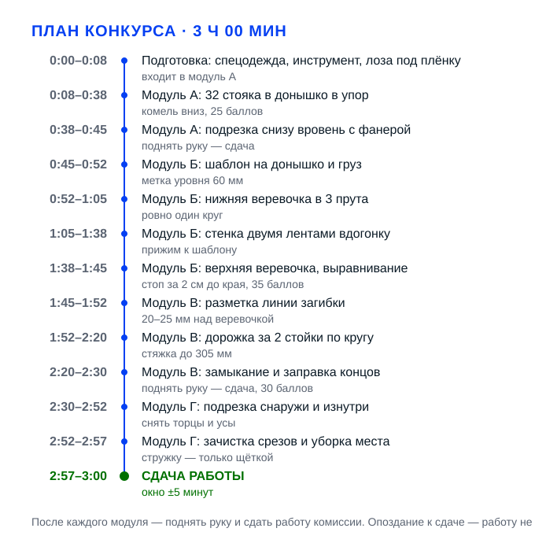
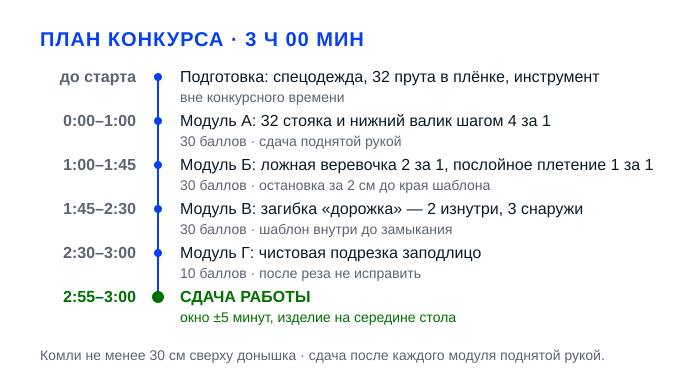
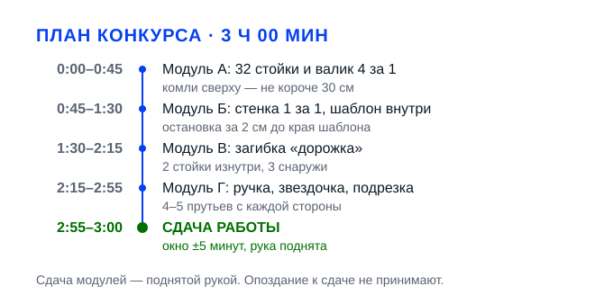

Лозоплетение (Р)
Задания ниже — официальные файлы «Абилимпикс» (источник: abilympics-russia.ru), разложенные по категориям. Решения написаны по тексту задания, регламенту и критериям оценки; в них указано, что именно проверяет эксперт.
Школьник
14–16 лет, базовый уровень заданияВыдержка из официального конкурсного задания: страницы, относящиеся к категории «Школьник» (стр. 5–9 источника).
Пошаговое решение
Задание для школьников — одно плетёное блюдо на фанерном донышке, и весь конкурс укладывается в три часа: 45 минут на установку тридцати двух стояков и подрезку снизу, час на стенку двумя лентами вдогонку, 45 минут на загибку «дорожка» и 30 минут на чистовую подрезку. Модуль А даёт 25 баллов, Б — 35, В — 30, Г — 10, всего 100, и все критерии измеримые: эксперт проверяет их линейкой. Материал выдан без запаса: 32 прута по 1200 мм диаметром 3,5–4 мм на стояки, 18 прутьев по 600 мм на веревочки и 10 лент по 1300–1400 мм на стенку. Донышко — фанера 270 мм с 32 отверстиями по 4,5 мм, готовое изделие должно выйти на 305 мм при высоте 80 мм. Исход решают ровная установка стояков в упор, натяг полотна с прижимом к шаблону, остановка плетения строго за 2 см до края шаблона и поднятая рука после каждого модуля.

Задача 1. Поставить 32 стояка и подрезать их снизуМодуль А · 25 баллов
Первый модуль длится 45 минут и даёт 25 баллов из ста. За это время на фанерном донышке 270 мм с 32 отверстиями по 4,5 мм должны встать тридцать два стояка из прута 3,5–4 мм длиной около 1200 мм, а их комли требуется подрезать вровень с фанерой. Работа кажется простой только на словах: здесь закладывается геометрия всего изделия, и волна по высоте, наклон стояка или треснувшая фанера потом не исправляются. Поэтому модуль А выигрывают не скоростью, а калибровкой материала, порядком на столе и умением ставить прут в упор без скола.
Действие 1.1. Разложить рабочее место и подготовить лозу
Шаг 1.1.1
Надеваем халат или фартук, убираем волосы под косынку и раскладываем инструмент справа от себя в том порядке, в каком он понадобится: секатор, нож-резак в чехле, шило, линейка на 300 мм, круглогубцы. Слева оставляем место под прут и ленту, по центру — донышко на подставке. Привозить инструмент по конкурсному заданию не требуется, на площадке есть аналоги, но свой нож, который лежит в руке, всегда удобнее чужого.
Организация рабочего места — первое, что фиксирует эксперт, и она входит в 25 баллов модуля А наравне с самими стояками. Порядок на столе экономит минуты: на 45 минут приходится 32 установки и подрезка, и каждое лишнее движение за инструментом в другой конец стола — это три-четыре секунды, которые складываются в пять минут к концу модуля. Халат и убранные волосы — требование охраны труда из раздела 6 конкурсного задания, а не пожелание.
Инструмент лежит в пределах вытянутой руки, ничего не свисает с края стола, лезвие в чехле, когда нож не в работе. Линейка под рукой, а не в сумке: мерить придётся постоянно. Свет падает слева или сверху, тени на донышке нет — при плохом освещении отверстия диаметром 4,5 мм сливаются в тёмную полосу.
Типичная ошибка — высыпать весь прут на стол и работать в куче: прутья цепляются друг за друга, комли путаются, и на поиск нужного уходит время. Вторая — оставить нож открытым между операциями: по технике безопасности он должен быть в чехле, а незакрытое лезвие на краю стола — это снятый балл за охрану труда и реальный риск порезать руку.
Эксперт обходит рабочие места в первые пять минут и смотрит на стол, а не на изделие: разложен ли инструмент, убраны ли волосы, не лежит ли нож лезвием к проходу.
Шаг 1.1.2
Перебираем прут для стояков: по заданию это 32 прута длиной около 1200 мм и диаметром 3,5–4 мм. Каждый берём в руку, сгибаем в дугу и отпускаем — прут должен пружинить и возвращаться, а не ломаться с хрустом. Отбраковываем кривые «саблей», с тёмными пятнами и те, что тоньше 3,5 мм: они не держат стенку и проваливаются в отверстие. Отдельно откладываем 18 прутьев по 600 мм диаметром 3–3,5 мм под веревочку и 10 лент длиной 1300–1400 мм.
Запас не предусмотрен: в задании прямо сказано, что количество прута и ленты дано без учёта запаса, поэтому каждый отбракованный прут — это проблема на весь конкурс, а не «ну ладно». Калибровка нужна из-за отверстия 4,5 мм: прут 3,5 мм сидит в нём плотно, прут толще 4 мм приходится вдавливать, и он расщепляется у комля, а тонкий начинает болтаться уже на подрезке. Ровность важнее толщины: кривой прут не встанет под прямым углом к донышку.
Разложите прут на три кучки: стояки, веревочка, лента. Стояков ровно тридцать два, веревочных восемнадцать, лент десять. Толщину проверяем штангенциркулем или по отверстию: комель 3,5–4 мм входит в отверстие 4,5 мм с лёгким натягом, но без стука и без раскачивания.
Самая частая ошибка — брать прут «какой дали» и не отбраковывать: два-три тонких стояка проваливаются в отверстия, и к концу модуля Б стенка в этих местах «дышит». Вторая — отложить калибровку на потом: неподходящий прут обнаруживается в момент установки, когда донышко уже наполовину заполнено и заменить его нечем.
Эксперт смотрит на кучки: разделён ли материал по назначению и по толщине. Хаотичная куча читается как отсутствие подготовки, а это часть баллов модуля А.
Шаг 1.1.3
Прут перед работой должен быть влажным и гибким: сухой ивовый прут ломается на радиусе меньше 100 мм. Опускаем комли в воду на 10–15 минут или протираем влажной тканью и укладываем в полиэтиленовую плёнку, оставив снаружи только те прутья, которые пойдут в работу в ближайшие десять минут. Ленту увлажняем сильнее: она тоньше, сохнет быстрее и трескается по волокну.
Плёнка — требование самого задания: лозу нужно подготовить к работе и завернуть в полиэтиленовую плёнку. Влажность решает две вещи сразу: прут гнётся без треска при установке и при загибке, а лента не расщепляется на волокна при плетении вдогонку. Без укрытия за 45 минут модуля А верхний слой подсохнет, и на загибке в модуле В начнутся сколы, которые уже не исправить.
Возьмите прут и согните его в кольцо диаметром примерно 150 мм: он должен гнуться без щелчка, а на коре не остаётся белых заломов. Плёнка лежит рядом, материал в ней укрыт, вода не течёт по столу — лужа на фанере размягчает донышко и разбухает отверстия.
Ошибка новичка — замочить прут на час «чтобы наверняка»: переувлажнённый прут становится скользким, веревочка не держит натяг и расползается. Обратная ошибка — работать сухим прутом и услышать первый хруст на загибке, когда половина работы уже сплетена.
Смотрит на гибкость первых прутьев в руках и на то, лежит ли материал под плёнкой. По этому признаку видно, работал ли участник с лозой раньше. Ещё он отмечает, не лежит ли мокрая лоза прямо на фанере: вода размягчает донышко.
Шаг 1.1.4
Берём фанерное донышко и проверяем его до первого прута: диаметр 270 мм, по окружности 32 отверстия диаметром 4,5 мм. Проходим каждое отверстие шилом изнутри, снимая заусенцы от сверла, и смотрим на просвет — не забито ли оно стружкой. Определяем лицевую сторону: она ровнее и чище, её оставляем снизу, наружу, потому что на готовом изделии низ виден при любой оценке.
Заусенец в отверстии — это клин, который расщепляет комель при установке: прут входит с треском, и у основания появляется трещина длиной 10–15 мм. Такой стояк сломается именно там, где на него придётся вся нагрузка при загибке, то есть в самом конце конкурса. Проверка занимает две минуты и сохраняет весь модуль А с его 25 баллами.
Считаем отверстия пальцем по кругу — их ровно 32, без пропусков и двойных. Шило проходит свободно, на выходе нет волокон фанеры. Донышко лежит на столе без качания: если качается, снизу попала стружка или кромка задрана.
Пропустить заусенцы — и первый же тугой прут треснет у комля; обнаруживается это через двадцать минут, когда стояки уже стоят. Вторая ошибка — перевернуть донышко «лицом вверх» и потом весь конкурс смотреть на шершавую сторону с задирами.
Эксперт проверяет донышко на просвет и считает отверстия. Ровная кромка без заусенцев входит в измеримый критерий модуля А. Отдельно смотрит, не разбиты ли отверстия у кромки: разбитое отверстие — это будущий люфт стояка.
Действие 1.2. Разобрать прут по толщине и рассчитать шаг
Шаг 1.2.1
Разбираем стояки по толщине и укладываем их по кругу в том порядке, в каком будем ставить: комель к комлю, вершина к вершине, по часовой стрелке. Комель — толстый конец, он идёт вниз, в донышко, а вершина остаётся сверху и потом уйдёт в загибку. Кладём так, чтобы каждый следующий был чуть толще предыдущего: тогда при переходе по кругу не будет ступеньки.
Комель внизу — не традиция, а расчёт: отверстие 4,5 мм держит только толстую часть, а тонкая вершина наверху гнётся без скола в загибке. Сортировка по толщине нужна для ровного шага: разница в 0,5 мм на тридцати двух стояках даёт заметную волну по верхнему краю, и «дорожка» потом ляжет неровно. Баллы за ровность полотна целиком лежат в модулях Б и В.
Разложите первые пять прутьев рядом: толщина комлей меняется плавно, без скачка. Все комли смотрят в одну сторону от вас. Если на пруте есть развилка или скол, он идёт в веревочку, а не в стояки. Если прут входит слишком легко, значит он тонкий и его место в веревочке, а не в стояках.
Поставить прут вершиной вниз: тонкий конец болтается в отверстии, и стояк наклоняется уже под весом первого круга. Вторая ошибка — ставить прутья вперемешку по толщине: верхний край получается пилой, и загибка идёт с перекосом.
Эксперт выборочно смотрит на нижний срез стояка: каким концом прут стоял в донышке. Это проверяется за секунды, а говорит о понимании материала. Заодно он смотрит, не лежит ли прут вперемешку с лентой.
Шаг 1.2.2
Выбираем положение, в котором донышко не будет ездить: специальная стойка на площадке, край стола с упором или работа на коленях с донышком между ног. Удобнее всего стойка: донышко фиксируется горизонтально на высоте 10–15 см над столешницей, и обе руки свободны. Если стойки нет, кладём донышко на край стола так, чтобы половина свисала, и прижимаем бедром.
Прут входит в отверстие с натягом, и на каждый требуется усилие в несколько килограммов: если донышко ездит, силы уходят на удержание, а не на установку. Задание прямо перечисляет варианты — стойка, край стола, колени, — то есть выбор положения это часть оцениваемой организации работы. За 45 минут предстоит 32 установки, и каждое неудобное движение умножается на тридцать два.
Нажмите ладонью на донышко в центре и толкните вбок: оно не сдвигается. Руки свободны, ничего не зажато, спина не скручена. Проверьте высоту: донышко видно сверху целиком, иначе отверстия придётся искать на ощупь.
Работать, придерживая донышко одной рукой: вторая рука не может одновременно держать прут и давить, прут входит под углом и расщепляется. Вторая ошибка — положить донышко на мягкую ткань: оно пружинит, и установка «в упор» не получается.
Эксперт смотрит на позу и на устойчивость донышка в первые минуты модуля: неустойчивая работа читается как потеря времени. Отдельно отмечает, не работает ли участник стоя, согнувшись над столом: так теряется контроль над донышком.
Шаг 1.2.3
Прикидываем геометрию до первого прута: окружность донышка 270 мм — это примерно 848 мм, на 32 отверстия приходится шаг около 26 мм. Прут диаметром 3,5–4 мм занимает примерно шестую часть шага, значит между стояками остаётся просвет около 22 мм: в него свободно проходят две ленты и прут веревочки. Снизу оставляем на подрезку 8–10 мм, чтобы комель вышел за фанеру.
Просвет 22 мм и есть причина, по которой стенка получается плотной: две ленты по 3–4 мм и веревочка из трёх прутьев заполняют его почти без зазоров. Если взять прут толще 4 мм, просвет сократится, лента пойдёт в натяг, полотно начнёт выгибаться наружу, и верхний диаметр 305 мм в модуле В не получится. Припуск снизу нужен потому, что подрезка вровень делается уже после установки всех стояков.
Промерьте линейкой расстояние между центрами двух соседних отверстий — около 26 мм. Между двумя поставленными стояками должен проходить палец, но не два. Если стояки стоят почти вплотную, значит взят слишком толстый прут.
Взять весь прут диаметром 4,5 мм «чтобы крепче»: он входит в отверстие только с усилием и раскалывает фанеру по кромке, а просвета под плетение не остаётся. Вторая ошибка — оставить снизу 3 мм: подрезать вровень нечем, нож срезает стояк вместе с верхним слоем фанеры.
Считает шаг и смотрит на первый ряд стояков в профиль: одинаковый наклон и одинаковый просвет — признак расчёта, а не спешки. Если он видит, что участник хватает линейку и меряет шаг до первого прута, это запоминается в его пользу.
Действие 1.3. Установить тридцать два стояка в упор
Шаг 1.3.1
Берём прут комлем вниз и вставляем в отверстие под углом примерно 45 градусов, пока комель не упрётся в кромку, затем выпрямляем до вертикали и дожимаем ладонью до упора. «В упор» означает, что прут прошёл отверстие и остановился сам, а не держится за счёт трения. Если прут идёт туго, поворачиваем его вокруг оси на четверть оборота: так волокна ложатся по отверстию и комель не расщепляется.
Угол 45 градусов при заводе — единственный способ пройти отверстие 4,5 мм без скола: сначала заходит кончик, потом комель раздвигает волокна фанеры по касательной. Прямой удар, который иногда пробуют вместо нажима, раскалывает фанеру между отверстиями, а трещина по донышку — это потеря почти всего модуля А с его 25 баллами, потому что донышко уже не восстановить.
Потяните установленный стояк вверх: он не выходит, но и не качается. Снизу комель виден в отверстии, фанера вокруг целая, без белых трещин. Все стояки отклонены от вертикали не больше чем на пару градусов — проверяется на глаз от центра донышка.
Забивать прут ладонью сверху, держа его строго вертикально: комель упирается в кромку и сминается, а фанера трескается между отверстиями. Вторая ошибка — вставить прут не до упора: он держится за счёт трения и вылезает под нагрузкой, когда начинается веревочка.
Эксперт проверяет один-два стояка на вытягивание и смотрит на донышко снизу. Трещина в фанере видна сразу и оценивается как дефект модуля А. Если участник дожимает прут ладонью до упора, а не бьёт по нему, эксперт это отмечает.
Шаг 1.3.2
Ставим стояки по кругу, но не подряд, а через четыре-пять отверстий: сначала четыре стояка крест-накрест, потом заполняем промежутки, каждый раз деля их пополам. Так донышко нагружается равномерно и не выгибается куполом в одну сторону. По ходу следим, чтобы просвет между соседними стояками оставался одинаковым — около 22 мм. Проверять просвет удобно ногтем: он должен проходить между стояками с небольшим усилием.
Последовательная установка по часовой стрелке создаёт одностороннее давление: восемь-десять прутьев подряд отжимают фанеру, и донышко приобретает лёгкую седловину. На глаз это почти незаметно, но к модулю В перекос даёт разницу диаметра: вместо 305 мм получится 300 с одной стороны и 310 с другой. Установка крест-накрест снимает этот риск полностью.
После первых двенадцати стояков положите донышко на стол: оно лежит без качания. Просветы по кругу одинаковые, а стояков на каждой четверти окружности ровно по восемь — значит круг делится ровно. Ещё один признак: донышко не приходится придерживать при установке последних стояков.
Ставить подряд, начиная от одного отверстия и идя по кругу: последние четыре стояка входят с трудом, а разница натягов даёт волну. Вторая ошибка — поправлять уже поставленные стояки, наклоняя их в стороны: так разбиваются отверстия, и прут начинает болтаться.
Смотрит на донышко с торца в середине модуля: плоскость должна оставаться плоской. Это измеримый признак, который эксперт проверяет линейкой на просвет.
Шаг 1.3.3
Пересчитываем стояки по кругу, касаясь каждого: их должно быть ровно тридцать два. Сверху над донышком каждый прут длиной около 1200 мм должен оставить запас не меньше 150–200 мм на загибку и подрезку при высоте изделия 80 мм. Стояки, у которых сверху осталось меньше 150 мм, сразу меняем на более длинные, пока донышко доступно и не закрыто плетением.
Пропущенный стояк — это дыра в стенке на весь модуль Б и разрыв в загибке в модуле В: «дорожка» идёт по кругу и без стояка рвётся. Число 32 задано в задании вместе с диаметром донышка и отверстий, и эксперт считает его первым делом. Запас сверху нужен потому, что загибка за две стойки забирает 120–150 мм длины прута.
Считаем вслух, загибая пальцы: тридцать два. Все верхние концы выше уровня будущего края не меньше чем на 150 мм. Приложите линейку от донышка: отметка 80 мм должна быть ниже среза прута минимум на 70 мм.
Пропустить одно отверстие и заметить это только в модуле Б, когда веревочка уже сплетена: вставить стояк в занятое плетением отверстие почти невозможно. Вторая ошибка — поставить короткий прут «потом наращу»: наращивание стояка в загибке — это узел, который видно на готовом изделии.
Пересчитывает стояки и проверяет их высоту линейкой. Это тот пункт, где потеря одного стояка стоит вполне конкретной части 25 баллов модуля А. Заодно он смотрит, не осталось ли пустого отверстия: его видно как чёрную точку между стояками.
Действие 1.4. Подрезать стояки снизу и сдать модуль
Шаг 1.4.1
Переворачиваем донышко и подрезаем комли снизу максимально вровень с фанерой. Нож держим лезвием от себя, режем короткими движениями по направлению к центру донышка, а не по кругу: так лезвие не цепляет соседний стояк. Секатором удобнее снимать основную длину, ножом доводить до плоскости фанеры. Срез ведём косым, под углом около 30 градусов к плоскости донышка.
Косой срез вровень с фанерой даёт изделию устойчивость: блюдо стоит на донышке, а не на торцах прутьев, и не шатается на столе при оценке. Прямой срез под ноль оставляет торец, который цепляется за скатерть и крошится. Кроме того, ровная подрезка — отдельный пункт модуля А: его результат описан в задании как фанерное дно с установленными стойками, подрезанными снизу.
Проведите ладонью по низу донышка: ничего не колется, торцы не выступают за фанеру больше чем на полмиллиметра. Поставьте донышко на стол — оно стоит ровно, все тридцать два среза касаются стола одновременно.
Резать по кругу, держа нож лезвием к себе: лезвие соскальзывает по фанере и уходит в соседний стояк, срезая его под корень. Вторая ошибка — оставить торцы на 2–3 мм ниже фанеры: блюдо стоит на прутьях, шатается, и подрезку приходится переделывать в модуле Г, где всего 30 минут и 10 баллов.
Переворачивает изделие и смотрит на низ при сдаче модуля. Именно этот ракурс показывает, подрезано вровень или на глаз. Если срез идёт под углом и не выступает за фанеру, он отмечает это как аккуратность.
Шаг 1.4.2
После подрезки проходим по кругу и слегка покачиваем каждый стояк: он должен стоять как влитой, без люфта. Комель, который после подрезки оказался короче фанеры, вылезет — такой стояк меняем сразу, пока снизу ещё есть за что взяться. Одновременно смотрим, не появились ли на фанере трещины от подрезки. Особенно внимательно проверяйте стояки, которые входили с усилием: именно у них натяг уходит первым.
Люфт в донышке — скрытый дефект: пока стояк не нагружен, он стоит, но первый круг веревочки тянет его на себя, и он выходит из отверстия вместе с куском фанеры. Найти это в модуле Б уже намного дороже: придётся распускать веревочку и переплетать низ. Проверка занимает две минуты и страхует 35 баллов следующего модуля.
Покачайте стояк в двух плоскостях — люфта нет, слышен только сухой скрип дерева. Снизу фанера целая. Число стояков после замены всё ещё тридцать два, и все подрезаны на одной высоте. Если после подрезки стояк стал ниже остальных на 2–3 мм, это уже видно по линии среза.
Считать, что раз прут вошёл с натягом, то он держится: после подрезки натяг падает, потому что исчезает распор о кромку. Вторая ошибка — менять стояк, выдернув его вверх: отверстие разбивается, и новый прут тоже будет болтаться; вынимать нужно проворотом.
Смотрит на низ и на люфт выборочных стояков, но главное — на ровность линии среза по всему кругу. Отдельно он смотрит, не осталось ли на донышке следов ножа: подрез по фанере виден как светлая царапина.
Шаг 1.4.3
Заканчиваем модуль А поднятой рукой: по заданию после каждого модуля участник поднимает руку, чтобы сдать работу комиссии. Перед этим убираем со стола обрезки в отведённую ёмкость, кладём нож в чехол, ставим донышко на подставку стояками вверх. Эксперту коротко говорим, что сделано: тридцать два стояка установлены, подрезаны вровень, донышко готово к шаблону.
Поднятая рука — не формальность: эксперты подходят к рабочему месту и фиксируют состояние изделия между модулями, и если рука не поднята, момент оценки можно пропустить. Чистый стол в этот момент тоже оценивается: обрезки и стружка на рабочем месте — нарушение требований охраны труда из раздела 6 задания, а нож без чехла — прямая опасность для соседа.
Рука поднята, эксперт подошёл и посмотрел. Стол чистый, инструмент в чехле, донышко не касается столешницы стояками. На часах не позже сорок пятой минуты от старта модуля А. Если эксперт не подошёл в течение минуты, руку не опускаем и работу не продолжаем.
Молча продолжать работу, чтобы «ещё чуть-чуть поправить»: время модуля А уходит, а модуль Б стоит 35 баллов и требует полного часа. Вторая ошибка — оставить обрезки на столе: они попадают под донышко и мешают ставить шаблон ровно.
Подходит по поднятой руке и осматривает донышко со всех сторон, а также фиксирует состояние рабочего места. Заодно он отмечает, убраны ли обрезки: стол оценивают раньше изделия.
Задача 2. Сплести стенку двумя лентами вдогонкуМодуль Б · 35 баллов
Самый дорогой модуль конкурса: час работы и 35 баллов из ста. Здесь на донышко ставится шаблон, он закрепляется грузом, снизу и сверху проходят по одному кругу веревочки в три прута из неокоренного прута, а между ними укладывается стенка двумя ивовыми лентами вдогонку. Плетение заканчивается за 2 см до верхнего края шаблона, потому что эти два сантиметра — место под верхнюю веревочку и загибку, которые выведут изделие на высоту 80 мм и диаметр 305 мм. Модуль решается ритмом: ровный натяг, прижим к шаблону, аккуратные стыки лент и остановка строго по метке.
Действие 2.1. Поставить шаблон на донышко и закрепить грузом
Шаг 2.1.1
Берём шаблон — форму, по которой будет формироваться стенка. Внутренний диаметр шаблона должен совпадать с диаметром донышка 270 мм, а высота рабочей части быть около 60 мм: плетение по заданию заканчивается за 2 см до верхнего края шаблона, а высота изделия 80 мм. Ставим шаблон на донышко и проверяем, что он входит внутрь круга стояков свободно, не отжимая их наружу.
Шаблон задаёт форму: пока стенка плетётся, прут стремится выгнуться наружу, и без опоры изнутри блюдо получается миской с раздутыми боками. Два сантиметра — не украшение: это запас на верхнюю веревочку и загибку, которые добавят к 60 мм ещё около 20 мм и выведут изделие на 80 мм. Если шаблон шире донышка, стояки отклонятся, и диаметр 305 мм не сойдётся.
Приложите линейку внутри шаблона: 270 мм по внутреннему диаметру, высота рабочей части около 60 мм. Шаблон стоит по центру, зазор между ним и стояками одинаковый по всему кругу — около 3–4 мм. Стояки не наклонены наружу.
Взять шаблон похожего диаметра: разница в 5 мм по диаметру даёт на стенке 2–3 мм перекоса и уводит верхний край за допуск. Вторая ошибка — поставить шаблон поверх стояков, а не между ними: прутья прижимаются к фанере и ломаются у комля.
Смотрит на шаблон в первые минуты модуля Б: совпадение диаметров и ровный зазор читаются сразу, без измерений. Если шаблон входит с зазором больше пяти миллиметров, стенка пойдёт бочкой, и это видно уже на третьем обороте.
Шаг 2.1.2
Сажаем шаблон на донышко строго по центру и закрепляем грузом: по заданию шаблон ставится внутрь на фанерное дно и фиксируется грузом. Груз весом 1,5–2 кг — банка с водой, мешочек с песком или металлический круг с площадки. Ставим его в центр и проверяем, что шаблон не сдвигается при нажатии пальцем сбоку. Донышко при этом остаётся на стойке, чтобы груз не давил на стол через прутья.
Груз держит шаблон от подъёма: когда пойдут веревочка и лента, усилие направлено вверх и наружу, и незакреплённый шаблон просто выходит из блюда. Кроме того, груз прижимает донышко к подставке, и оно не ездит при каждом обороте. Это прямо прописано в последовательности выполнения задания, то есть работа без груза — это невыполненный пункт модуля Б с его 35 баллами.
Толкните шаблон вбок и вверх через ткань: он не сдвигается. Груз лежит в центре и не свисает за край. Донышко не качается, стояки стоят вертикально и не сдвинулись с места. Проверьте ещё раз через пять минут работы: груз иногда сползает по гладкой фанере.
Обойтись без груза, придерживая шаблон коленом: обе руки нужны на плетение, и шаблон всё равно поднимается на третьем обороте. Вторая ошибка — положить груз на край шаблона: перекос, и стенка получается с наклоном в одну сторону.
Проверяет наличие и устойчивость груза: это пункт задания, который видно с любого расстояния и проверяется без линейки. Если груз стоит не по центру, шаблон перекашивается, и это заметно по зазору у стояков.
Шаг 2.1.3
Прикидываем раскладку по высоте до первого прута: нижняя веревочка в три прута займёт около 10 мм, стенка двумя лентами — около 50 мм, верхняя веревочка — ещё 10 мм, остальное добавит загибка. Отмечаем на шаблоне карандашом или наклеенной полоской бумаги уровень 60 мм — линию, до которой надо дойти плетением. Метку лучше делать мягким карандашом: чернила на шаблоне расплываются от влажного прута.
Полоса на шаблоне превращает задачу «плети, пока не кончится лента» в измеримую: видно, сколько осталось, и можно распределить скорость. Без метки почти всегда выходит либо 45 мм, и тогда не хватает высоты, либо 75 мм, и тогда стенка выше шаблона, а загибка идёт по мягкому месту, которое потом просядет. Высота 80 мм проверяется экспертом линейкой.
Метка стоит на 60 мм от донышка и видна по всей окружности. Линейка от донышка до метки даёт одинаковый результат с четырёх сторон. Метка не закрыта стояками. Если метка закрыта лентой, перенесите её выше, на свободную часть шаблона.
Плести без метки и остановиться, когда лента закончилась: перекос высоты в 10–15 мм — типичная причина снятых баллов в модуле Б. Вторая ошибка — отметить уровень на донышке, а не на шаблоне: донышко закроется плетением, и метка исчезнет.
Смотрит, есть ли на шаблоне метка уровня: аккуратная разметка — признак того, что участник считает, а не надеется. Аккуратная метка и промеры говорят ему, что участник ведёт работу по плану, а не по памяти.
Действие 2.2. Сплести нижнюю веревочку в три прута
Шаг 2.2.1
Отбираем три прута из отложенных шестисотмиллиметровых, диаметром 3–3,5 мм: они должны быть одинаковыми по толщине и гибкости, потому что веревочка из разных прутьев идёт волной. Каждый увлажняем и слегка разминаем между пальцами по всей длине. Комли подрезаем косо под 30 градусов: косой конец легче уходит под первый стояк и не создаёт ступеньки. Длину тоже сверяем: прут короче 550 мм не даст полного оборота и потребует лишнего стыка.
Веревочка в три прута — это три прута, работающие как один жгут: если один толще остальных, виток получается с перекосом и по верху первого круга идёт заметная волна. Косой срез комля решает главную проблему начала — прут не выпрыгивает из-под стояка при натяге. Три прута по 600 мм дают на окружности 848 мм примерно полтора оборота, дальше нужен завод нового.
Положите три прута рядом: разница по толщине не больше 0,2 мм. Все три гнутся в кольцо без щелчка. Комли срезаны косо, без мочалки из волокон, и не короче 550 мм. Если один прут заметно жёстче других, его лучше отложить: он пойдёт волной по всему кругу.
Взять первый попавшийся прут: веревочка получается с перекосом витка, и верхняя кромка уходит в сторону уже на первом круге. Вторая ошибка — срезать комель прямо: тупой торец упирается в стояк и выходит наружу на каждом обороте.
Смотрит на первый виток с близкого расстояния: одинаковый наклон всех трёх прутьев — главный признак качества веревочки. Его интересует, одинаково ли подрезаны комли: разная длина среза сразу даёт ступеньку на первом витке.
Шаг 2.2.2
Заводим три прута за первый стояк с внутренней стороны и начинаем веревочку: каждый прут проходит перед двумя стояками и уходит за следующий, то есть за один шаг обходит два стояка снаружи и один изнутри. Первый виток делаем медленно, придерживая прутья пальцем у первого стояка, чтобы они не расползлись. После двух-трёх стояков натяг выравнивается и работа идёт ровнее.
Схема «два снаружи, один изнутри» и есть веревочка в три прута: она даёт жгут высотой около 10 мм, который держит низ стенки и не даёт ленте проваливаться к донышку. Первый виток задаёт натяг: если он слабый, весь круг ляжет рыхло и его придётся переплетать, а в модуле Б всего час на всё. По заданию веревочка плетётся из неокоренного прута — кору не снимаем.
Первый виток лежит вплотную к донышку, без зазора. Все три прута идут с одинаковым наклоном, между ними не видно просветов. Жгут не пружинит при нажатии пальцем — натяг есть. Проверьте нажатием: жгут должен быть плотным, как верёвка, а не мягким, как пучок.
Начинать с завода только одного прута и потом догонять остальными: на первом стояке получается узел, который видно на готовом изделии. Вторая ошибка — тянуть слишком сильно: прут ломается у комля или выворачивает стояк из донышка.
Смотрит на первый виток и на высоту жгута: он должен быть ровным по всему кругу, без утолщений и провалов. Он смотрит и на то, захвачены ли все стояки: пропущенный стояк виден как вертикальная щель.
Шаг 2.2.3
Ведём веревочку по кругу против часовой стрелки, если вы правша: так правая рука тянет прут на себя, и натяг получается ровнее. Каждые пять-шесть стояков подтягиваем все три прута по очереди и проверяем, что жгут идёт параллельно донышку. Вернувшись к первому стояку, замыкаем ровно один круг: по заданию веревочка выполняется один круг. Стык закрываем с внутренней стороны, чтобы он не выходил на наружную поверхность.
Один круг — требование задания, а не выбор: два круга поднимут низ на 20 мм, и на стенку останется меньше высоты, а плести до метки за 2 см до края шаблона придётся меньше. Подтяжка каждые пять стояков нужна потому, что прут растягивается постепенно: без неё к концу круга натяг уходит и жгут становится рыхлым.
Круг замкнут, стык ровно на уровне жгута, без ступеньки. Высота жгута одинакова с четырёх сторон — около 10 мм. Все тридцать два стояка захвачены, ни один не пропущен и не вывернут наружу. Если где-то жгут тоньше, значит прут ушёл вглубь полотна и его надо подтянуть.
Сплести полтора круга для прочности: высота уходит, и в модуле В загибка не сходится по диаметру. Вторая ошибка — замкнуть круг с нахлёстом в три стояка: в этом месте получается утолщение, которое мешает ленте идти ровно.
Проверяет число кругов и замкнутость: один круг и аккуратный стык — то, что заявлено в задании, и это считают глазами за пару секунд. Он проверяет и высоту жгута: десять миллиметров — это ориентир, а не требование, важнее ровность.
Действие 2.3. Уложить стенку двумя лентами вдогонку
Шаг 2.3.1
Берём ивовую ленту: по заданию её 10 штук длиной 1300–1400 мм. Каждую проверяем на расщепы, увлажняем и сматываем в свободные кольца, чтобы она не путалась. Концы срезаем косо под 45 градусов — такой конец легче проходит между стояками и не заламывается. Две ленты, которыми начнём, отбираем одинаковыми по ширине, 3–4 мм. Отдельно откладываем одну ленту в запас: она понадобится, если на краю обнаружится расщеп.
Ширина ленты определяет плотность стенки: две ленты по 3–4 мм заполняют просвет 22 мм между стояками так, что полотно выглядит цельным. Лента шире 5 мм не пройдёт между стояками и начнёт выгибать их наружу, а это прямая потеря диаметра. Десяти лент по 1300–1400 мм хватает на стенку высотой 50 мм у блюда диаметром 270 мм, но запаса нет, поэтому каждая должна дойти до конца.
Ленты одинаковой ширины, без трещин и тёмных пятен, увлажнены и лежат в кольцах. Косой срез ровный, волокна не размочалены. Посчитайте: десять лент в запасе, две в работе. Проверьте ленту на излом: если она трещит, значит пересушена и её надо снова увлажнить.
Взять ленты разной ширины: полотно получается с перепадами, а на стыке образуется ступенька. Вторая ошибка — смотать ленту в тугой клубок: она ломается по сгибам, и на этом месте появляется разрыв через 10–15 стояков.
Оценивает ровность полотна целиком, а она начинается с одинаковой ширины ленты. Эксперт смотрит на стенку против света. Ему важно увидеть, что лента лежит кольцами, а не комком: комок означает, что её будут распутывать.
Шаг 2.3.2
Заводим две ленты за один и тот же стояк и начинаем плетение вдогонку: на каждом стояке одна лента идёт снаружи, вторая изнутри, а на следующем стояке они меняются местами. Обе движутся в одном направлении, одна за другой, будто догоняют друг друга. Первые три-четыре стояка проходим медленно, следя, чтобы ленты не перекрещивались на одном уровне. Если лента идёт туго, значит она шире просвета и её нужно подрезать по ширине, а не тянуть.
Плетение двумя лентами вдогонку даёт ровное плотное полотно без просветов: снаружи всегда видна одна лента, вторая в это время идёт внутри. Это заявленный в задании приём, и любая его замена — например, шахматное плетение одной лентой — видна сразу и снимает баллы модуля Б с его 35 баллами. Перекрест двух лент на одном стояке даёт утолщение, и выйти на 305 мм уже не получится.
На каждом стояке перекрытие одинаковое: одна лента снаружи, вторая внутри, и они чередуются через стояк. В полотне нет просветов на донышко, ленты лежат параллельно, без перекрутов и заломов. Проверьте на свет: полотно должно быть плотным, без просветов на донышко.
Перекрутить ленту при заводе так, что обе идут снаружи: полотно становится тонким, просветы видны на свет, и стенка теряет жёсткость. Вторая ошибка — начать ленты с разных стояков: в месте начала получится разрыв, который придётся закрывать заплатой.
Смотрит на первый ряд полотна снаружи и изнутри: чередование через стояк — то, что отличает вдогонку от любой другой схемы. Он смотрит и на угол, под которым лента входит в плетение: он должен быть одинаковым по кругу.
Шаг 2.3.3
Ведём полотно по кругу, пропуская ленту за стояк и подтягивая её после каждого второго стояка, а не после каждого: частая подтяжка даёт стянутый низ и раздутый верх. Полотно всё время прижимаем к шаблону: лента должна идти по его поверхности, а не отходить наружу. Каждые два оборота проверяем, что верхний край полотна идёт параллельно донышку. Проверять прижим удобно ладонью: если между полотном и шаблоном проходит палец, полотно отходит.
Подтяжка через два стояка распределяет натяг равномерно и не даёт полотну съехать к одному краю. Прижим к шаблону формирует форму: по заданию изделие должно быть сформировано на шаблоне по форме, и если лента отходит, стенка получается бочкой, а не блюдом. Ровная линия верхнего края критична для модуля В: загибка ляжет именно по ней.
Приложите линейку вертикально к шаблону в четырёх местах: расстояние от донышка до края полотна одинаковое, расхождение не больше 2 мм. Полотно касается шаблона по всей окружности, лента не топорщится наружу.
Тянуть ленту изо всех сил: стояки наклоняются внутрь, полотно садится, и высота не добирается до метки. Вторая ошибка — не прижимать к шаблону: через десять оборотов стенка уходит наружу на 5–8 мм, и диаметр перестаёт сходиться.
Обходит рабочее место и смотрит на профиль стенки: она должна повторять шаблон, а не отклоняться от него. Он обходит место с двух сторон и смотрит, не расходится ли полотно от шаблона кверху.
Шаг 2.3.4
Когда лента заканчивается, не ждём её последнего сантиметра: новую заводим за тот же стояк, за которым выходит старая, и перекрываем две-три стойки внахлёст, укладывая новую точно поверх старой. Стык должен оказаться на внутренней стороне, тогда снаружи его не видно. Конец старой ленты подрезаем косо и прячем под новую, а не оставляем торчать. Длину нахлёста отмеряем по стоякам: два-три стояка — это примерно 55–80 мм.
Наращивание внахлёст на две-три стойки — единственный способ, при котором стык не расходится при натяге: короткий нахлёст через один стояк выскакивает через пять-шесть оборотов. Стык на внутренней стороне нужен потому, что наружная сторона блюда видна при оценке. Десять лент на стенку означают примерно восемь стыков, и каждый виден, если сделан неаккуратно.
Стык лежит ровно, без утолщения: проведите пальцем — перепад не больше толщины ленты. Снаружи на месте стыка видна целая лента, концов не торчит. Полотно в этом месте не расходится при нажатии. Если стык виден снаружи, его нужно переложить сразу: потом это сделать уже нельзя.
Стыковать ленты в торец, без нахлёста: при натяге стык расходится, и в стенке появляется щель на всю высоту. Вторая ошибка — вывести стык на наружную сторону: он виден как утолщение и оценивается как дефект плетения.
Эксперт ищет стыки специально: поворачивает изделие и проводит пальцем по наружной стороне. Ровное полотно без швов — часть 35 баллов модуля Б. Он также смотрит, не разной ли ширины ленты в нахлёсте.
Шаг 2.3.5
Доводим полотно до метки и останавливаемся, не доходя примерно 2 см до верхнего края шаблона: по заданию плетение стенки заканчивается именно за 2 см до края. Последнюю ленту заводим за стояк полностью и подтягиваем, чтобы край был ровным. Считаем, сколько лент осталось: одна в запасе на ремонт края лишней не будет. Недоплетённый ряд легко определить по метке: она должна оказаться ровно над краем полотна.
Два сантиметра — это место под верхнюю веревочку в три прута, около 10 мм, и под загибку, которая поднимется над краем шаблона. Если доплести до самого верха, веревочку придётся ставить выше шаблона, где стояки уже не держат форму, и верхний край пойдёт волной. Именно этот запас и выводит изделие на высоту 80 мм при шаблоне 60 мм.
Расстояние от края полотна до верхнего края шаблона около 20 мм и одинаковое по всему кругу. Край полотна ровный, лента нигде не уехала вверх или вниз. Стояки над полотном торчат ровно и на одинаковую высоту.
Доплести до края шаблона, чтобы было плотнее: верхняя веревочка ложится выше формы, край теряет жёсткость, и загибка в модуле В идёт с перекосом. Вторая ошибка — остановиться на 40 мм от края: не хватает высоты, и изделие выходит ниже 80 мм.
Измеряет расстояние от края полотна до верха шаблона: 2 см — заявленная в задании величина, и её проверяют линейкой. Он прикладывает линейку от донышка до края полотна и сверяет результат с меткой.
Действие 2.4. Закрыть верхнюю веревочку и выровнять высоту
Шаг 2.4.1
Плетём верхнюю веревочку в три прута из неокоренного прута: по заданию после стенки идёт второй круг веревочки, такой же, как нижний. Заводим три прута за стояк, ведём по схеме «два снаружи, один изнутри» и закрываем ровно один круг, прижимая жгут к верхнему краю полотна. Концы замыкаем и подрезаем косо. Если прут коротковат, стык делаем на внутренней стороне, как и на стенке.
Верхняя веревочка стягивает стояки в жёсткое кольцо: без неё край полотна остаётся живым, стояки расходятся, и загибка ложится неровно. Кроме того, она даёт ту самую высоту, которой не хватает до 80 мм. Симметрия с нижней веревочкой — не украшение, а требование последовательности: в задании она прописана отдельным пунктом модуля Б.
Жгут идёт по всему кругу на одной высоте, вплотную к полотну, без зазора. Замкнут ровно один круг, стык не выделяется. Высота от донышка до верха жгута около 70 мм, и она одинакова с четырёх сторон. Проверьте стык на ощупь: он не должен выступать над жгутом.
Пропустить верхнюю веревочку: край полотна не держит форму, и загибка в модуле В идёт по мягкому месту — это 30 баллов следующего модуля. Вторая ошибка — сплести два круга: высота уходит за 80 мм, и в модуле Г придётся подрезать готовое изделие.
Считает круги веревочки снизу и сверху: их должно быть по одному. Это прямой пункт задания, который проверяется без разговоров. Он смотрит, лежит ли жгут вплотную к полотну: зазор в два миллиметра уже виден.
Шаг 2.4.2
Выравниваем высоту изделия: по заданию этот пункт завершает модуль Б. Ставим блюдо на ровную поверхность, прикладываем линейку в восьми точках по кругу и смотрим высоту от донышка до верхнего края. Где полотно выше, слегка подтягиваем стояки вниз и уплотняем ленту пальцем; где ниже — вытягиваем ленту изнутри, добавляя высоты. Работаем по 2–3 мм, не больше.
Изделие высотой 80 мм оценивается измеримым критерием, то есть линейкой, и разница в 5 мм по кругу видна как волна. Выравнивать нужно именно сейчас: после загибки подтягивать нечего, край уже зафиксирован. Восемь точек нужны потому, что волна обычно имеет две-три вершины, и по четырём точкам её можно не заметить.
Восемь промеров линейкой: расхождение между максимальным и минимальным не больше 3 мм. Поставьте блюдо на стол и посмотрите на просвет: верхний край ровный, без горбов. Стояки над веревочкой одинаковой высоты.
Выравнивать на глаз и оставить перекос 6–8 мм: при загибке он только усиливается, потому что каждая стойка тянет по-своему. Вторая ошибка — подтягивать ленту за край: она выходит из-под веревочки, и в полотне появляется щель.
Прикладывает линейку и смотрит на просвет. Неровная высота — самый заметный дефект модуля Б, он виден даже издалека. Если участник мерит в восьми точках и записывает цифры, это видно сразу и говорит о серьёзности подхода.
Шаг 2.4.3
Заканчиваем модуль поднятой рукой. Перед сдачей убираем обрезки ленты и прута, проверяем, что шаблон и груз на месте (снимать их пока нельзя), а полотно нигде не разошлось. Эксперту называем три цифры: высота полотна от донышка, число кругов веревочки, число лент в работе. Угол стола перед экспертом оставляем свободным, чтобы изделие можно было осмотреть по кругу.
Сдача по поднятой руке — процедура, прописанная в задании после каждого модуля: эксперты фиксируют результат модуля Б, определённый как сформированное на шаблоне по форме плетёное блюдо без завершающей загибки. Если рука не поднята, работа продолжается, и эксперт может оценить её уже вместе с загибкой, то есть по другим критериям.
Рука поднята, эксперт подошёл. Изделие стоит на шаблоне, полотно целое, обрезков на столе нет. Время в пределах 60 минут модуля Б, то есть не позже 1:45 от старта конкурса. Проверьте, что шаблон стоит по центру: сдвинутый шаблон заметен по неровному зазору.
Снимать шаблон и груз до оценки: без опоры полотно сядет на несколько миллиметров, и высота, которую вы выровняли, изменится. Вторая ошибка — задержаться на выравнивании: модуль В стоит 30 баллов и требует 45 минут.
Осматривает изделие на шаблоне снаружи и изнутри, проверяет плотность полотна и ровность кромки. Он поворачивает изделие и смотрит на стенку против света, а затем проверяет высоту линейкой.
Задача 3. Выполнить загибку «дорожка» за две стойкиМодуль В · 30 баллов
45 минут и 30 баллов на самый заметный элемент изделия. Загибка «дорожка» по схеме школьников идёт за две стойки изнутри и за две снаружи — она замыкает верхний край в жёсткое кольцо и одновременно служит декором. Здесь всё решает геометрия: линия разметки на стояках, запас прута, момент снятия шаблона и постепенная стяжка до верхнего диаметра 305 мм. Ошибка в первом проходе тянется через весь круг, а сломанный стояк в загибке почти не исправляется.
Действие 3.1. Подготовить стояки к загибке
Шаг 3.1.1
Перед загибкой снимаем груз, но шаблон пока оставляем: он держит форму, пока край не зафиксирован. Отмечаем на стояках линию загибки — примерно на 20–25 мм выше верхней веревочки, этого хватает на два прохода дорожки и подрезку. Метку ставим карандашом или ногтем по одному стояку за раз и сразу проверяем, что линия идёт по кругу ровно, а не ступеньками.
Загибка за две стойки съедает на каждом стояке около 20 мм длины, а оставшийся конец должен ещё уйти под плетение. Без метки половина стояков окажется короткой, и дорожку придётся наращивать, что видно на готовом изделии. Линия по кругу — это будущий верхний край, и он же даёт диаметр 305 мм, который проверяют линейкой.
Линия на всех стояках на одной высоте, промер линейкой в четырёх точках даёт одинаковый результат. Выше метки осталось не меньше 100 мм прута — этого достаточно, чтобы пройти две стойки и заправить конец.
Отметить повыше, чтобы наверняка хватило: загибка ляжет выше, и блюдо выйдет выше 80 мм, придётся подрезать дорожку, а это уже дефект отделки. Вторая ошибка — отметить ниже веревочки: загибка начнётся в полотне и разорвёт его.
Смотрит на линию разметки и на запас прута над ней: этот запас определяет, будет ли загибка ровной. Он также смотрит, не осталось ли на стояках следов карандаша на видном месте: метка должна уйти под плетение.
Шаг 3.1.2
Проходим по кругу и проверяем каждый стояк: концы должны быть целыми, без сколов и заломов, и примерно одинаковой толщины. Слишком тонкие вершины отбраковываем, если есть замена, или оставляем в загибку последними, где нагрузка меньше. Концы разминаем между пальцами и размачиваем в воде 5–10 минут: сухой прут на радиусе загибки ломается с треском. Отбраковку делаем до начала загибки: после первого прохода заменить стояк уже нельзя.
На загибке прут гнётся в дугу радиусом около 25 мм — это самый жёсткий изгиб за весь конкурс. Влажный прут держит такой радиус, подсохший ломается, и тогда в дорожке появляется обрыв, который можно только заправить внахлёст. Скол на конце — это место, где прут разойдётся по волокну при первом же проходе.
Согните два-три конца в кольцо диаметром 50 мм: гнутся без щелчка, кора не лопается. Все концы целые, размочены, лежат поверх шаблона и не свисают в полотно. Проверьте и толщину концов: слишком тонкий конец гнётся легко, но ломается при стяжке.
Начать загибку с сухими концами: первый же стояк ломается у основания, и его приходится выводить из плетения, что видно на готовом изделии. Вторая ошибка — оставить расщеплённый конец, он расходится на два волокна и торчит из дорожки.
Оценивает именно загибку, поэтому смотрит на концы до начала: целые и влажные концы — половина успеха модуля В. Заодно он смотрит на руки: работа с влажным прутом оставляет тёмные следы, и это нормально.
Шаг 3.1.3
Шаблон и груз держим до того момента, когда дорожка пройдёт примерно половину круга, и только потом снимаем груз и вынимаем шаблон. Вынимаем аккуратно, поворачивая его вокруг оси и придерживая стенку ладонью изнутри, чтобы полотно не просело. Если изделие сидит плотно, шаблон выходит с лёгким сопротивлением — это нормально. Если шаблон не идёт, не стучим по нему: лучше слегка покачать его из стороны в сторону.
Пока дорожка не замкнута, верхний край не держит форму, и без шаблона стенка садится внутрь на 3–5 мм. Это сразу видно в диаметре: вместо 305 мм получается 298. Снять шаблон всё равно нужно до конца загибки, иначе его не вынуть после того, как дорожка стянет край в кольцо.
После снятия шаблона стенка держит форму сама: при лёгком нажатии изнутри пружинит и возвращается. Диаметр по верхнему краю уменьшился не больше чем на 2 мм от исходного. Сравните диаметр до и после снятия: разница больше трёх миллиметров говорит о слабом крае.
Снять шаблон в самом начале модуля В, чтобы не мешал: стенка садится, и загибка ложится по уменьшенному диаметру. Вторая ошибка — вынимать шаблон рывком: полотно трескается по веревочке. И третье: тянуть шаблон вверх, не придерживая стенку, — полотно трескается по веревочке.
Наблюдает момент снятия шаблона: участник, который держит форму до половины круга, получает ровный край. Он отмечает и то, остался ли шаблон в изделии к концу модуля: это прямое нарушение последовательности.
Действие 3.2. Пройти дорожку по схеме «две изнутри, две снаружи»
Шаг 3.2.1
Начинаем загибку с того стояка, у которого конец самый длинный. Заводим конец за две стойки с внутренней стороны, выводим наружу и укладываем поверх верхней веревочки. Первый проход делаем свободно, без натяга: он задаёт наклон всей дорожки, и его всегда можно поправить, пока круг не замкнут. Кончик аккуратно подсовываем под веревочку шилом, чтобы он не выскочил на первом обороте.
Схема для школьников — за две стойки изнутри, за две снаружи: каждый прут обходит две стойки внутри, затем две снаружи и так по кругу. Такая дорожка даёт широкий декоративный край и одновременно стягивает стояки. Первый проход без натяга нужен потому, что дорожка идёт непрерывной лентой, и ошибка в начале тянется через весь круг.
Первый прут лежит поверх веревочки, обходит ровно две стойки внутри и выходит наружу. Наклон постоянный, без излома на стояке. Свободный конец смотрит в сторону движения. Проверьте натяжение: первый прут должен лежать свободно, но не болтаться.
Завести конец за одну стойку вместо двух: дорожка получается узкой и не стягивает край, а схема не соответствует заданию. Вторая ошибка — сразу тянуть на себя: первый стояк наклоняется внутрь, и весь круг идёт по спирали.
Считает стойки в первом проходе: две изнутри, две снаружи — это прописанная схема, её проверяют в первую очередь. Он смотрит, с какого стояка начата загибка: с длинного конца работа идёт ровнее.
Шаг 3.2.2
Ведём дорожку дальше, укладывая каждый следующий прут параллельно предыдущему с нахлёстом примерно в треть толщины. Через каждые четыре-пять стояков прихватываем дорожку пальцем и подтягиваем, чтобы она ложилась плотно к веревочке и не висела. Следим, чтобы все прутья шли в одном направлении и с одинаковым наклоном. Если прут ложится с изломом, его лучше заменить: излом останется на готовом изделии.
Дорожка — это косая оплётка края: если прутья идут с разным наклоном, край получается волнистым, и видно, что загибка выполнена не по схеме. Нахлёст в треть толщины даёт плотное полотно без просветов и без утолщений. Подтяжка через четыре стояка не даёт дорожке уехать вверх, к вершинам прута.
Дорожка лежит вплотную к веревочке, просветов нет, наклон прутьев одинаковый. Проведите пальцем по краю: он ровный, без ступенек. Ширина дорожки по всему кругу одинаковая. Ширину дорожки меряем в четырёх местах: расхождение больше двух миллиметров уже заметно.
Укладывать прутья с просветом в половину толщины: край получается рыхлым, и при подрезке в модуле Г дорожка расползается. Вторая ошибка — вести дорожку не по кругу, а змейкой вверх-вниз: край становится зубчатым.
Смотрит на дорожку сбоку: она должна быть плоской лентой, а не бугром. Это самый заметный элемент изделия и главный критерий модуля В. Он смотрит и на то, не топорщится ли край наружу: это признак слабого натяга.
Шаг 3.2.3
Строго держим чередование: за две стойки изнутри, за две снаружи, и каждый следующий прут смещается на одну стойку относительно предыдущего. Именно это смещение даёт переплетение, при котором дорожка держится сама, без клея и без гвоздей. Ведём счёт вслух или пальцем, чтобы не сбиться на середине круга. Если счёт сбился, лучше вернуться на два стояка назад и переложить, чем оставить ошибку.
Смещение на одну стойку превращает отдельные прутья в единую ленту: каждый прут прижимает предыдущий в месте перехода. Без смещения прутья лягут стопкой друг на друга и разъедутся при первой же подрезке. Задание фиксирует шаг именно как две стойки, и любое отклонение видно на готовом изделии.
На каждом стояке видно, как прутья перекрещиваются: один идёт снаружи, второй изнутри, третий снова снаружи. Дорожка не распадается, если отпустить её рукой. Шаг одинаковый по всему кругу. Проверьте место перехода: там видно, как прут уходит внутрь и выходит наружу.
Сбиться и пройти три стойки вместо двух: в этом месте дорожка становится шире, край идёт волной. Вторая ошибка — уложить два прута без смещения: они лягут друг на друга, и дорожка раскроется на этом участке.
Проверяет шаг загибки по всему кругу, а не на одном участке: неравномерность чаще всего и снижает балл модуля В. Он проверяет шаг и на противоположной стороне изделия: чаще всего сбиваются именно там.
Шаг 3.2.4
Идём по кругу, постепенно стягивая дорожку: каждый новый виток ложится чуть плотнее предыдущего, и край приобретает нужный диаметр. Стягиваем мягко, по 1–2 мм на виток: резкая стяжка ломает стояки у основания. Работаем в одном направлении, по часовой стрелке: смена направления разрывает рисунок. Стяжку ведём по часовой стрелке и не меняем направление до конца круга.
Диаметр 305 мм задан вместе с декоративной загибкой: донышко 270 мм плюс примерно 17 мм с каждой стороны. Именно стяжка выводит край на эту величину, и делать её надо постепенно, потому что прут пружинит. Резкая стяжка — самая частая причина сломанного стояка в модуле В, а сломанный стояк в загибке почти не исправить.
Промерьте диаметр по внешнему краю дорожки в двух перпендикулярных направлениях: около 305 мм, расхождение не больше 3 мм. Край идёт ровно, без талии. Стояки у основания целые, без белых заломов. Если диаметр больше нужного, стягиваем ещё на один виток, но не более чем на два миллиметра.
Стянуть сразу на 10 мм: часть стояков ломается у веревочки, и в дорожке появляются провалы. Вторая ошибка — не стягивать вовсе: край остаётся 290 мм, и изделие не попадает в размер. И третье: стягивать, держа изделие на весу, — край деформируется под собственным весом.
Измеряет диаметр линейкой: 305 мм по внешнему краю — измеримый критерий, и он проверяется обязательно. Он смотрит и на то, ровно ли идёт край по высоте: стяжка не должна поднимать одну сторону.
Шаг 3.2.5
Замыкаем дорожку: последние два-три прута заводим под уже уложенные, повторяя их ход, и выводим концы внутрь изделия. Место замыкания подбираем так, чтобы оно совпало с началом, а нахлёст был не меньше двух стоек. После замыкания дорожка должна читаться как непрерывная лента без видимого начала. Концы замыкания оставляем длиной 30–40 мм: их нужно будет заправить под плетение.
Замыкание — самый уязвимый участок: если концы просто подрезать, дорожка раскроется при первой нагрузке, а при оценке видно, что край не замкнут. Нахлёст в две стойки даёт трение, которое держит концы без клея. Непрерывность рисунка отличает аккуратную загибку от ученической.
Проведите пальцем по кругу: переходов и утолщений нет. Потяните за любой прут дорожки — он не выходит. Стык замыкания находится с внутренней стороны и не виден снаружи. Проверьте стык на просвет: между прутьями не должно быть щели.
Замкнуть как получится и оставить торчащие концы: они цепляются за всё, а на подрезке в модуле Г дорожка раскрывается. Вторая ошибка — замкнуть с нахлёстом в один стояк: конец выскакивает при стяжке. И третье: замыкать на видном месте — стык останется заметным пятном на краю.
Ищет место замыкания и проверяет, держится ли дорожка. Именно здесь чаще всего находят дефект, который снимает баллы модуля В. Он проверяет и то, не расходится ли край при нажатии изнутри.
Действие 3.3. Заправить концы и закрыть край
Шаг 3.3.1
Подрезаем концы, ушедшие внутрь, под острым углом, примерно 30 градусов к плоскости дорожки. Нож держим лезвием от себя, режем коротким движением, придерживая прут большим пальцем, чтобы он не выскочил. Срез должен быть чистым, без мочалки из волокон. Режем на подложке, чтобы не задеть плетение под концом, и не торопимся: срез делается один раз, переделать его без потери длины уже не получится.
Косой срез прячется под дорожку так, что его не видно, а прямой торец упирается в плетение и не даёт заправить конец до конца. Чистый срез экономит время в модуле Г: там за 30 минут нужно снять все торцы, и если они уже косые, работа идёт вдвое быстрее. Затупившийся нож рвёт волокна, и изделие выглядит небрежным.
Срез косой и гладкий, без задиров. Конец проходит под дорожку с лёгким усилием и не упирается. Торчащих волокон нет, кора вокруг среза целая. Проверьте, что срез не задел соседний виток: на нём не должно быть свежей царапины.
Резать тупым ножом: волокна рвутся, срез получается лохматым, и конец не входит под плетение. Вторая ошибка — резать под корень, срезая часть дорожки: в этом месте край ослабляется и расходится. И третье: резать на весу, не придерживая прут, — срез уходит по косой и портит длину.
Смотрит на срезы и на нож: острый инструмент и чистый срез — часть оценки аккуратности в модуле В. Он смотрит и на то, ровно ли уходят концы внутрь: торчащий конец виден как светлая точка.
Шаг 3.3.2
Заправляем каждый конец под дорожку шилом: шило вводим между прутьями вдоль хода плетения, раздвигаем их и заводим конец на две-три стойки внутрь. Вынимаем шило, придерживая прут, чтобы он не вышел обратно. Концы направляем в ту же сторону, куда идёт дорожка, — тогда они не работают против плетения. Шило вводим под острым углом к плетению, иначе оно расщепит прут вместо того, чтобы раздвинуть.
Заправка на две-три стойки даёт достаточное трение: конец держится без клея, и при подрезке его не нужно удерживать. Направление вдоль хода плетения важно потому, что при натяге дорожка тянет концы внутрь, а не наружу. Это последняя операция, где можно исправить неровность края, поэтому её делают не спеша.
Потяните за конец: он не выходит, но и не тянет дорожку за собой. Снаружи концов не видно. Шило прошло без скрипа, прутья не расщепились. Проверьте каждый конец отдельно: если тянется, значит прошёл только на один стояк.
Заправлять конец поперёк плетения: он расщепляет соседний прут и торчит через виток. Вторая ошибка — заправить на один стояк: конец выходит при стяжке, и его приходится заправлять повторно, уже без запаса длины.
Проверяет, держатся ли концы: подёргивает дорожку в разных местах. Плохо заправленный конец выдаёт себя утолщением. Он подёргивает дорожку в нескольких местах: плохо заправленный конец выдаёт утолщение.
Шаг 3.3.3
Проходим по кругу снаружи и изнутри, ощупывая край: нигде не должно быть торчащих торцов, заусенцев и расщеплённых волокон. Всё, что торчит, подрезаем заподлицо и заправляем. Затем проверяем, что дорожка нигде не разошлась: нажимаем пальцем на каждый виток по кругу. Работаем при хорошем свете: на тёмной коре торчащее волокно видно только под углом, а на ощупь — сразу.
Торчащий торец виден на готовом изделии и оценивается как дефект отделки, а в модуле Г на подрезку отведено всего 30 минут и 10 баллов. Лучше снять всё сейчас, пока изделие держится в руках и край доступен. Кроме того, торчащий конец может порезать руку — а это уже вопрос охраны труда.
Проведите ладонью по наружному краю и по внутреннему: нигде не колется. Каждый виток пружинит при нажатии и возвращается. Концов не видно ни снаружи, ни изнутри. Отдельно проверьте места стыков лент: там концы выходят чаще всего.
Оставить один маленький кончик: при подрезке он выскочит и потянет за собой виток. Вторая ошибка — проверять только снаружи: изнутри торцы не видны, но именно там они и остаются. И третье: проверять край в перчатках — через них не чувствуется ни торец, ни заусенец.
Ощупывает край рукой — это самый быстрый способ найти дефект загибки и один из первых приёмов эксперта. Он проводит рукой по краю именно снаружи, где дефект заметнее всего.
Действие 3.4. Промерить изделие и сдать модуль
Шаг 3.4.1
Проверяем изделие по размерам из задания: верхний диаметр вместе с декоративной загибкой около 305 мм, высота изделия 80 мм. Мерим диаметр в двух перпендикулярных направлениях по внешнему краю дорожки, высоту — от плоскости донышка до верхней точки края в четырёх местах. Записываем цифры на бумаге, чтобы видеть расхождение. Мерить удобно по внешнему краю дорожки, приложив линейку через центр изделия.
Критерии модулей измеримые, и эксперт проверяет их линейкой: 305 мм и 80 мм — те величины, по которым видно, попал участник в задание или нет. Четыре промера высоты нужны потому, что край может быть ровным по кругу, но наклонённым в одну сторону. Если расхождение больше 3–4 мм, ещё есть время поправить.
Диаметр 305 мм плюс-минус 3 мм в двух направлениях. Высота 80 мм плюс-минус 3 мм в четырёх точках. Изделие стоит на столе без качания, дорожка не касается стола. Запишите цифры: на сдаче их придётся называть, а не вспоминать.
Не мерить вообще, положившись на глаз: расхождение в 8–10 мм по высоте — это снятые баллы, о которых участник узнаёт только на разборе. Вторая ошибка — мерить по внутреннему краю дорожки: цифра выходит меньше на толщину плетения.
Мерит линейкой при сдаче модуля: диаметр и высота — основные измеримые критерии всего задания. Он сверяет свои промеры с заданием и смотрит, не вышло ли изделие за допуск по высоте.
Шаг 3.4.2
Сдаём модуль поднятой рукой. Перед этим убираем инструмент в чехол, смахиваем щёткой обрезки со стола, ставим изделие на подставку так, чтобы дорожка была видна целиком. Эксперту говорим, что сделано: загибка дорожка за две стойки, край замкнут, диаметр и высота в допуске. Если на краю обнаружился дефект, о нём лучше сказать самому: это честнее и снимает половину вопросов.
Результат модуля определён в задании как сформированное на шаблоне по форме плетёное блюдо с загибкой, и именно в этот момент эксперт фиксирует, что загибка выполнена по схеме. Поднятая рука — единственный сигнал, по которому комиссия подходит к рабочему месту. Чистый стол и убранный инструмент входят в требования охраны труда.
Рука поднята, эксперт подошёл и осмотрел край. Инструмент в чехле, обрезки убраны щёткой, а не сметены рукой. До конца модуля осталось время на осмотр изделия. Проверьте, что изделие не касается стола дорожкой: это видно по просвету.
Оставить обрезки на столе и сметать их рукой: по разделу 6 задания стружку и обрезки сметают только щёткой, а рукой можно порезаться о тонкий срез прута. Вторая ошибка — не поднять руку и продолжать полировать край: время модуля Г уходит.
Осматривает загибку по кругу, измеряет диаметр и оценивает ровность края. Он осматривает загибку по кругу, измеряет диаметр линейкой и оценивает ровность края на просвет.
Задача 4. Подрезать изделие начисто и сдать работуМодуль Г · 10 баллов
Последние 30 минут и 10 баллов из ста. Здесь ничего не плетётся: изделие подрезается начисто, снимаются торцы и усы, зачищаются срезы, рабочее место приводится в порядок и блюдо сдаётся комиссии. Баллов мало, но потерять их легко: торчащий торец, рваный срез или обрезки на столе перечёркивают впечатление от всей предыдущей работы. Поэтому модуль Г — это не формальность, а последняя возможность показать, что изделие доведено.
Действие 4.1. Подрезать торцы снаружи и изнутри
Шаг 4.1.1
Начинаем чистовую подрезку снаружи: проходим по кругу и подрезаем все торцы, оставшиеся над дорожкой, вровень с её поверхностью. Нож держим под углом около 45 градусов к плетению, режем от себя короткими движениями, придерживая изделие второй рукой. Срез ведём по направлению волокон, а не поперёк: тогда он получается гладким и не оставляет белой полосы на коре.
Чистовая подрезка — отдельный модуль на 10 баллов, и в задании он описан как окончательная подрезка изделия. Снаружи видно всё: любой торец, выступающий на миллиметр, читается как незаконченная работа. Угол 45 градусов нужен, чтобы срез уходил под плетение и не разрушал виток дорожки, который держит край.
Проведите ладонью по наружному краю: не колется, поверхность ровная. Торцов над дорожкой не видно. Кора вокруг срезов целая, без белых содранных пятен. Проверьте низ: там тоже не должно быть выступающих торцов.
Резать поперёк волокон: срез получается рваным, и на тёмной коре остаётся светлая мочалка. Вторая ошибка — срезать вместе с торцом часть дорожки: край истончается и распускается на этом участке. И третье: резать, не придерживая изделие, — оно проворачивается и срез уходит по косой.
Смотрит изделие снаружи при сдаче: чистота края — главный признак выполненного модуля Г. Он поворачивает изделие к свету: именно на свету видно, выступает ли торец над дорожкой.
Шаг 4.1.2
Переворачиваем изделие и подрезаем торцы изнутри, те, что заправлены под дорожку. Работаем кончиком ножа, лезвие направляем к центру изделия, а не наружу: так оно не выходит за край и не режет плетение. Все срезы делаем вровень с внутренней поверхностью, не заглубляя лезвие в прут. Срез ведём по направлению волокна, иначе на внутренней стороне останется рваная кромка.
Изнутри видно не всё, но именно там остаются длинные концы после заправки: они цепляются за пальцы и за скатерть. Внутренний край блюда — рабочая поверхность, и заусенец там недопустим. Направление лезвия к центру — правило безопасности: при соскальзывании нож уходит внутрь изделия, а не в руку.
Проведите пальцами по внутреннему краю по кругу: гладко, без запилов. Концов под дорожкой не осталось. Плетение в местах срезов не разошлось и не разрыхлилось. Проверьте, не осталось ли под дорожкой коротких обрезков: они выходят при нажатии.
Резать, направив лезвие наружу: при соскальзывании оно выходит из изделия и попадает по пальцам, которыми вы держите блюдо. Вторая ошибка — оставить концы по 5 мм, чтобы держалось крепче: они торчат и цепляются за всё.
Переворачивает изделие и смотрит на внутренний край: чистота изнутри отличает доведённую работу от почти готовой. Он смотрит на внутренний край именно у дна: там чаще всего остаются заправленные концы.
Шаг 4.1.3
Срезаем усы — тонкие волокна и расщеплённые кончики, которые остаются после подрезки. Делаем это ножом плашмя, ведя лезвие по поверхности плетения, а не врезаясь в него. Особое внимание — местам стыков лент: там волокна торчат чаще всего. Нож держим почти плашмя, угол не больше десяти градусов: так лезвие снимает волокно, а не режет прут. После каждого прохода протираем лезвие, чтобы волокна не тянулись за ним.
Усы — самая заметная мелочь на готовом изделии: они ловят свет и создают ощущение небрежности, хотя сама работа может быть сделана хорошо. Плашмя ведённое лезвие снимает волокно, не задевая прут. Стыки лент — те места, где волокна выходят из-под нахлёста, и именно их проверяют на конкурсе.
Проведите по изделию ладонью в разных направлениях: ничего не цепляется. На свету не видно торчащих волосков. Стыки лент ровные, без бахромы по краям. Проверьте стыки лент отдельно: там волокна выходят из-под нахлёста.
Врезаться лезвием в плетение, чтобы срезать усы поглубже: остаётся подрез, который на светлом пруте виден как тёмная полоса. Вторая ошибка — не трогать усы вовсе: они есть почти всегда, и их отсутствие отличает аккуратную работу.
Смотрит на изделие против света: торчащие волокна видны как светлая бахрома по краю и по стыкам. Он смотрит изделие на просвет и поворачивает его к окну — так бахрома заметна сразу.
Действие 4.2. Зачистить срезы и убрать рабочее место
Шаг 4.2.1
Зачищаем срезы мелкой наждачной бумагой, если она есть в наборе, или снимаем задиры ножом. Движения — вдоль волокон, лёгким нажимом: цель не отшлифовать прут, а убрать задир. Особое внимание нижней части, где прутья выходят из фанерного донышка, и местам, которыми изделие ставится на стол. Наждачную бумагу держим двумя пальцами и работаем короткими движениями, не нажимая.
Задир на срезе — это место, где прут начнёт расщепляться при первой нагрузке, а на конкурсе изделие берут в руки несколько раз. Нижняя часть важна потому, что именно там блюдо касается стола, и задир цепляется за поверхность. Шлифовать прут целиком не нужно: кора должна остаться целой, иначе изделие теряет вид.
Проведите пальцем по каждому срезу: гладко. Кора вокруг среза целая, без белых пятен. Нижняя часть донышка не цепляется за ткань и не оставляет затяжек. Проверьте низ изделия, поставив его на светлую ткань: задиры оставляют затяжки.
Шлифовать прут по всей длине: кора стирается, и изделие выглядит выцветшим. Вторая ошибка — зачищать влажный прут: ворс поднимается, и поверхность становится шершавой, как наждак. И третье: тереть срез поперёк волокон — ворс поднимается и поверхность становится хуже.
Ощупывает срезы и низ изделия: именно там находят задиры, которые снимают баллы модуля Г. Он проводит пальцем по каждому срезу по кругу — так дефект находится за несколько секунд.
Шаг 4.2.2
Смахиваем щёткой стружку и обрезки со стола в отведённую ёмкость, а не рукой и не сдувая. Инструмент складываем в чехол и в отведённое место, нож закрываем. Плёнку с лозой убираем, остатки материала складываем отдельно: по заданию после работы рабочее место приводится в порядок. Стружку сметаем от себя, а не на соседнее место: иначе она окажется в чужой работе.
Раздел 6 задания прямо требует не сметать стружку руками и не сдувать её ртом: тонкий срез прута режет кожу, а сдутая стружка летит в соседа и в глаза. Убранное рабочее место входит в требования охраны труда, которые проверяются на площадке, и его состояние видно в момент сдачи. Кроме того, чистый стол позволяет ещё раз осмотреть изделие без помех.
На столе нет обрезков, инструмент в чехле, ёмкость с отходами закрыта. Плёнка убрана, материал сложен. Руки вымыты, халат не в стружке. Проверьте, что под столом и на полу у вашего места тоже нет обрезков.
Сметать стружку рукой: тонкие срезы ивы режут ладонь, и на конкурсе это травма, а не мелочь. Вторая ошибка — оставить нож открытым на столе: по разделу 6 он должен быть в чехле до и после использования.
Обходит рабочие места в конце и смотрит на стол: чистота входит в культуру работы, которую оценивают наравне с изделием. Он смотрит и на ёмкость с отходами: обрезки должны быть в ней, а не на столе.
Действие 4.3. Осмотреть изделие и сдать его комиссии
Шаг 4.3.1
Проходим по изделию по порядку: донышко, стояки, нижняя веревочка, полотно, верхняя веревочка, дорожка, срезы. На каждом пункте спрашиваем себя, что видно на просвет и на ощупь. Затем промеряем три величины: диаметр донышка 270 мм, верхний диаметр 305 мм, высоту 80 мм, и записываем их для себя. Осмотр делаем при дневном свете или под лампой сбоку: сверху дефекты не видны.
Финальный осмотр по фиксированному порядку не даёт пропустить то, что уже смотрел: глаз привыкает к изделию и перестаёт видеть дефект. Три промера — это три измеримых критерия задания, и именно их эксперт проверит линейкой при сдаче. Порядок осмотра от донышка к краю повторяет последовательность работы, поэтому дефект сразу привязывается к своему модулю.
Все семь пунктов пройдены, дефектов не найдено или найдено и исправлено. Диаметр 305 мм, высота 80 мм, донышко 270 мм. Изделие стоит на столе ровно, дорожка целая, срезов не видно. Если нашли дефект, исправляйте его сразу: до сдачи остаётся меньше времени, чем кажется.
Осматривать в целом, издалека: на расстоянии вытянутой руки видно только форму, а все дефекты живут в деталях. Вторая ошибка — не мерить повторно после подрезки: подрезка снимает 1–2 мм, и размер может уйти из допуска.
Делает ровно то же самое при сдаче: осмотр по кругу и три промера линейкой. Он проходит по тому же порядку: донышко, стояки, веревочки, полотно, дорожка, срезы, и мерит три размера.
Шаг 4.3.2
Поднимаем руку и сдаём готовое изделие. Ставим блюдо на стол перед собой донышком вниз, дорожкой к эксперту, рядом кладём линейку и убранный инструмент. Коротко называем результат: блюдо на фанерном донышке 270 мм, тридцать два стояка, две веревочки по одному кругу, стенка двумя лентами вдогонку, загибка дорожка, диаметр 305 мм, высота 80 мм. Говорим спокойно и коротко: перечисление цифр занимает двадцать секунд.
Сдача по поднятой руке прописана в задании после каждого модуля, включая последний, и это единственный момент, когда изделие оценивают целиком. Названные цифры помогают эксперту сверить размеры, а не искать их самому: это экономит время и исключает спор. Убранный инструмент и ровно стоящее изделие — последнее, что видит эксперт.
Рука поднята, эксперт подошёл. Изделие стоит устойчиво, ничего не свисает с края стола. Время сдачи — до конца третьего часа, то есть не позже 3:00 от старта конкурса. Убедитесь, что изделие не качается: качающееся блюдо эксперт замечает первым.
Сдавать, не убрав инструмент и обрезки: эксперт видит стол раньше изделия. Вторая ошибка — затянуть до последней минуты и сдавать в спешке: работу принимают по поднятой руке, и опоздание к сдаче может стоить всей оценки.
Принимает изделие, осматривает его по кругу и сверяет размеры с заданием. Он принимает изделие, осматривает его по кругу, сверяет три размера с заданием и фиксирует результат в протоколе.
Студент
учащиеся колледжей и техникумовВыдержка из официального конкурсного задания: страницы, относящиеся к категории «Студент» (стр. 5–6, 9–11 источника).
Пошаговое решение
Конкурсное задание категории «Студенты» — одно изделие и четыре модуля: за три часа нужно сплести Пасхальное блюдо на фанерном донышке диаметром двести семьдесят миллиметров с тридцатью двумя отверстиями. Прут только ивовый, тридцать две штуки по тысяче четыреста миллиметров, диаметром четыре-четыре с половиной, без запаса; готовое блюдо должно выйти на триста десять миллиметров по загибке при высоте восемьдесят. Час отведён на стояки и нижний валик шагом 4 за 1, сорок пять минут на стенку — ложную веревочку 2 за 1 и послойное плетение 1 за 1, сорок пять минут на загибку «дорожка» за две стойки изнутри и за три снаружи, тридцать минут на чистовую подрезку; всего сто баллов. После каждого модуля участник поднимает руку и сдаёт результат комиссии. Исход решают три вещи: запас комля не меньше тридцати сантиметров, остановка плетения за два сантиметра до края шаблона и равномерный шаг загибки.

Задача 1. Поставить 32 стояка и выполнить нижний валикМодуль А · 30 баллов · 1 час
Модуль А идёт первым, длится час и стоит тридцать баллов из ста — столько же, сколько плетение стенки и загибка. Так оценено основание изделия: если стояки встали с разным наклоном или валик получился рыхлым, дальше исправить это уже нельзя, вся работа пойдёт с перекосом. За этот час нужно успеть три вещи: организовать место и подготовить лозу, поставить в фанерное донышко все тридцать два прута комлями вверх с запасом не менее тридцати сантиметров и заплести по кромке донышка нижнюю загибку — валик — шагом 4 за 1. Работа физическая, но решает её не сила, а порядок: пока прут не размят и не увлажнён, он ломается на третьем обороте, а переделка валика съедает весь запас времени.
Действие 1.1. Организовать место и подготовить лозу
Шаг 1.1.1
Надеваем спецодежду, которую выдают на площадке: фартук или халат, нарукавники по желанию, закрытую обувь. Стол у вас размером примерно три метра на метр девяносто, и его надо разложить на три зоны: слева мокрая лоза в плёнке, по центру рабочая поверхность с донышком, справа инструмент — нож в чехле, секатор, металлическая линейка, шило, шаблон и груз. Нож кладём рукояткой к себе, лезвием от корпуса, и держим его в чехле всякий раз, когда он не в руке.
Организация рабочего места — часть оценки модуля А: тридцать баллов ставятся не только за валик, но и за то, как участник держит пространство и инструмент. Разложенные по зонам вещи дают ровно тот выигрыш по времени, которого не хватает в конце часа: рука идёт по кругу и не ищет линейку под стружкой. Инструкция по охране труда здесь прямая: инструмент только исправный, лезвие направлено от себя, работу выполнять при хорошем освещении, потому что по КЗ на рабочее место должно приходиться не менее трёхсот люкс.
Проверьте три признака: инструмент лежит в пределах вытянутой руки и не на краю стола; нож в чехле, если вы его не держите; между вашим столом и соседним остаётся не меньше полутора метров, как требует схема застройки площадки. Если свет падает так, что кромка донышка уходит в тень, разверните донышко или попросите подвинуть лампу до старта.
Типичная ошибка — разложить всё в одну кучу по центру: тогда донышко некуда положить, вы поднимаете его на весу, а мокрая лоза пачкает стол. Вторая — работать ножом без чехла и оставлять его открытым на краю стола: это и травма, и нарушение требований охраны труда, за которое снимают баллы независимо от качества изделия.
Эксперт обходит площадку в первые минуты модуля и смотрит именно на зоны и на положение ножа. Второй раз он возвращается к вашему столу через полчаса и отмечает, сохранился ли порядок.
Шаг 1.1.2
Принимаем прут: по конкурсному заданию на всё изделие идёт тридцать два прута длиной около тысячи четырёхсот миллиметров и диаметром от четырёх до четырёх с половиной миллиметров. Пересчитываем их вслух и раскладываем по восемь штук в четыре ряда, чтобы не сбиться. Каждый прут прощупываем по всей длине: отбраковываем с изломом, тёмными пятнами, плесенью, с сильной кривизной и с разницей в толщине между комлем и вершиной больше двух миллиметров, потому что такой прут не ляжет ровно в ряд.
Тридцать два отверстия и тридцать два прута — расчёт в задании точный, без запаса, и о нём прямо сказано: количество материала указано без учёта запаса. Один сломанный прут означает, что стойки останется тридцать одна, а восьмушка баллов за модуль теряется сразу на равномерности шага. Диаметр тоже не формальность: отверстие в донышке четыре с половиной миллиметра, и прут тоньше трёх с половиной миллиметров там болтается, а толще пяти просто не войдёт без расщепления.
На столе четыре кучки по восемь прутов, каждая промерена линейкой по диаметру в средней части, отбракованные лежат отдельно, а не в общей куче. Если отбракованных больше двух — сразу поднимайте руку и говорите эксперту, а не начинайте работу с недобором.
Самая частая ошибка — пересчитать прут на глаз, взять первые тридцать два и обнаружить нехватку уже после валика, когда любая замена требует переплетать кромку. Вторая — оставить в работе прут с перекрутом: при плетении он выгибается дугой, и стойка уходит в сторону тем сильнее, чем выше стенка.
Эксперт подходит на приёмке и смотрит, пересчитан ли прут и промерен ли диаметр. Отдельно фиксируется, заявлен ли брак до начала работы.
Шаг 1.1.3
Увлажняем лозу: опускаем прутья в воду на пятнадцать-двадцать минут или обильно опрыскиваем из пульверизатора и выдерживаем под плёнкой. Затем заворачиваем весь запас в полиэтиленовую плёнку так, чтобы из неё торчали только те концы, с которыми вы работаете прямо сейчас. Воду на столе не оставляем, лужицы вытираем сразу, потому что мокрый пол — это ещё и риск падения.
Пункт про подготовку лозы и упаковку в полиэтиленовую плёнку записан в конкурсном задании отдельной строкой, ещё до модулей, и оценивается как часть подготовительной работы. Сухой прут не гнётся, а ломается: валик из него получается с трещинами, а треснувшая стойка не держит загибку в модуле В. Плёнка нужна не для красоты — за час работы открытая лоза на сухом воздухе площадки теряет влагу и через сорок минут ведёт себя как невымоченная.
Готовый к работе прут гнётся в кольцо диаметром около десяти сантиметров без хруста и трещин на коре. Проверьте на одном пруте, который не жалко: согните его у комля. Если слышен щелчок, дайте ещё пять минут в воде — они дешевле, чем переделка валика.
Начать работу на сухом пруте, потому что время идёт: первые два витка лягут нормально, а на третьем прут лопнет по волокну, и вы получите валик с торчащим обломком, который невозможно замаскировать подрезкой. Вторая ошибка — держать лозу в воде весь час: перемоченный прут становится мягким и после высыхания даёт усадку, отчего плетение идёт волной.
Эксперт щупает лозу на вашем столе и смотрит, накрыта ли она плёнкой. Это один из немногих пунктов, который видно без разбора изделия.
Действие 1.2. Установить тридцать два стояка в донышко
Шаг 1.2.1
Осматриваем фанерное донышко: по заданию его диаметр двести семьдесят миллиметров, в нём тридцать два отверстия диаметром четыре с половиной миллиметра. Протираем его от пыли, проводим пальцем по кромке и проверяем, нет ли скола фанеры и заусенцев в отверстиях: заусенец срезает кору на пруте при установке. Затем отмечаем карандашом четыре точки через равные промежутки — по ним потом удобно считать, все ли стояки поставлены, и видно, не сбился ли шаг.
Донышко — единственный элемент изделия, который вы не изготавливаете сами, и все тридцать баллов модуля А держатся на нём: скол на кромке потом закроет валик, а вот заусенец в отверстии испортит прут уже при установке. Разметка на четыре сектора — ваш собственный контрольный инструмент: при тридцати двух отверстиях на глаз не определишь, где именно не хватает стойки, а по секторам видно мгновенно.
Отверстия чистые, прут входит в любое из них от руки с небольшим усилием и не проваливается. Кромка гладкая. На донышке четыре метки, между соседними примерно равное расстояние.
Пропустить осмотр и начать ставить стойки в донышко с заусенцами: половина прутьев входит с задиром коры, а задир — это место, где прут ломается через двадцать минут работы. Вторая ошибка — не размечать сектора и потерять счёт на двадцатом отверстии.
Эксперт смотрит на донышко до установки стояков: чистые ли отверстия, не погнуто ли оно, есть ли у участника система счёта.
Шаг 1.2.2
Берём прут комлем в левую руку, а тонкий конец направляем в отверстие сверху вниз и протягиваем до тех пор, пока над донышком не останется комель длиной не менее тридцати сантиметров — это требование задания, и его проверяют линейкой. Ставим первые четыре стояка в отверстия одного сектора, донышко держим на весу на специальной стойке, на краю стола или на коленях, как удобнее: главное, чтобы оно не лежало плоско, иначе нижние концы упираются в стол и стояки встают с наклоном.
Тридцать сантиметров комля сверху — не произвольная цифра: из этого запаса потом выйдет вся загибка «дорожка» в модуле В, где каждый стояк должен пройти за две стойки изнутри и за три снаружи. Если оставить двадцать сантиметров, загибку физически нечем будет выполнить, и модуль на тридцать баллов развалится из-за экономии на первом шаге. Комель ставится вверх потому, что толстый конец держит форму стенки и не даёт верхнему краю пойти волной.
Возьмите линейку и промерьте от верхней плоскости донышка до среза комля у каждого из первых четырёх стояков: не меньше тридцати сантиметров, а лучше тридцать пять с запасом на подрезку. Стойки стоят вертикально, донышко не качается на весу.
Протянуть прут слишком далеко и оставить сверху пятнадцать сантиметров: экономится минута, а потом не хватает длины на загибку, и приходится наращивать стояк встык — это видно на изделии и снимает баллы и за модуль В, и за общий вид. Вторая ошибка — держать донышко на столе при установке: нижние концы упираются, и стояки встают веером.
Эксперт может подойти в середине модуля А и промерить остаток комля линейкой. Тридцать сантиметров — цифра из задания, спорить с ней бессмысленно.
Шаг 1.2.3
Продолжаем по кругу, сектор за сектором, и ставим все тридцать два прута. Каждый прут перед установкой слегка разминаем пальцами у комля, а в отверстие заводим без перекрута: кора должна смотреть наружу, потому что именно она даёт лицевую поверхность изделия. Толщину соседних стояков подбираем близкую: если рядом встали прут на четыре миллиметра и прут на пять, поменяйте их местами, пока не заплели валик, — потом это сделать уже невозможно.
Ровный шаг стояков — это то, что эксперт видит первым, ещё до того как возьмёт изделие в руки, и то, по чему потом оценивается вся стенка: плетение идёт за каждую стойку, и разная толщина даёт разную ширину просвета. Подбор по толщине — не эстетика, а технология: плетение шагом 1 за 1 с прутом на пять миллиметров между стояками в четыре миллиметра садится плотно, а через ряд из тонких стояков просвечивает.
Пересчитайте стояки по секторам: восемь, восемь, восемь, восемь — тридцать два. Посмотрите на изделие сверху, прищурившись: просветы между стояками должны читаться как одинаковые. Ни один прут не выпадает, если потянуть его вверх с небольшим усилием.
Поставить прут, который держится в отверстии неплотно: он провиснет под весом плетения, и в стенке появится волна. Вторая ошибка — не следить за корой: прут, заведённый корой внутрь, даст белую полосу изнутри и шершавую поверхность снаружи, а внешний вид в модуле А оценивается отдельно.
Эксперт обходит площадку и оценивает именно этот момент — равномерность шага и подбор прута по толщине. Считает он тоже: тридцать два стояка указаны в задании.
Шаг 1.2.4
Ставим донышко на стол и выравниваем стояки: каждый отводим рукой в сторону и отпускаем, он должен вернуться на место, а не остаться с наклоном. Проверяем угол наклона на глаз от вертикали по всему кругу, подправляем те, что ушли. Нижние тонкие концы, оставшиеся под донышком, расправляем веером, чтобы они не перепутались, — их длина около метра, и из них будет плестись валик.
Стойка, наклонённая в сторону, задаёт наклон всей стенке, а стенка плетётся по шаблону в модуле Б — шаблон её выправит, но стояк останется с изломом у самого донышка, и это место потом темнеет от напряжения. Расправленные нижние концы экономят главное — время: если они перепутаны, вы тратите на разбор по десять-пятнадцать минут, а весь валик с шагом 4 за 1 укладывается примерно за тридцать минут.
Стояки стоят ровно, донышко лежит на столе без качания, нижние концы распределены по кругу и не пересекаются. Обхватите изделие двумя руками и слегка сожмите: стояки должны пружинить, а не заваливаться в одну сторону.
Оставить два-три стояка с наклоном, рассчитывая выправить их шаблоном: шаблон выправит только верх, а у донышка останется излом. Вторая ошибка — не расправить нижние концы: пока вы будете их искать и разделять, лоза подсохнет, и валик пойдёт с трещинами.
Эксперт смотрит на изделие в профиль с расстояния двух шагов: наклон стояков видно именно так, а не сверху.
Действие 1.3. Заплести нижнюю загибку — валик шагом 4 за 1
Шаг 1.3.1
Отбираем для валика нижние концы стояков и проверяем их длину: от кромки донышка до среза должно оставаться не меньше шестидесяти сантиметров, иначе виток не замкнётся. Самые тонкие и гибкие концы пускаем первыми, комлистые оставляем на конец. Те, что подсохли, ещё раз увлажняем из пульверизатора и держим под плёнкой до момента, когда берём в руки.
Валик шагом 4 за 1 требует, чтобы каждый конец прошёл за четыре стояка и обогнул пятый, то есть сделал по кромке почти полный оборот — на донышко диаметром двести семьдесят миллиметров это около восьмисот миллиметров. Концы короче шестидесяти сантиметров обрываются на середине витка, и в валике остаётся пустое место, которое ничем не закрыть. Сортировка по толщине нужна потому, что жгут из концов разной толщины получается бугристым.
Промерьте пять-шесть концов линейкой: от кромки донышка не меньше шестидесяти сантиметров. Концы гнутся в кольцо без хруста, кора целая. Вы видите, какой конец берёте следующим.
Начать с самого толстого конца, потому что он лежит ближе: толстый прут у кромки не тянется, витки получаются разной высоты, и валик идёт ступенькой. Вторая ошибка — не пересчитать концы: если один из них короче пятидесяти сантиметров, вы узнаете об этом в самом конце, когда валик почти готов.
Эксперт наблюдает за началом работы с валиком и смотрит, как участник готовит концы: сортировка и увлажнение видны сразу.
Шаг 1.3.2
Начинаем валик. Берём первый нижний конец, отгибаем его к кромке донышка, заводим снаружи за четыре стояка подряд, обходим пятый и укладываем виток вплотную к кромке фанеры, прижимая прут большим пальцем. Донышко держим на весу, чуть наклоняя в сторону работающей руки, чтобы виток ложился по кромке, а не сползал на плоскость.
Шаг 4 за 1 задан в задании буквально и означает, что прут идёт за четыре стояка и обходит один — так валик получается плотным, высотой в один прут, и перекрывает кромку фанеры по всему кругу. Именно плотность валика держит нижние концы стояков: без него они торчат вниз, и изделие стоит на них, а не на донышке. В модуле А за валик отдана основная часть из тридцати баллов.
Первый виток лежит вплотную к кромке, не сползает на фанеру и не висит ниже её. Просвет между витком и кромкой не больше миллиметра. Прут прошёл ровно за четыре стояка — пересчитайте пальцем, это видно.
Провести прут за два или три стояка, потому что так быстрее: валик получится рыхлым, с просветами, и его уже не подтянуть. Вторая ошибка — уложить виток с наклоном вниз: тогда валик выходит за габарит донышка, и верхний диаметр изделия с загибкой выйдет больше трёхсот десяти миллиметров.
Эксперт подходит в этот момент и считает шаг пальцем по первому витку. Дальше он проверяет тот же шаг в трёх-четырёх местах круга.
Шаг 1.3.3
Ведём валик по кругу против часовой стрелки, если вам так удобнее держать донышко: каждый следующий конец укладываем поверх предыдущего со сдвигом ровно на один стояк, подтягивая прут к кромке. Каждый второй виток подбиваем рукояткой ножа или большим пальцем, чтобы жгут садился плотно. Не даём концам перекрещиваться под донышком: взяли конец — сразу завели за четыре стояка, а не отложили в сторону.
Валик — это жгут из последовательно уложенных витков, и его прочность держится на том, что каждый следующий виток прижимает предыдущий. Сдвиг на один стояк и даёт ту самую равномерную текстуру, которую видно на кромке. Подбивка нужна, чтобы после высыхания валик не разошёлся: лоза даёт усадку примерно на пять-семь процентов, и неподбитый жгут к сдаче изделия становится мягким.
Через каждые восемь концов останавливайтесь и смотрите на кромку сбоку: высота жгута одинаковая по всему кругу, витки не перекрещиваются, концы не торчат из-под донышка. Кромка фанеры закрыта полностью, её не видно ни в одном месте.
Гнать валик без подбивки, чтобы успеть: к концу круга жгут окажется на два-три миллиметра выше, и разница между началом и концом будет видна. Вторая ошибка — перепутать концы и завести один и тот же дважды: в валике образуется утолщение, которое не спрятать.
Эксперт смотрит валик на просвет и сбоку: равномерность высоты жгута и закрытая кромка — два признака, по которым он решает, сколько дать из тридцати.
Шаг 1.3.4
Замыкаем круг: последний конец заводим под первый виток и подтягиваем так, чтобы стык был неотличим от остальных. Проверяем валик по всему кругу рукой, срезаем торчащие хвосты не короче двух-трёх сантиметров — их потом закроет плетение стенки. Ставим изделие на стол и убеждаемся, что оно стоит на донышке, а не на валике или стояках. После этого поднимаем руку и сдаём работу комиссии, как требует задание.
Сдача модуля А поднятой рукой — обязательная процедура, а не вежливость: по заданию после каждого модуля участник поднимает руку, чтобы комиссия зафиксировала результат. Пропущенная фиксация означает, что промежуточный результат не оценён, и тридцать баллов модуля А ставятся только по конечному изделию, где валик уже частично закрыт стенкой. Устойчивость изделия на донышке — тоже критерий: если оно качается, значит валик вышел разной высоты.
Изделие стоит на донышке ровно, не качается, валик одинаковой высоты по всему кругу, кромка закрыта. Тридцать два стояка на месте. Рука поднята до того, как вы взялись за что-то другое.
Не поднять руку и сразу начать плести стенку: эксперт зафиксирует результат позже, вместе с модулем Б, а претензию по качеству валика предъявить будет уже не к чему. Вторая ошибка — срезать хвосты под корень, оставив два миллиметра: они выскользнут из-под витка, и валик разойдётся при натяжении в модуле Б.
Эксперт подходит на поднятую руку, поворачивает изделие в руках, промеряет диаметр донышка и смотрит валик по кругу. Это первая официальная фиксация из четырёх.
Задача 2. Сплести стенку на шаблонеМодуль Б · 30 баллов · 45 минут
Модуль Б — самый быстрый в конкурсе: сорок пять минут на всю стенку высотой восемьдесят миллиметров, и тридцать баллов из ста. Внутрь изделия ставится шаблон, закрепляется грузом, и дальше работа идёт по двум приёмам: сначала ложная веревочка шагом 2 за 1 — это замок, с которого начинается стенка, потом послойное плетение шагом 1 за 1, слой за слоем, до уровня за два сантиметра до верхнего края шаблона. Два сантиметра оставлены не по недосмотру: этот запас заберёт загибка в модуле В. Здесь время решает всё, поэтому на плетение нужно выходить с готовым планом: где начинается ряд, как наращивается прут, в каком месте вы подтягиваете полотно к шаблону.
Действие 2.1. Поставить шаблон и закрепить его грузом
Шаг 2.1.1
Берём шаблон и осматриваем его: по заданию высота изделия восемьдесят миллиметров, значит шаблон по высоте такой же, а по диаметру он должен входить внутрь круга стояков свободно, но без люфта в палец. Протираем шаблон от пыли и проверяем, нет ли на его поверхности задиров и смолы: любая неровность отпечатается на внутренней стороне стенки. Проверяем и груз — он должен быть тяжёлым настолько, чтобы не сдвигаться от натяжения прута.
Шаблон задаёт форму: по нему выравнивается и диаметр, и вертикальность стенки, и именно он держит высоту, пока вы ведёте плетение. Без шаблона изделие уходит конусом — этого не избежать, потому что прут тянет полотно внутрь. Груз в задании указан отдельно, и это не мелочь: сдвинувшийся на сантиметр шаблон даёт на стенке вмятину, которую потом не выправить, а выправить её попыткой изнутри — значит сломать ряд.
Шаблон входит в круг стояков от руки, стоит без перекоса, между шаблоном и стояками нет зазора больше толщины прута. На поверхности шаблона нет задиров. Груз подобран так, что при нажатии на него изделие не качается.
Взять шаблон меньше по диаметру, потому что он легче входит: стояки тогда не прижаты, и стенка идёт волной, а верхний диаметр выйдет меньше трёхсот десяти миллиметров с загибкой. Вторая ошибка — начать плетение, не проверив поверхность шаблона, и получить отпечатки на внутренней стороне.
Эксперт смотрит на этот шаг глазами технолога: посажен ли шаблон по размеру и закреплён ли он до начала плетения. Сдвинутый шаблон в конце модуля он тоже заметит.
Шаг 2.1.2
Ставим шаблон внутрь изделия на донышко и отцентровываем его: расстояние от шаблона до каждой стойки должно быть одинаковым. Стояки по одному прижимаем к боковой поверхности шаблона, начиная от того места, где закончился валик, и идём по кругу. Разница в диаметре донышка и шаблона небольшая, поэтому стояки встают почти вертикально, но именно этот миллиметр-полтора наклона и создаёт форму блюда.
Задание прямо требует установить шаблон внутрь на фанерное дно — от этой операции зависит вся геометрия. Если шаблон сдвинут к одной стороне, стояки с этой стороны лягут на него, а с противоположной останутся с зазором, и плетение пойдёт с разной плотностью: там, где стояки прижаты, прут идёт туго, там, где нет — болтается. На сорок пять минут это критично, потому что выправить плотность потом можно только переплетением ряда.
Промерьте линейкой зазор между шаблоном и стояками в четырёх противоположных точках: разница не больше двух миллиметров. Обведите изделие рукой: все стояки касаются шаблона или стоят на одинаковом расстоянии от него.
Поставить шаблон на глаз и начать плести: к пятому ряду изделие поведёт овалом, а верхний диаметр придётся подгонять натяжением, что почти всегда заканчивается перекосом загибки. Вторая ошибка — прижать шаблон сильно и погнуть стояки у донышка: излом останется навсегда.
Эксперт проверяет центровку шаблона, обводя изделие пальцем. Разница зазоров — самый быстрый способ увидеть сдвиг.
Шаг 2.1.3
Кладём на шаблон груз так, чтобы его вес приходился на центр, а не на край: сдвинутый к краю груз перекашивает шаблон внутрь. Проверяем, что шаблон не поднимается, если потянуть за стояк вверх, и что донышко стоит на столе всей плоскостью, без качания. С этого момента до конца модуля шаблон не снимаем.
Груз в задании указан потому, что при плетении прут тянет вверх и наружу: без прижима шаблон поднимается вместе с полотном, и вы плетёте не по форме, а вокруг пустоты. Кроме того, прижатый шаблон держит донышко от проворота, а это позволяет плести двумя руками, не придерживая изделие коленом. Пятнадцать-двадцать секунд на установку груза окупаются на каждом ряду.
Потяните за свободный стояк вверх с усилием, с каким вы обычно натягиваете прут: шаблон не должен приподниматься над донышком. Изделие стоит на столе ровно, груз не сползает к краю при покачивании.
Обойтись без груза, потому что шаблон и так сидит плотно: на десятом ряду он поднимется на пять-семь миллиметров, и вы получите стенку с уступом. Вторая ошибка — положить груз на край шаблона и перекосить его внутрь, из-за чего верхний диаметр уйдёт внутрь на сантиметр.
Эксперт проверяет, закреплён ли шаблон, и возвращается к этому же вопросу в конце модуля, когда снимает изделие: поднятый шаблон видно по неровному верхнему краю.
Действие 2.2. Выполнить ложную веревочку шагом 2 за 1
Шаг 2.2.1
Отбираем для веревочки два прута одинаковой толщины, около трёх-четырёх миллиметров, и разминаем их по всей длине. Начинаем у того места, где замкнулся валик, чтобы стык потом оказался под плетением. Первый прут заводим изнутри за первую стойку, оставляя хвост сантиметров десять, и сразу укладываем его по кромке валика — веревочка идёт над валиком, а не над голой фанерой.
Ложная веревочка шагом 2 за 1 записана в задании отдельным пунктом модуля Б, и это не украшение: она закрывает переход от донышка к стенке и держит нижний ряд стояков от расползания. Хвост в десять сантиметров оставляется потому, что первый виток всегда идёт слабее остальных, и его конец потом подтягивается изнутри. Два прута одинаковой толщины нужны для ровной косички: разная толщина даёт перекос всего ряда.
Первый прут лежит над валиком вплотную к нему, без просвета и без нахлёста на фанеру. Хвост выведен внутрь и не мешает. Второй прут подготовлен и размят.
Взять для веревочки один прут вместо двух, решив, что ложная веревочка плетётся в одну нить: получится обычный виток, который не читается как косичка, и балл за приём снимется. Вторая ошибка — начать веревочку над фанерой, а не над валиком: между рядами останется щель.
Эксперт смотрит на приём именно здесь: ложная веревочка должна читаться как перевитая пара, и шаг между стойками должен быть ровно 2 за 1.
Шаг 2.2.2
Ведём веревочку по кругу: первый прут идёт за две стойки и обходит одну, второй прут идёт следом и перевивает его с противоположной стороны, обходя ту же одну стойку. Пара прутьев должна идти навстречу друг другу, попеременно выходя наружу и уходя внутрь. Через каждые четыре-пять стояков подтягиваем оба прута к валику и проверяем, что косичка не перекручена.
Схема 2 за 1 даёт рисунок, в котором каждый прут проходит за две стойки — это и есть шаг, указанный в задании, и именно он определяет высоту ряда. Навстречу друг другу прутья идут потому, что веревочка — перевив: если вести их параллельно, получится не косичка, а двойной виток, и приём не будет зачтён. Подтяжка по ходу важна на сорока пяти минутах: распустить кривой ряд и переплести его — это восемь-десять минут, которых в модуле Б нет.
Косичка читается снаружи как ровная перевитая полоса одинаковой ширины. С внутренней стороны видны две параллельные нити без узлов. Прутья не перекрещены между собой и нигде не идут поверх друг друга дважды.
Вести оба прута с одной стороны: рисунок получается плоским, а стойки начинают гулять по кругу. Вторая ошибка — не подтягивать прут после каждого перевива: ряд получается рыхлым, и стенка над ним сразу идёт с наплывом.
Эксперт проводит пальцем по веревочке: она должна быть плотной и одинаковой по высоте. Перевив он проверяет, оттянув прут в сторону.
Шаг 2.2.3
Замыкаем круг: концы обоих прутьев выводим внутрь, подтягиваем так, чтобы стык совпал с началом, и заправляем их за стояки с внутренней стороны, не обрезая — обрежете при чистовой подрезке в модуле Г. Проверяем, что веревочка лежит на одном уровне по всему кругу, и переходим к послойному плетению, не делая паузы.
Ровно замкнутый круг веревочки — это ровное начало стенки: если ряд где-то выше, плетение пойдёт по наклонной, и к верхнему краю перекос вырастет втрое. Концы не обрезаются сразу по двум причинам: они ещё держат ряд при натяжении и их подрежут одной операцией в модуле Г, где за чистоту дают десять баллов. Пауза между приёмами тоже вредна: за две-три минуты простоя лоза на открытом воздухе подстывает и теряет гибкость.
Веревочка замкнута без уступа: проведите пальцем по кругу, высота не меняется. Стык не виден снаружи. Концы выведены внутрь и держатся за стояками.
Оставить стык с напуском в один стояк: снаружи появится ступенька, и первый ряд стенки ляжет по ней с перекосом. Вторая ошибка — обрезать концы веревочки сразу: ряд ослабнет, и при натяжении стенки веревочка приподнимется над валиком.
Эксперт оценивает переход от валика к стенке как единый узел: и высоту веревочки, и то, что она не висит над валиком с просветом.
Действие 2.3. Выполнить послойное плетение шагом 1 за 1
Шаг 2.3.1
Начинаем первый слой сразу над веревочкой. Берём прут, заводим его тонкий конец за первую стойку изнутри, оставляя хвост десять-двенадцать сантиметров, и ведём через одну стойку: за стойку — перед стойкой, снова за стойку. Прут должен ложиться горизонтально, без наклона, прижимаясь к веревочке. Первые два-три хода делаем медленно, проверяя, что прут не перекручен корой внутрь.
Послойное плетение шагом 1 за 1 — основной приём модуля Б, на который уходит почти всё время: сорок пять минут, тридцать баллов. Слой за слоем, каждый следующий ряд ложится поверх предыдущего, и именно из этого получается стенка высотой восемьдесят миллиметров. Горизонтальность первого ряда задаёт всю стенку: если он пойдёт с наклоном в сантиметр, к верхнему краю наклон станет заметным, а выравнивание в конце съест время, которого нет.
Первый прут лежит горизонтально, прижат к веревочке, корой наружу. Просвет между ним и веревочкой не больше толщины ногтя. Прут проходит ровно через одну стойку, не через две.
Начать плетение с наклоном вверх, чтобы «набрать высоту»: к десятому ряду стенка станет выше с одной стороны, и выравнивание не поможет. Вторая ошибка — перекрутить прут корой внутрь: снаружи появится светлая полоса, которая сразу бросается в глаза на фоне тёмной коры.
Эксперт смотрит на первый ряд и на то, как участник держит прут: ровная горизонталь и кора наружу — два первых признака.
Шаг 2.3.2
Когда прут заканчивается, наращиваем его изнутри: новый прут заводим тонким концом за ту же стойку, у которой закончился старый, и продолжаем плетение тем же шагом, оставляя концы внутри стенки. Стык должен приходиться на стойку, а не на просвет между стойками. Концы не обрезаем, а подкладываем вдоль стенки внутрь, чтобы они потом ушли под подрезку.
На изделие высотой восемьдесят миллиметров и диаметром около трёхсот уходит больше десятка прутьев, и каждый надо нарастить — это происходит пять-шесть раз за модуль. Стык на стойке прячется в тень от плетения, а стык на просвете виден как утолщение и оценивается как дефект. Концы, выведенные внутрь, нужны ещё и потому, что в задании отдельным модулем идёт чистовая подрезка: если концы торчат наружу, снимать их придётся с лицевой стороны, и там останутся следы ножа.
Стык не виден снаружи: проведите пальцем по ряду, утолщения нет. Концы уходят внутрь и не мешают следующему витку. Ряд после стыка идёт на той же высоте, что до него.
Нарастить прут на просвете и оставить конец торчать наружу: получится заметная «ступенька», и за неё снимут часть баллов за качество плетения. Вторая ошибка — обрезать концы сразу под корень: они выскользнут из-под ряда, и стенка в этом месте разойдётся.
Эксперт ищет стыки специально — это классическое место, где видно уровень владения приёмом. Он смотрит, совпадают ли стыки с плоскостью стойки.
Шаг 2.3.3
Ведём стенку ряд за рядом, каждый новый ряд укладываем поверх предыдущего, прибивая его рукояткой ножа или прижимая пальцем к нижнему. Каждые два-три ряда обходим изделие по кругу и подтягиваем полотно к шаблону: прут при натяжении стремится выгнуться наружу, и его надо возвращать к форме. Следим за равномерностью: высота стенки по кругу должна отличаться не больше чем на два-три миллиметра.
Подбивка и подтяжка — то, что отличает плотную стенку от рыхлой, и то, за что дают основную часть из тридцати баллов модуля Б. Прут, не прижатый к предыдущему ряду, даёт просвет, а просветы на блюде, в которое ставят пасхальные яйца, — это не только вид, но и потеря формы: стенка начинает играть. Обход по кругу каждые два-три ряда стоит минуту, но предотвращает перекос, на исправление которого уйдёт десять.
Приложите линейку вертикально в четырёх точках: высота стенки одинаковая с точностью до двух-трёх миллиметров. Между рядами нет просветов — на свет видно только тень. Стенка при нажатии пружинит, а не проминается.
Плести быстро, не подбивая ряды: за сорок минут вы успеете больше рядов, но стенка получится рыхлой, и баллы уйдут именно за плотность. Вторая ошибка — тянуть прут наружу: стенка отходит от шаблона, и верхний диаметр выходит за триста десять миллиметров.
Эксперт прикладывает линейку к стенке снаружи и смотрит на просвет между рядами. Плотность плетения — отдельный критерий внутри модуля Б.
Шаг 2.3.4
Заканчиваем плетение, когда до верхнего края шаблона останется два сантиметра: это прямо указано в задании. Последний ряд закрепляем, проводя прут за две стойки и уводя конец внутрь. Сразу пересчитываем оставшиеся ряды на глаз: два сантиметра — это примерно четыре-пять рядов плетения, и если вы закончили ниже, на загибку уйдёт слишком много стояка, а если выше — не хватит места под «дорожку».
Два сантиметра до верхнего края шаблона — не рекомендация, а условие задания, и они нужны под загибку «дорожка» в модуле В: из этого зазора стояки выходят наружу и укладываются за три стойки. Если закончить плетение выше, загибке некуда лечь, и она пойдёт по плетению, сминая верхний ряд. Если ниже — останется полоса голых стояков, и высота изделия выйдет меньше восьмидесяти миллиметров.
Приложите линейку к шаблону: от верхнего ряда плетения до верхнего края шаблона примерно два сантиметра, одинаково по всему кругу. Последний ряд закреплён, конец уведён внутрь, стенка не разойдётся при нажатии.
Доплести до самого верха шаблона, потому что кажется, что времени хватит: загибка потом не встанет, и модуль В на тридцать баллов начнётся с переделки. Вторая ошибка — остановиться за четыре сантиметра и надеяться, что загибка это закроет: в изделии появится открытая полоса стояков.
Эксперт обязательно промеряет этот зазор линейкой на сдаче модуля Б: два сантиметра — цифра из задания, и отклонение по ней видно сразу.
Действие 2.4. Выровнять высоту и сдать модуль
Шаг 2.4.1
Выравниваем высоту изделия, как требует задание: обходим изделие по кругу и подтягиваем верхний ряд там, где он выше, осаживая прутья вниз и подбивая ряды. Те стояки, что поднялись над общим уровнем, выправляем, а не подрезаем. Внутренние концы прутьев подтягиваем и укладываем вдоль стенки, чтобы они не торчали внутрь блюда.
Выравнивание высоты — отдельный пункт задания в модуле Б, и он напрямую связан с загибкой: «дорожка» в модуле В ложится по верхнему краю, и если ряд идёт с перепадом, загибка повторит этот перепад, а верхний диаметр выйдет неровным. На блюдо диаметром триста десять миллиметров перепад в пять миллиметров виден невооружённым глазом, и это самый частый повод потерять баллы за внешний вид при том, что приёмы выполнены правильно.
Обведите изделие рукой по верхнему краю: перепад не больше двух-трёх миллиметров. Поставьте изделие на стол и посмотрите сбоку на уровне глаз — верхний край должен читаться как прямая линия, а не как волна.
Подрезать высокий стояк, чтобы выровнять край: стояк станет короче, и на загибку в модуле В его не хватит, а нарастить верхний конец невозможно. Вторая ошибка — выравнивать только с одной стороны, с которой вы смотрите: перепад останется с противоположной, и эксперт увидит его при повороте.
Эксперт поворачивает изделие на столе и смотрит на верхний край сбоку. Перепад виден лучше всего именно в профиль, а не сверху.
Шаг 2.4.2
Снимаем груз и шаблон, ставим изделие на стол, промеряем высоту и диаметр: высота должна быть около восьмидесяти миллиметров, диаметр по стенке — около трёхсот миллиметров, чтобы после загибки выйти на триста десять. Осматриваем стенку изнутри на свет: нет ли просветов, не вылезли ли концы прутьев. Убедившись, что всё в порядке, поднимаем руку и сдаём работу комиссии, как требует задание.
Сдача после модуля Б — вторая официальная фиксация из четырёх, и именно на ней эксперт видит изделие без загибки, то есть может оценить качество самого плетения, а не только форму. Промер до снятия шаблона и после него отличается: изделие слегка садится, и знать эту разницу полезно, чтобы правильно рассчитать загибку. Просветы, которые вы найдёте сами, ещё можно закрыть, а те, что найдёт эксперт, уже станут минусом.
Высота по линейке — восемьдесят плюс-минус два миллиметра, диаметр по стенке около трёхсот миллиметров. На свет просветов нет. Внутри концы прутьев не торчат. Рука поднята до начала следующего модуля.
Сдать модуль, не сняв шаблон: эксперт увидит изделие в форме, которую держит шаблон, и настоящая геометрия останется непроверенной, а после снятия стенка сядет, и загибка в модуле В не сойдётся по диаметру. Вторая ошибка — не поднять руку и уйти в загибку без фиксации.
Эксперт снимает шаблон сам или проверяет, как это сделал участник, и промеряет высоту рулеткой. Стенка изнутри осматривается на свет.
Задача 3. Выполнить загибку «дорожка»Модуль В · 30 баллов · 45 минут
Модуль В — загибка, и он стоит столько же, сколько весь час работы над основанием: тридцать баллов за сорок пять минут. Схема задана буквально: «дорожка» за 2 стойки изнутри и за 3 стойки снаружи. Это значит, что каждый верхний конец стояка сначала проходит внутри изделия за две соседние стойки, потом выходит наружу и ложится поверх плетения через три стойки, и так по всему кругу. Здесь важнее всего два качества: терпение в увлажнении и равномерность шага. Загибка, у которой шаг сбился на последних восьми стояках, читается сразу, а распустить её без потери плетения почти невозможно, поэтому считаем стояки пальцем на каждом витке.
Действие 3.1. Подготовить стояки к загибке
Шаг 3.1.1
Снимаем изделие с груза и обходим его по кругу, осматривая верхние концы стояков. Каждый конец должен быть целым, без трещин и задиров коры, и длиной не меньше двадцати сантиметров от верхнего ряда плетения: только тогда его хватит на проход за две стойки изнутри и за три снаружи. Сломанные и короткие концы откладываем и помечаем — их придётся наращивать, и делать это надо до начала загибки, а не в середине круга.
Загибка «дорожка» за 2 стойки изнутри и за 3 снаружи — самый длинный путь, который проходит стояк: на изделии диаметром триста десять миллиметров один проход забирает около десяти сантиметров длины. Концы короче двадцати сантиметров не дотягивают до заправки, и в дорожке остаётся разрыв, который невозможно закрыть подрезкой. Именно на этот модуль приходятся тридцать баллов из ста, поэтому дефектный стояк, найденный здесь, дешевле заменить сразу.
Промерьте пять стояков в разных местах: от верхнего ряда плетения до среза не меньше двадцати сантиметров. Кора целая, на сгибе нет белой полосы от надлома. Вы знаете, сколько стояков требуют замены и где они стоят.
Начать загибку, не проверив концы: на двадцать пятом стояке обнаруживается перелом, дорожка рвётся, и вы тратите время на наращивание в уже готовом круге. Вторая ошибка — нарастить конец внахлёст, оставив утолщение: оно выступит над дорожкой и будет видно снаружи.
Эксперт осматривает верхний край изделия перед началом модуля и отмечает, все ли стояки целые. Разнобой по длине концов он тоже учитывает — он влияет на ровность дорожки.
Шаг 3.1.2
Увлажняем верхнюю часть стояков: оборачиваем верхний край изделия мокрой тканью на десять-пятнадцать минут или опрыскиваем каждый конец из пульверизатора и накрываем плёнкой. Затем разминаем концы пальцами у основания, где они выходят из плетения, — именно там происходит изгиб. Разминаем без рывка, постепенно, до состояния, когда конец гнётся в дугу без хруста.
Загибка — это изгиб на девяносто градусов и больше, и сухой прут такого изгиба не держит: он ломается по волокну именно у основания, где волокна уже напряжены плетением. На модуль В отведено сорок пять минут, из них пятнадцать можно спокойно отдать на увлажнение и всё равно успеть. Перемоченный прут тоже плох: он становится мягким, дорожка после высыхания садится, и верхний диаметр уходит внутрь.
Возьмите крайний стояк и согните его в дугу радиусом примерно два сантиметра: треска нет, кора не отслаивается. На ощупь прут прохладный и гибкий по всей длине, а не только у самого среза.
Начать загибку на подсушенных концах: первые три-четыре стояка пройдут, а дальше пойдут надломы, и каждый надлом — это видимая белая полоса на лицевой стороне. Вторая ошибка — держать верх изделия в воде слишком долго: прут размягчается, и дорожка получается вялой, без натяжения.
Эксперт смотрит на подготовку: мокрая ткань на изделии, плёнка, аккуратное разминание. Это видимая часть технологии, и она входит в оценку модуля.
Шаг 3.1.3
Выбираем направление загибки: вести дорожку будем против часовой стрелки, если смотреть сверху, и держать это направление до конца, потому что развернуться в середине круга нельзя. Отмечаем начало карандашом на донышке или запоминаем стойку, с которой начали. Изделие ставим на стол и фиксируем: подложите под донышко нескользящую салфетку или прижмите донышко коленом, чтобы оно не проворачивалось при натяжении.
Дорожка идёт непрерывно по кругу, и каждый следующий стояк ложится поверх предыдущего в одном направлении: если развернуться, направление нахлёста изменится, и половина дорожки будет смотреть в другую сторону, что сразу видно на просвет. Фиксация изделия важна потому, что загибка требует натяжения: прут надо тянуть на себя, и проворачивающееся донышко забирает это натяжение, оставляя дорожку слабой.
Начало дорожки отмечено и вы помните, где оно. Изделие стоит устойчиво и не проворачивается при натяжении за стояк. Стояки по верхнему краю все направлены вверх и не перекрещены.
Начать загибку без отметки и потерять счёт: на двадцатом стояке выясняется, что круг не сходится, и приходится распускать. Вторая ошибка — работать на весу, держа изделие в руках: натяжение уходит, дорожка выходит рыхлой, и верхний диаметр превышает триста десять миллиметров.
Эксперт смотрит, есть ли у участника система: отметка начала, единое направление, устойчивое изделие на столе.
Действие 3.2. Уложить дорожку по схеме 2 изнутри — 3 снаружи
Шаг 3.2.1
Берём первый стояк у отметки, отгибаем его внутрь изделия и пропускаем за две соседние стойки так, чтобы он лёг горизонтально поверх последнего ряда плетения. Конец выводим наружу между второй и третьей стойками. Следим, чтобы изгиб приходился на основание стояка, а не на середину, иначе стойка встанет с заломом.
Схема «за 2 стойки изнутри» задана в задании и определяет рисунок всей загибки: два стояка внутри дают на внутренней стороне ровную полосу, которая закрывает верхний ряд плетения. Изгиб у основания — единственное место, где прут гнётся без залома, потому что там волокна уже размяты и нет натяжения плетения. Залом на середине стояка потом виден как перелом, и его невозможно исправить.
Первый стояк лежит горизонтально, прижимая верхний ряд плетения, прошёл ровно за две стойки. Изгиб плавный, без белой полосы. Конец вышел наружу между второй и третьей стойками и смотрит в сторону движения.
Пропустить стояк только за одну стойку, потому что так легче: рисунок изнутри получится редким, и за приём снимут баллы, ведь схема в задании указана точно. Вторая ошибка — гнуть стояк в середине: получается залом, и стояк приходится вырезать, оставляя в дорожке разрыв.
Эксперт проверяет шаг на первом же витке и считает стойки пальцем: два внутри, три снаружи.
Шаг 3.2.2
Теперь ведём тот же конец снаружи: поверх плетения он должен пройти за три стояка и уйти внутрь между третьей и четвёртой. Укладываем его вплотную к предыдущему витку, прижимая большим пальцем, и подтягиваем так, чтобы он обхватил три стояка без зазора. Каждый виток снаружи образует наклонную полосу — это и есть «дорожка».
Три стойки снаружи — вторая половина схемы из задания, и именно она даёт характерный наклонный рисунок, по которому загибку узнают. Обхват без зазора нужен для прочности: дорожка держится на трёх стояках, и если виток лежит слабо, при высыхании он отойдёт от плетения, и верхний край станет подвижным. Натяжение здесь берётся не силой, а направлением: тянем вдоль окружности, а не вверх.
Снаружи виток прошёл ровно за три стояка и прилегает к плетению по всей длине. Проведите пальцем под витком: зазора быть не должно. Наклон витка одинаковый с предыдущим.
Провести снаружи за четыре стойки, чтобы виток лёг плотнее: шаг сбивается, и на остаток круга не хватает стояков, дорожка не смыкается. Вторая ошибка — тянуть виток вверх: он ложится поверх предыдущего с наплывом, и верхний край идёт волной.
Эксперт оттягивает виток пальцем и смотрит, возвращается ли он на место: упругость дорожки — признак правильного натяжения.
Шаг 3.2.3
Продолжаем тем же порядком: следующий стояк отгибаем внутрь, ведём за две стойки изнутри, выводим наружу, укладываем за три снаружи и заправляем конец под виток предыдущего стояка. Каждый новый виток ложится поверх предыдущего со сдвигом на одну стойку, и в результате получается непрерывная косичка по кругу. Концы пока не подрезаем — только заправляем внутрь.
Последовательность из двух проходов на каждый стояк — это и есть заданная схема: тридцать два стояка, на каждый по десять сантиметров пути. Накладка виток на виток со сдвигом на одну стойку даёт плотную дорожку, которая держит форму верхнего края и закрывает торцы плетения. Заправка под предыдущий виток, а не обрезка, нужна потому, что концы ещё работают как замок и подрезаются только в модуле Г, где за чистоту дают десять баллов.
Дорожка идёт непрерывно, витки перекрывают друг друга с одинаковым сдвигом. Стойки стоят на равном расстоянии, ни одна не выпадает из ряда. Пальцем по дорожке: высота не меняется.
Заправлять концы кое-как, оставляя их торчать: они выскочат при подрезке, и дорожка разойдётся в этом месте. Вторая ошибка — ускорять темп к концу круга: последние восемь витков лягут реже, и на замыкании не хватит длины.
Эксперт смотрит на равномерность шага по всему кругу, а не только на начале: сбитый ритм к концу — самая частая картина на этом модуле.
Шаг 3.2.4
Через каждые восемь витков останавливаемся и проверяем круг: пересчитываем стояки от начала, смотрим на просвет между витками, подтягиваем те, что легли слабо. Не забываем держать шаблон внутри — он ещё держит форму, пока загибка не легла окончательно. Если виток лёг с перекосом, лучше сразу приподнять его ножом и уложить заново, чем тянуть дальше.
Проверка каждые восемь витков стоит примерно полторы минуты, а распустить и переложить половину дорожки — это десять-двенадцать минут, которых в модуле на сорок пять минут нет. Шаблон внутри нужен до конца загибки: загибка стягивает верхний край, и без шаблона изделие сузится и пойдёт внутрь, отчего диаметр вместе с загибкой окажется меньше трёхсот десяти миллиметров.
От начала пройдено столько стояков, сколько вы насчитали, и это совпадает с числом витков. Просвет между витками одинаковый. Изделие держит круглую форму, шаблон сидит плотно.
Идти на скорость и не проверять круг: перекос обнаруживается на замыкании, когда дорожка не сходится с началом на два-три стояка. Вторая ошибка — вынуть шаблон раньше времени, чтобы удобнее было вести руку: изделие стягивается, и вернуть диаметр уже нельзя.
Эксперт подходит в середине модуля, чтобы посмотреть, сохраняется ли шаг, и проверяет, стоит ли шаблон внутри.
Шаг 3.2.5
Замыкаем круг: последний стояк ведём за две стойки изнутри и за три снаружи, а его конец заправляем под самый первый виток, чтобы стык не читался. Подтягиваем весь круг ещё раз, проходя по нему рукой и осаживая витки к плетению. Проверяем, что последний виток лёг на том же уровне, что и первый, без уступа.
Замыкание круга — самая заметная точка загибки, её видно с любой стороны, и именно здесь чаще всего остаётся уступ. Заправка под первый виток делает стык невидимым и одновременно замыкает натяжение по всему кругу: дорожка начинает работать как единое кольцо и держит форму верхнего края. Повторная подтяжка после замыкания нужна потому, что натяжение перераспределяется при замыкании, и часть витков ослабевает.
Стык не виден: проведите пальцем по кругу, высота нигде не меняется. Витки сидят на плетении, не висят. Изделие держит круг, верхний край читается как ровная линия с одинаковым наклоном витков.
Оставить стык с напуском: снаружи видна ступенька, и часть баллов за загибку снимается, хотя вся остальная работа выполнена правильно. Вторая ошибка — не подтянуть круг после замыкания: половина витков остаётся слабой, и при снятии шаблона дорожка провисает.
Эксперт обходит изделие по кругу, ища стык. Если он не может его найти — это лучший результат, который он и отмечает.
Действие 3.3. Проверить форму и сдать модуль
Шаг 3.3.1
Снимаем груз и вынимаем шаблон: тянем его вверх медленно, покачивая из стороны в сторону, чтобы не содрать внутреннюю поверхность стенки. Если шаблон идёт туго, не выбиваем его — слегка сжимаем изделие рукой по кругу и повторяем. После снятия даём изделию минуту устояться на столе, чтобы оно приняло окончательную форму.
Резкое снятие шаблона — частая причина того, что верхний край идёт волной: плетение ещё влажное, и без опоры оно проседает неравномерно. Покачивание вместо выбивания нужно, чтобы не поцарапать стенку изнутри, ведь внутренняя поверхность тоже осматривается. Минута на усадку полезна и практически: вы сразу видите настоящий диаметр изделия, а не тот, который держал шаблон.
Шаблон вышел без усилия, внутренняя стенка целая, без царапин. Изделие стоит на столе ровно, верхний край не просел ни с одной стороны. Форма круглая, а не овальная.
Выбить шаблон ладонью: плетение проседает, а внутренняя сторона покрывается вмятинами. Вторая ошибка — снять шаблон, не придержав изделие: оно подпрыгивает на столе и деформируется о край донышка.
Эксперт наблюдает за снятием шаблона и осматривает внутреннюю поверхность после него. Царапины изнутри он видит сразу.
Шаг 3.3.2
Промеряем изделие по трём параметрам: диаметр донышка должен остаться двести семьдесят миллиметров, верхний диаметр вместе с загибкой — триста десять миллиметров, высота изделия — восемьдесят миллиметров. Меряем рулеткой или линейкой в двух перпендикулярных направлениях, чтобы поймать овальность. Записываем или запоминаем отклонения, потому что именно по этим цифрам эксперт будет сверяться с заданием.
Три размера из задания — триста десять миллиметров по загибке и восемьдесят миллиметров высоты — это измеримый критерий, и по нему проверяют изделие до того, как смотреть на качество плетения. Отклонение больше пяти миллиметров уже читается как брак формы, даже если приёмы выполнены правильно. Промер в двух направлениях нужен потому, что овальность в один-два сантиметра на глаз почти не видна, а рулетка её показывает сразу.
Диаметр по загибке триста десять плюс-минус три миллиметра, высота восемьдесят плюс-минус два, разница между двумя замерами диаметра не больше трёх миллиметров. Если что-то вышло за допуск, у вас ещё есть время подтянуть витки.
Не мерить вовсе и надеяться на глаз: отклонение по диаметру на десять миллиметров обнаруживается на сдаче, когда исправлять уже нечем. Вторая ошибка — мерить только в одном направлении и не заметить овальность, которая как раз и появляется от неравномерного натяжения дорожки.
Эксперт промеряет изделие рулеткой в двух направлениях и сверяет с заданием. Эти цифры попадают в протокол.
Шаг 3.3.3
Выправляем то, что нашли: подтягиваем слабые витки, осаживаем верхний край, при необходимости слегка сжимаем изделие с боков, чтобы убрать овальность. Ставим изделие на стол, осматриваем с четырёх сторон и поднимаем руку — сдаём работу комиссии, как требует задание после каждого модуля.
Правка после промера — последняя возможность что-то изменить: дальше идёт модуль Г, где работают только ножом и уже ничего не подтягивают. Сдача поднятой рукой обязательна: на этом этапе эксперт видит изделие с загибкой, но без чистовой подрезки, и оценивает именно загибку, тридцать баллов. Если не поднять руку, оценка пройдёт вместе с модулем Г, где торчащие концы уже срезаны, и доказать качество дорожки будет нечем.
Изделие стоит ровно, диаметр и высота в допуске, витки подтянуты, стык не виден. Рука поднята до того, как вы взяли нож для чистовой подрезки.
Начать подрезать концы, не сдав модуль: эксперт зафиксирует загибку позже, вместе с подрезкой, и часть дефектов дорожки останется незамеченной, но и часть баллов за неё будет потеряна вместе с общим впечатлением. Вторая ошибка — править форму силой, сжимая изделие: мокрое плетение мнётся, и на стенке остаются вмятины.
Эксперт обходит изделие, поворачивая его на столе, и проверяет загибку по трём признакам: шаг, плотность, ровность верхнего края.
Задача 4. Подрезать изделие и сдать работуМодуль Г · 10 баллов · 30 минут
Модуль Г — последние тридцать минут и десять баллов: чистовая подрезка. На первый взгляд это самая простая часть конкурса, но именно здесь теряют то, что набрали за два с половиной часа: неаккуратный рез оставляет на лицевой стороне задиры, слишком коротко срезанный конец выскакивает из загибки, а слишком длинный торчит и цепляется за пальцы. Правило простое: подрезаем изнутри, под углом, лезвием от себя, за два-три приёма, а не одним сильным движением. После подрезки изделие уже не исправить, поэтому сначала смотрим и считаем, потом режем, и только потом поднимаем руку для сдачи.
Действие 4.1. Подготовить инструмент и осмотреть концы
Шаг 4.1.1
Достаём нож из чехла и проверяем лезвие: оно должно резать прут под собственным весом, а не давить его. Тупой нож рвёт волокна, и на срезе остаётся мочалка. Кладём изделие на стол, разворачиваем его так, чтобы свет падал на рабочую зону спереди, а не сбоку, и держим нож лезвием от себя, работая короткими движениями на себя-в сторону. После каждого приёма нож возвращаем в чехол — на столе он не лежит открытым.
Требования охраны труда по компетенции прямые: работа только исправным инструментом, лезвие направлено от себя, нож до и после использования находится в чехле, работать при плохом освещении нельзя. Чистовая подрезка стоит десять баллов — меньше, чем любой другой модуль, — но испортить ею можно всё изделие: задир на лицевой стороне от тупого ножа не убрать, а порез на пальце останавливает работу целиком.
Нож режет прут с одного движения, лезвие без зазубрин, рукоятка не шатается. Свет падает на изделие спереди, тени от вашей руки не закрывают зону реза. Нож в руке, а не на столе.
Работать тем ножом, что дали, не проверив кромку: тупое лезвие сминает прут, и на торце видна бахрома, которую замечают при осмотре. Вторая ошибка — резать на весу, держа изделие на коленях: и травмоопасно, и рез идёт по кривой.
Эксперт смотрит на инструмент участника и на положение лезвия. Нарушение правил охраны труда фиксируется отдельно от оценки изделия.
Шаг 4.1.2
Обходим изделие по кругу и находим все концы, которые нужно срезать: внутри загибки, внутри стенки и по нижней кромке у валика. Считаем их и мысленно делим на три группы — те, что режутся заподлицо внутри, те, что режутся под углом снаружи, и те, что подрезаются у самого плетения снизу. Изделие фиксируем на столе так, чтобы оно не проворачивалось: подложите салфетку или придержите донышко ладонью свободной руки.
Подрезка — не одна операция, а три разные: концы внутри загибки срезаются заподлицо, чтобы не цеплялись за пальцы; концы, выходящие на лицевую сторону, срезаются под острым углом, чтобы срез ушёл в тень плетения; концы у валика подрезаются особенно коротко, потому что изделие ставится на стол и любой выступ будет его качать. Без предварительного осмотра вы режете то, что первым попалось под руку, и часть концов остаётся незамеченной до самой сдачи.
Вы можете показать рукой, где у вас концы каждой группы и сколько их. Изделие на столе не проворачивается при нажатии. Все концы влажные, не пересохшие — сухой прут при подрезке ломается, а не режется.
Начать резать с первого попавшегося конца: половина концов остаётся внутри, и на осмотре эксперт находит торчащие хвосты, за которые снимают баллы за чистоту. Вторая ошибка — резать пересохший прут: он не режется, а отщепляется, и на изделии появляется скол.
Эксперт смотрит, как участник организует подрезку: осмотр перед резом и порядок по группам видны сразу.
Действие 4.2. Подрезать концы по трём зонам
Шаг 4.2.1
Начинаем с концов внутри загибки. Каждый конец приподнимаем ножом, отводим от соседнего витка и срезаем заподлицо с поверхностью плетения, но не глубже: если срезать под самый корень, виток ослабнет и разойдётся. Режем короткими движениями от себя, придерживая виток большим пальцем, чтобы он не подпрыгнул. После каждого среза проверяем пальцем, не осталось ли выступа больше миллиметра.
Загибка держится на натяжении витков, и конец, срезанный под корень, снимает это натяжение — виток расходится, и на верхнем крае появляется щель, которую видно на просвет. Выступ больше миллиметра цепляется за пальцы и за ткань, когда изделие берут в руки, а эксперт берёт его обязательно. Десять баллов модуля Г ставятся именно за чистоту и аккуратность, поэтому заподлицо — это критерий, а не пожелание.
Обведите верхний край пальцем по всему кругу: ни одного выступа больше миллиметра, ни одной щели между витками. Проведите изделием по тыльной стороне ладони — ничего не цепляется.
Срезать конец под корень, чтобы наверняка не торчал: виток ослабевает, и на верхнем крае появляется зазор, который замечают при осмотре. Вторая ошибка — резать, не придерживая виток: нож подхватывает прут и выдёргивает его из загибки.
Эксперт проводит по верхнему краю пальцем и смотрит на просвет между витками. Это первая зона, которую он проверяет.
Шаг 4.2.2
Переходим к концам внутри изделия. Изделие поворачиваем на бок и смотрим на внутреннюю стенку вдоль света: торчащие концы видны как короткие тени. Каждый срезаем под острым углом, направляя лезвие от стенки наружу, чтобы срез ушёл в плетение, а не вышел на лицевую сторону. Концы, которые ушли глубоко между рядами, не выковыриваем: если они не выступают, их не трогают.
Внутренняя поверхность блюда — рабочая: в него ставят пасхальные яйца, и любой торчащий конец будет мешать и царапать. Подрезка под углом снаружи-внутрь нужна потому, что при обратном направлении лезвие выходит на лицевую сторону и делает там задир, который невозможно замаскировать. Глубоко ушедшие концы трогать нельзя: вытаскивая их, вы разрушаете соседние ряды, а это уже потеря баллов за качество плетения.
Проведите ладонью по внутренней стенке по кругу: поверхность гладкая, ни один конец не выступает. На лицевой стороне нет свежих задиров и белых полос. Ряды плетения нигде не разошлись.
Выковыривать концы, которые ушли под плетение: ряд расходится, и на стенке появляется дыра, которую уже ничем не закрыть. Вторая ошибка — резать лезвием к лицевой стороне: с лицевой стороны остаётся задир, и он виден на тёмной коре как светлое пятно.
Эксперт смотрит внутрь изделия под углом к свету. Задиры на лицевой стороне он находит, поворачивая изделие.
Шаг 4.2.3
Последняя зона — низ изделия. Переворачиваем блюдо донышком вверх и подрезаем концы, оставшиеся у валика, заподлицо с его поверхностью. Следим, чтобы лезвие не зашло под виток валика: подрезаем только торчащий хвост. После этого ставим изделие на стол и проверяем, что оно стоит на донышке и не качается на торчащем конце.
Изделие стоит на столе, и любой конец, выступающий ниже валика, становится точкой опоры: блюдо качается, а на фанерном донышке появляется перекос. По заданию валик должен закрывать кромку донышка, и подрезанные заподлицо концы это подтверждают. Лезвие, зашедшее под виток, разрушает натяжение валика — а он оценивался в модуле А на тридцать баллов, и разошедшийся валик испортит впечатление от всей работы.
Блюдо стоит на столе ровно, без качания, при нажатии на край возвращается на место. Проведите ладонью по низу: выступов нет. Валик плотный, витки не разошлись.
Подрезать концы вместе с витком валика, чтобы получилось быстрее: валик расходится, и на кромке донышка появляется щель. Вторая ошибка — оставить нижний конец длиной в сантиметр: блюдо качается, и это видно сразу, как только эксперт ставит его на стол.
Эксперт ставит изделие на стол и нажимает на край: качание он замечает мгновенно. Низ он осматривает при перевороте.
Действие 4.3. Проверить изделие, убрать место и сдать работу
Шаг 4.3.1
Проводим финальный осмотр по кругу в четыре приёма: сверху на просвет, сбоку на профиль верхнего края, изнутри под углом к свету и снизу при перевороте. Ищем три вещи: просветы между рядами, торчащие концы и свежие срезы, которые выделяются цветом. Всё найденное либо подрезаем, либо заправляем, пока изделие ещё в руках.
Финальный осмотр — это то, что делает разницу между изделием на восемьдесят баллов и на девяносто с лишним: приёмы у всех выполнены по заданию, а расходится работа именно на мелочах, которые видно только на просвет. Просвет между рядами в плетении шагом 1 за 1 означает, что где-то не была сделана подбивка, и на блюде под яйца это ещё и потеря прочности. Срезы выделяются цветом потому, что свежая древесина светлее коры, и на тёмной лицевой стороне это заметно.
На просвет между рядами видна только тень, а не свет. Сверху и снизу выступов нет, изнутри гладко. Свежих светлых срезов на лицевой стороне нет. Профиль верхнего края читается как ровная линия.
Пропустить осмотр и сразу сдать: мелкие торчащие концы и один просвет в ряду найдут при оценке, а исправить их можно было за минуту. Вторая ошибка — замазывать дефект, прижимая прут пальцем: через минуту он возвращается на место.
Эксперт делает ровно эти четыре приёма осмотра. Ваша задача — увидеть то же, что увидит он, и успеть исправить.
Шаг 4.3.2
Промеряем готовое изделие и запоминаем цифры, чтобы назвать их эксперту: диаметр донышка двести семьдесят миллиметров, верхний диаметр вместе с загибкой триста десять, высота восемьдесят. Меряем в двух перпендикулярных направлениях, чтобы исключить овальность. Сверяем с заданием и, если отклонение в пределах нескольких миллиметров, оставляем как есть: правка на этом этапе уже ничего не даст.
Размеры — измеримый критерий, по которому изделие проверяют в первую очередь, и они прямо записаны в задании для категории «Студенты». Спокойный ответ с цифрами производит другое впечатление, чем «вроде всё по заданию»: эксперт видит, что участник владеет своим изделием и знает допуски. Овальность проверяется в двух направлениях потому, что разница в один-два сантиметра на глаз почти не видна, а на протокол влияет.
Диаметр по загибке триста десять плюс-минус три миллиметра, высота восемьдесят плюс-минус два, разница между двумя замерами диаметра не больше трёх миллиметров. Цифры вы помните и можете назвать.
Мерить только один раз и назвать цифру по памяти: расхождение с рулеткой эксперта выглядит как незнание изделия. Вторая ошибка — пытаться подтянуть изделие на этом этапе: плетение уже подрезано, и любое усилие оставляет вмятины.
Эксперт промеряет изделие сам и сверяет с заданием. Ваши цифры он слышит и сравнивает со своими.
Шаг 4.3.3
Убираем рабочее место: обрезки прута и кору сметаем щёткой в совок, а не рукой и не сдувая, инструмент складываем в отведённое место, нож закрываем в чехол, мокрую ткань и плёнку убираем. Стол протираем насухо. Готовое изделие ставим на середину стола, а не на край, и рядом не оставляем ничего лишнего.
Порядок на месте — отдельный пункт требований охраны труда и заметная часть впечатления: по КЗ обрезки прута нельзя сметать руками или сдувать ртом, только щёткой, а инструмент после работы складывается в отведённое место. Изделие на середине стола нужно ещё и практически: эксперт обходит столы и берёт работу в руки, и блюдо на краю может упасть прямо во время осмотра.
Стол чистый и сухой, обрезков нет даже под донышком, инструмент убран, нож в чехле, изделие стоит на середине стола. Мусор в контейнере, а не в куче на полу.
Сметать обрезки рукой на пол: это прямое нарушение требований охраны труда, и эксперт его фиксирует отдельно от оценки изделия. Вторая ошибка — оставить инструмент на столе рядом с работой: нож открытым у изделия — риск и для вас, и для того, кто будет его осматривать.
Эксперт проходит по площадке перед сдачей и оценивает состояние места. Стружка под столом учитывается наравне с чистотой столешницы.
Шаг 4.3.4
Ставим изделие на середину стола, отходим на шаг и поднимаем руку — это финальная сдача работы комиссии, как требует задание после каждого модуля. Готовимся коротко ответить на вопросы: каким шагом выполнен валик, каким — веревочка и стенка, по какой схеме сделана загибка, какие размеры получились. Отвечаем по делу, одной-двумя фразами, не пересказывая весь ход работы.
Финальная сдача — четвёртая официальная фиксация, и на ней оценивается готовое изделие целиком: сто баллов складываются из тридцати за основание, тридцати за стенку, тридцати за загибку и десяти за чистоту. Короткие точные ответы по существу работают на оценку: эксперт видит, что участник понимает, какие приёмы применял, а не повторял заученную последовательность. Развёрнутый пересказ всего конкурса здесь только вредит, потому что отнимает время у сдачи.
Изделие на середине стола, рука поднята, вы можете назвать без запинки: валик шагом 4 за 1, ложная веревочка шагом 2 за 1, послойное плетение шагом 1 за 1, загибка «дорожка» за 2 стойки изнутри и за 3 снаружи, диаметр триста десять, высота восемьдесят.
Поднять руку и тут же начать поправлять изделие на столе: считается, что работа уже сдана, и любое действие после сдачи трактуется не в вашу пользу. Вторая ошибка — путаться в приёмах при ответе: если вы не помните, каким шагом плели, эксперт вправе усомниться, что приём выполнялся осознанно.
Эксперт подходит на поднятую руку, осматривает изделие и задаёт два-три вопроса по приёмам. Это последняя точка, где можно что-то добавить к оценке.
Специалист
работающие профессионалыВыдержка из официального конкурсного задания: страницы, относящиеся к категории «Специалист» (стр. 5–7, 11–13 источника).
Пошаговое решение
Конкурсное задание категории «Специалисты» — Пасхальная корзина на фанерном донышке диаметром 270 миллиметров с тридцатью двумя отверстиями по 4,5 миллиметра. Работа идёт три часа и разбита на четыре модуля по 25 баллов: стойки и валик (45 минут), стенка послойным плетением (45 минут), загибка «дорожка» (45 минут), ручка и чистовая подрезка (45 минут). Корзина получается высотой 110 миллиметров без ручки, верхний диаметр с загибкой — 310, ручка поднимается на 290 миллиметров от дна. Материал комбинированный: тридцать две очищенные стойки по 1400 миллиметров и тридцать два неокоренных прута по 600, поэтому рисунок стенки строится на чередовании светлого и коричневого. Трудность не в отдельных приёмах, а в их связке: каждый следующий модуль стоит на предыдущем, и ошибка в шаге стоек или в высоте стенки не исправляется до самого конца. Сдаёте работу после каждого модуля поднятой рукой, и эксперт оценивает именно то состояние изделия, которое вы в этот момент показываете.

Задача 1. Подготовить место, инструмент и лозу до стартаПодготовительный этап · задаёт все четыре модуля (100 баллов)
Пасхальная корзина плетётся три часа без остановки, и всё, что вы не сделали в первые пятнадцать минут, придётся делать в ущерб плетению. На этом этапе нужно надеть фартук и убрать волосы, разложить по зонам дно, прут, шаблон и инструмент, проверить режущую кромку и рассортировать лозу так, чтобы под рукой лежали именно те тридцать два прута на стойки, а не первые попавшиеся. Отдельные баллы за подготовку в критериях не выделены, но она входит в каждый из четырёх модулей по 25 баллов: грязное или неудобное место видно на изделии раньше, чем вы успеете что-то исправить.
Действие 1.1. Надеть спецодежду и разложить рабочее место по зонам
Шаг 1.1.1
Надеваем фартук или халат, убираем волосы под косынку или резинку, снимаем часы, браслеты и кольца, рукава подворачиваем до локтя. Ногти стрижём коротко: лоза идёт с заусенцами и тонкими сколами коры, и под длинным ногтем такой скол цепляется за прут в самый неподходящий момент. В перечне конкурсного задания спецодежда и инструмент не значатся как то, что участник привозит с собой, — на площадке их выдают, — но надеть фартук нужно всё равно: очищенный прут пачкает одежду бурым соком, а неокоренный оставляет следы, которые не отстирываются.
Чистый фартук и убранные волосы — часть оценки организации рабочего места, а она идёт сквозь все четыре модуля, каждый по 25 баллов. Практическая сторона важнее формальной: длинный рукав цепляется за торчащие комли при установке стоек, а кольцо на пальце при подтягивании валика оставляет вмятину на размоченном пруте, и этот след потом не расправится.
Проверьте себя по трём признакам: волосы не выбиваются ни спереди, ни на затылке, рукав заканчивается выше локтя, на руках нет украшений. Попросите соседа или волонтёра посмотреть со спины — сам участник затылок не видит, а именно оттуда волос чаще всего и падает на работу.
Самая частая ошибка — надеть косынку на макушку и оставить затылок открытым, а потом весь конкурс поправлять выбившиеся пряди мокрыми от лозы руками. Вторая — работать в кольце, потому что «оно не мешает»: на размоченном пруте вмятина от кольца остаётся навсегда и видна на готовом изделии как локальное повреждение поверхности.
Эксперт смотрит на участника до старта и дальше по ходу работы: аккуратность внешнего вида читается как отношение к делу, а грязный фартук и следы сока на руках к концу третьего часа — как небрежность в работе с материалом.
Шаг 1.1.2
Раскладываем рабочее место по зонам, и зоны должны оставаться на своих местах все три часа. Слева от корпуса, чуть впереди, — фанерное дно с надписью «ХВ» вверх; перед собой — рабочая зона, где идёт плетение; справа — ёмкость с замоченным прутом под плёнкой; за ней, дальше от рук, — шаблон и груз; отдельно, но в пределах вытянутой руки — секатор, нож, шило, линейка и маркер. Под стол или на его край ставим плоскую коробку для обрезков: по правилам охраны труда стружку и обрезки прута не сметают рукой и не сдувают, их сметают щёткой, а значит, им нужно место, куда складывать сразу.
Порядок зон — это не эстетика, а чистое время. За три часа вы возьмёте прут в руки больше сотни раз, и каждый лишний поворот корпуса за очередным пучком лозы стоит секунд, из которых к концу конкурса складываются десятки минут. Модуль Б и модуль Г жёстко ограничены 45 минутами каждый по 25 баллов, и время, потерянное на поиск секатора, потом не вернуть — придётся сдавать модуль недоработанным.
Проверьте так: сядьте на своё место, положите руки на стол и мысленно пройдите весь цикл — взять прут, подрезать комель, вставить стойку. Если хотя бы раз приходится тянуться назад или вставать, зона стоит неправильно и её надо переставить сейчас, а не в середине модуля.
Классическая ошибка — поставить дно далеко и работать на вытянутых руках: через сорок минут предплечья устают, натяжение прута падает, стенка получается рыхлой. Вторая — держать обрезки на столе рядом с работой: они попадают под прут и оставляют вмятины на внутренней стороне стенки, которую уже не отшлифовать.
Эксперт обходит площадку в первые минуты и отмечает, есть ли у участника зоны и контейнер для отходов; дальше он видит, сохранился ли этот порядок к сдаче каждого модуля.
Шаг 1.1.3
Садимся и настраиваем высоту: рабочая поверхность должна быть на уровне чуть ниже локтя, чтобы предплечья лежали на столе, а дно можно было наклонять к себе на тридцать-сорок градусов. Свет ставим слева и сверху, если он переставной, — тень от рук не должна падать на рабочую зону: при плетении 1 за 1 вы смотрите не на прут, а в щель между стойками, и в тени эта щель читается хуже. Проверяем, что стол не качается: при подтягивании валика вы будете давить на край дна, и шаткий стол сдвинет работу в самый нужный момент.
Три часа плетения — это три часа статичной позы с наклоном, и неправильная высота стола отнимает силы раньше времени. Устойчивый стол нужен ещё и потому, что валик и загибка делаются с усилием: при шаткой опоре прут вырывается из рук, а комель соседней стойки ломается у самого отверстия — восстановить её уже нельзя, отверстие останется пустым и в стенке будет провал.
Настройка проверяется просто: положите ладони на стол — плечи не подняты, локти под углом около девяноста градусов; наклоните дно к себе — вам видно всю его плоскость без наклона головы; толкните стол ладонью — он не качается. Если свет даёт тень на рабочую зону, переставьте его сейчас, дальше будет не до этого.
Ошибка — работать стоя весь конкурс «чтобы видеть сверху»: к третьему часу спина и поясница дают о себе знать, руки начинают дрожать на тонких операциях, а именно на них держатся оплётка ручки и подрезка. Вторая ошибка — сесть так, что дно лежит плоско и не наклоняется: верхние ряды стенки вы будете плести вслепую.
На позу и организацию места эксперт смотрит в течение всего конкурса, а не только на входе; для участников с нарушением опорно-двигательного аппарата на площадке предусмотрены столы с регулируемой высотой и наклоном, и этим стоит воспользоваться сразу.
Действие 1.2. Проверить инструмент и оснастку
Шаг 1.2.1
Проверяем режущий инструмент: секатор должен резать прут толщиной пять миллиметров одним нажатием, без хруста и без раздавливания волокон, а нож-резак — давать ровный срез под острым углом. Проверяем на обрезке: если на срезе остаётся мочалка из волокон, лезвие тупое, и такой срез потом распушится на изделии. Ложемент ножа должен складываться и держаться, лезвие — направляться от себя; чехол надеваем сразу, а не «после работы». Плоскогубцы и круглогубцы нужны для подтягивания концов, шило — для расширения отверстия, если прут идёт туго.
Тупой инструмент — это не только потеря времени, но и прямая травма: при резке затуплённым секатором приходится добавлять усилие и подкладывать палец, а размоченный прут в этот момент выскальзывает. По требованиям охраны труда работать разрешено только исправным инструментом, и это проверяется до старта. Кроме того, раздавленный срез на стойке виден в валике и в загибке: волокна торчат, изделие выглядит небрежным.
Возьмите четыре пробных обрезка: три под острым углом и один поперёк. Все четыре должны быть гладкими, без мочалки, лезвие не должно сминать кору. Если секатор «жуёт», меняйте его у эксперта до старта — после начала конкурса замену не дадут.
Работать тем, что дали, даже если инструмент тупой, и молчать: потом на каждой стойке придётся делать по два-три лишних движения, а на тридцати двух стойках это уже десять минут из сорока пяти. Вторая ошибка — резать прут «на весу», без упора: срез получается косым и стойка встаёт в отверстие с перекосом.
Эксперт проверяет инструмент на соответствие требованиям безопасности и следит, в чехле ли нож в моменты, когда им не работают. Затуплённый секатор он видит по раздавленным срезам на стойках.
Шаг 1.2.2
Готовим оснастку для установки стоек и для формы. Нужны: устройство, которое держит дно на весу (стойка с отверстием, брусок, струбцина), — от него зависит, насколько ровно встанут тридцать две стойки; шаблон, который войдёт внутрь корзины и будет держать форму стенки; груз весом полтора-два килограмма, чтобы шаблон не поднимался вместе с прутом. Шаблон проверяем по дну: его нижний диаметр должен быть чуть меньше 270 миллиметров, чтобы он свободно садился внутрь кольца стоек, а верхний — выходить примерно на двести восемьдесят пять миллиметров, потому что верхний диаметр с загибкой по заданию 310 миллиметров.
Оснастка определяет геометрию, а геометрия — половину баллов всех четырёх модулей по 25: высота изделия без ручки должна выйти 110 миллиметров, диаметр с загибкой — 310. Если шаблон подобран неверно, стенка уйдёт внутрь или наружу, и потом это не исправить никакой подтяжкой. Груз нужен потому, что мокрый прут при плетении тянет шаблон вверх, а сдвинутый на сантиметр шаблон даёт перекос по всей окружности.
Проверьте три вещи. Первая: шаблон входит в кольцо стоек с зазором около пяти миллиметров и не зажимает их. Вторая: его высота больше будущей высоты изделия примерно на два сантиметра — именно на этом уровне вы закончите стенку. Третья: груз не качается на шаблоне и не перекрывает вам обзор верхней кромки.
Ошибка — взять шаблон «примерно такого размера»: разница в диаметре на сантиметр даёт на окружности отклонение, которое эксперт увидит линейкой, и снимет баллы сразу в двух модулях — за форму стенки и за загибку. Вторая — не закрепить груз: на третьем-четвёртом ряду шаблон поднимается, и вы продолжаете плести уже без опоры, не замечая этого до самого верха.
Эксперт подходит к рабочему месту в начале модуля Б и смотрит, чем участник держит форму: наличие шаблона и груза прямо влияет на измеримые критерии формы.
Шаг 1.2.3
Считаем и раскладываем расходные материалы по заданию. На стойки — тридцать два прута длиной около 1400 миллиметров и диаметром 4,5–5 миллиметров: это самые толстые прутья в наборе. На стенку — тридцать два неокоренных прута по 600 миллиметров, они пойдут второй стойкой к каждой основной. На основу ручки — один прут длиной 1000 миллиметров, самый жёсткий в наборе. На оплётку ручки — десять прутов по 1400 миллиметров диаметром 3–3,5 миллиметра. Итого прута 1400 миллиметров — сорок две штуки, и это без запаса, поэтому пересчитываем дважды: недобор обнаружится в самом конце, когда добирать будет нечем.
Раскладка по назначению экономит главный ресурс — время на поиск нужной толщины. Прут на стойки отличается от прута на оплётку на полтора миллиметра, на глаз это заметно, но только если прутья лежат раздельно. Если всё в одной куче, вы будете перебирать лозу руками в модуле А, а потом окажется, что часть тонких прутов ушла на стойки и валик получился разной толщины — а валик оценивают именно на равномерность.
Разложите на четыре группы и пересчитайте в каждой: 32 на стойки, 32 неокоренных, 1 на основу ручки, 10 на оплётку. Проверьте диаметр на комле штангенциркулем или линейкой: у стоек он должен быть не меньше 4,5 миллиметра, иначе стойка согнётся под весом стенки, а у оплётки — 3–3,5, иначе витки на ручке лягут грубо.
Брать прут из общей кучи «по одному» — верный способ к середине модуля Б остаться без подходящей толщины. Вторая ошибка — использовать на стойки тонкий прут, потому что он легче входит в отверстие 4,5 миллиметра: такая стойка размягчается от воды и начинает гнуться под рукой, стенка теряет вертикаль.
Эксперт в модуле А смотрит на стойки: одинаковые ли они по толщине и цвету, нет ли среди них откровенно тонких — это видно без инструментов и оценивается как качество подготовки материала.
Действие 1.3. Рассортировать лозу, увлажнить и укрыть плёнкой
Шаг 1.3.1
Перебираем каждый прут и отбраковываем непригодные: треснувшие вдоль волокна, с тёмными пятнами гнили, с коленом — резким изломом, который не распрямится, с обломанной вершиной, с остатками боковых веток. Отобранные делим не только по толщине, но и по гибкости: согните прут в дугу радиусом примерно десять сантиметров — качественный прут идёт плавно, без хруста, и возвращается почти в исходное положение. Прутья с пятнами и разной окраской убираем в сторону: они пойдут на скрытые места или не пойдут вовсе.
Стойка с трещиной держит нагрузку до первого подтягивания валика, а потом лопается у самого отверстия, и заменить её уже невозможно — она вплетена. Колено на стойке не даёт ей встать вертикально: стенка в этом месте получает излом, и загибка «дорожка» пойдёт по кромке волной. В модуле А за ровность стоек и за внешний вид валика дают часть из 25 баллов, и потерять их на материале обидно, потому что брак виден до начала работы.
Отложите в сторону и пересчитайте отбракованные. После отбора у вас должно остаться не меньше тридцати двух годных прутов на стойки — с запасом в две-три штуки, потому что одна-две сломаются при установке. Проверьте каждую единицу на излом ногтем по всей длине: заусенец и трещина ощущаются как зацепка.
Не перебирать лозу вовсе и брать подряд: через полчаса работы выясняется, что три стойки уже надломлены, а годного материала на замену нет. Вторая ошибка — оставить прут с тёмными пятнами «на потом»: в готовом изделии пятно на светлой очищенной стенке читается как дефект поверхности и снимает баллы за качество.
Эксперт осматривает изделие на предмет посторонних включений и пятен; лоза с признаками гнили и грибка на площадку вообще попадать не должна, и участник, отбравший её сам, выглядит увереннее.
Шаг 1.3.2
Замачиваем прут: полностью погружаем его в воду на двадцать-тридцать минут, а если лоза сухая и жёсткая — до сорока. После замачивания даём стечь, оборачиваем влажной тканью и укрываем полиэтиленовой плёнкой, как требует подготовительная работа в задании. Плёнку не снимаем целиком: открываем только тот край, откуда берём очередной пучок, и сразу закрываем обратно. Неокоренные прутья по 600 миллиметров держим отдельно и укрываем плотнее — они тоньше и сохнут быстрее.
Размоченный прут гнётся без хруста и не ломается на валике и загибке, где ему приходится огибать сразу несколько стоек. Пересушенный прут лопается именно на этих операциях, а перемоченный теряет упругость, становится дряблым, и стенка после высыхания садится, давая щели между прутьями. Плёнка нужна, чтобы влажность держалась все три часа: лоза сохнет на воздухе за сорок-пятьдесят минут, а вам нужен материал для всех четырёх модулей.
Проверьте на ощупь и на изгиб: прут прохладный, слегка влажный снаружи, гнётся в кольцо диаметром около пятнадцати сантиметров и не трещит. Кора не отслаивается от полосы, срез не мохрится. Под плёнкой на дне ёмкости не должно стоять воды — прут лежит на ткани, а не плавает.
Замочить на всю ночь или на час «чтобы наверняка»: прут разбухает, кора отслаивается, и в валике витки выглядят раздавленными. Вторая крайность — не мочить вовсе, по привычке работая сухим прутом: первая же стойка на валике треснет, а на тридцати двух стойках потери будут массовыми.
Эксперт проверяет влажность материала косвенно — по тому, как идёт работа: треск прута слышен на всю площадку, а ровный ход валика без заломов виден сразу.
Задача 2. Модуль А. Установить 32 стойки и выполнить валикМодуль А · 25 баллов · 45 минут
Сорок пять минут на то, чтобы фанерное дно превратилось в основание корзины: тридцать две стойки, вставленные в отверстия диаметром 4,5 миллиметра, и нижняя загибка — валик шагом 4 за 1, который закрывает кромку дна и связывает стойки в жёсткое кольцо. Это самый ответственный модуль из четырёх: ошибка в шаге стоек или в плотности валика не исправляется потом ничем, потому что на этом фундаменте будут стоять ещё три модуля по 25 баллов. Сдаёте работу поднятой рукой, когда валик замкнут и стойки стоят ровно.
Действие 2.1. Проверить дно и подготовить стойки
Шаг 2.1.1
Берём фанерное дно и проверяем его до первой стойки: диаметр должен быть 270 миллиметров, отверстий ровно 32, каждое диаметром 4,5 миллиметра, расположены они по окружности с одинаковым шагом — около 26 миллиметров по дуге. Проходим шилом или тонкой отвёрткой по каждому отверстию: в непробитых или забитых волокном местах прут не войдёт на всю длину. Смотрим на лицевую сторону: там надпись «ХВ», она понадобится в модуле Г как метка центра, и переворачивать дно надписью вниз нельзя.
Дно — единственный элемент, который вы не изготавливаете сами, и всё, что с ним не так, вы получите в готовом изделии: если отверстий 31 вместо 32, шаг стоек будет неравномерным, а на верхнем диаметре 310 миллиметров это даст заметный перекос загибки. Модуль А оценивается в 25 баллов, и часть из них — за равномерность установки стоек, которая физически невозможна при дефектном дне.
Проверьте пересчётом: считаете отверстия по одному и отмечаете маркером каждое восьмое — так сразу видно, ровно ли разделён круг на четыре части. Шаг между метками должен быть одинаковым на глаз и по линейке; отверстие, в которое прут не проходит, отметьте и решите вопрос с экспертом до начала работы.
Начать вставлять стойки, не проверив отверстия: на двадцатой стойке выясняется, что два отверстия забиты, шило идёт в ход, и вы теряете пять минут из сорока пяти. Вторая ошибка — перевернуть дно надписью вниз: в модуле Г ориентир для установки ручки потерян, и симметрию придётся восстанавливать на глаз.
Эксперт проверяет соответствие дна размерам задания до старта модуля; дефектное дно должно быть заменено, а не «доделано» участником. Забитые волокном отверстия решаются заменой дна, а не расширением шилом на месте.
Шаг 2.1.2
Отбираем из подготовленной группы тридцать два прута на стойки: длина около 1400 миллиметров, диаметр на комле 4,5–5 миллиметров. Раскладываем их на столе и сравниваем между собой — стойки должны быть одной толщины, потому что валик из разнокалиберных прутов получится бугристым. Каждый прут проверяем на прямой участок: в валик и в стенку должна уйти ровная часть, изогнутая уйдёт в подрезку. Если прут чуть влажный и прохладный — он готов к работе; пересохший сбрызгиваем водой и даём полежать под плёнкой пять минут.
Стойка несёт нагрузку все три часа: она держит стенку, потом принимает на себя загибку и в модуле Г на неё опирается ручка. Тонкая или пересушенная стойка к модулю В размягчается и гнётся под рукой, и загибка получается волнистой — а это минус баллы в модуле В, где за ровность кромки дают часть из 25. Одинаковая толщина стоек нужна и для того, чтобы валик лёг равномерным жгутом: разница в полмиллиметра на тридцати двух прутах даёт разную высоту витков.
Разложите отобранные прутья рядом и проведите по ним ладонью: выступы и провалы должны отсутствовать. Проверьте длину — все около 1400 миллиметров, короче 1200 на стойку не годятся, потому что сверху донышка нужно оставить комель не меньше 30 сантиметров. Согните каждый в дугу: хруста быть не должно.
Взять прутья «первые тридцать два из пучка», не глядя на толщину: половина уйдёт на стойки, половина на оплётку, и валик получится из разного материала. Вторая ошибка — оставить в наборе прут с коленом, рассчитывая, что изгиб спрячется: он выпрямится под водой в самый неподходящий момент и поведёт стенку.
Эксперт смотрит на стойки в начале модуля Б: одинаковая ли толщина, нет ли среди них сухих и надломленных. Для него это ещё и показатель отбора материала: разнокалиберные стойки видны в валике уже на сдаче модуля А.
Шаг 2.1.3
У каждого прута определяем комель и вершину: комель — толстый конец со срезом, вершина — тонкий, с почкой на конце. Вершину срезаем косо под углом около тридцати градусов, чтобы она прошла в отверстие 4,5 миллиметра без раздавливания коры, и зачищаем срез ножом. Сучки и боковые веточки снимаем заподлицо с корой по всей длине: любой бугорок на стойке потом будет проступать через плетение стенки и мешать виткам валика ложиться вплотную. Пометьте маркером линию на 30 сантиметрах от комля — по ней вы будете сразу видеть, хватает ли комля сверху донышка.
Косой срез вершины — не формальность: срез поперёк сминает волокна, прут идёт в отверстие с задиром, и на выходе остаётся махровая бахрома, которая торчит из-под дна. Метка на 30 сантиметрах напрямую связана с требованием задания: комли сверху донышка должны остаться не короче тридцати сантиметров, потому что именно комлевой частью вы будете выполнять валик 4 за 1 — это самая жёсткая часть прута, и она должна выдержать три-четыре витка без излома.
Проверьте десяток прутов на срез: кора не размочалена, срез гладкий, сучков нет. Возьмите прут и проведите пальцами от комля к вершине — рука должна идти свободно, без зацепов. Отложите подготовленные прутья комлями в одну сторону, чтобы в модуле А не разбираться, где какой конец.
Подрезать все прутья на одну длину «для порядка»: комли уйдут в подрезку, и на валик останется тонкая вершина, которая раздавится на первом же витке. Вторая ошибка — оставить сучок где-то в середине: при натяжении он цепляет соседнюю стойку, и валик идёт рывком.
Эксперт осматривает комли перед установкой: чистота среза и отсутствие заусенцев — признак владения инструментом, и это видно ещё до того, как изделие начнёт складываться.
Действие 2.2. Установить 32 стойки комлями вверх
Шаг 2.2.1
Закрепляем дно так, чтобы отверстия были доступны снизу, а комли шли вверх. Три рабочих варианта, и все три допустимы заданием: специальная стойка с отверстием, куда дно садится кромкой; край стола, на который дно кладётся с напуском в пять-семь сантиметров; работа на коленях, когда дно лежит на бёдрах и придерживается корпусом. Выбираем по своему удобству и по высоте стола: главное, чтобы дно не скользило и чтобы под ним оставалось место для проталкивания вершины прута.
Способ фиксации определяет всю геометрию модуля: при неподвижном дне стойки встают строго вертикально, а при скользящем — с наклоном в одну сторону, и потом стенка идёт винтом. Модуль А оценивают в 25 баллов, и в критериях прямо есть равномерность установки и вертикальность стоек. Кроме того, от фиксации зависит скорость: на скользящем дне каждая стойка вставляется с третьей попытки, а их тридцать две.
Проверьте фиксацию до первой стойки: толкните дно ладонью — оно не должно сдвигаться больше чем на сантиметр. Убедитесь, что снизу есть доступ ко всем отверстиям без перехвата дна. Если работаете на краю стола, проверьте, не мешает ли столешница проталкивать прут под углом.
Класть дно просто на стол и придерживать одной рукой: вторая рука занята прутом, дно едет, и стойки встают веером. Вторая ошибка — фиксировать дно струбциной за край, перекрывая два-три отверстия: потом вы будете вставлять стойки в эти места вслепую.
Эксперт в начале модуля обходит рабочие места и смотрит, как организована установка стоек: устойчивость дна он оценивает как часть организации труда. Отдельно он отмечает, не перекрыты ли отверстия оснасткой.
Шаг 2.2.2
Ставим первые четыре стойки по кресту: на двенадцати, трёх, шести и девяти часах, если смотреть на дно как на циферблат. Каждую вставляем вершиной в отверстие снизу и проталкиваем вверх, пока комель не выйдет над донышком на тридцать с лишним сантиметров. Дно при этом держим так, чтобы прут шёл вертикально: если тянуть с наклоном, кора сдирается об кромку отверстия, и на выходе получается лысое место, которое в стенке будет видно как светлое пятно.
Четыре стойки по кресту — это разметочная сетка: они задают четверти круга, и по ним вы потом проверяете, не сбился ли шаг. Вставлять подряд по кругу с первой попавшейся точки рискованно: к двадцать пятой стойке накапливается перекос, и последние семь не встают в свои отверстия без нажима. При вертикальном ходе прута и правильном косом срезе вершины стойка входит с одного движения, и на тридцать две штуки уходит не больше десяти минут.
Проверьте первые четыре: комли на одной высоте, примерно тридцать плюс-минус два сантиметра над дном; стойки стоят вертикально, если смотреть сбоку; расстояние между соседними по окружности одинаковое. Отойдите на шаг и посмотрите на дно сверху — крест должен читаться.
Проталкивать прут с усилием, когда он не идёт: кора сдирается полосой, а иногда лопается сама стойка у отверстия, и заменить её уже нельзя. Вторая ошибка — оставить комель короче тридцати сантиметров, «потому что так ровнее»: на валик этой длины не хватит.
Эксперт подходит в момент, когда поставлены первые стойки, и отмечает высоту комлей — это измеримый параметр задания. Высоту комлей над донышком он меряет: по заданию их должно остаться не меньше тридцати сантиметров.
Шаг 2.2.3
Заполняем остальные двадцать восемь отверстий, идём по кругу в одну сторону, чтобы не сбиться со счёта. Каждую стойку при установке придерживаем у основания большим и указательным пальцем и слегка поворачиваем вокруг оси — так прут проходит отверстие без сдирания коры. Стойки не должны перекрещиваться между собой: если две соседние наклонены навстречу, разведите их сразу, пока валик не начат. К концу установки над донышком должно стоять тридцать два комля одной высоты.
Ровный круг стоек — это фундамент стенки: плетение 1 за 1 идёт по ним как по направляющим, и любая наклонная стойка тянет за собой ряд. За установку стоек в модуле А дают часть из 25 баллов, и проверяется она просто — линейкой и на глаз. Перекрещенные стойки, кроме того, мешают валику: виток не может лечь вокруг двух прутов, стоящих вплотную под углом.
Пересчитайте стойки по кругу, загибая пальцы, и проверьте, что не осталось пустого отверстия. Посмотрите на дно сбоку на уровне кромки: комли должны образовать ровный частокол без наклонов. Покачайте каждую стойку пальцем — она должна пружинить, а не болтаться в отверстии.
Вставлять стойки с наклоном наружу «чтобы потом расправились»: в валике они зафиксируются в этом положении, и стенка начнёт расширяться раньше времени, а верхний диаметр выйдет больше 310 миллиметров. Вторая ошибка — пропустить отверстие и заметить это только на валике.
Эксперт считает стойки и проверяет равномерность шага, когда участник поднимает руку на сдачу модуля А. Пустое отверстие в круге он находит и без пересчёта — по сбитому шагу плетения в следующем модуле.
Действие 2.3. Выполнить нижнюю загибку — валик шагом 4 за 1
Шаг 2.3.1
Начинаем валик с любой стойки, но запоминаем её — к ней придётся вернуться при замыкании. Берём первую стойку за комель, отгибаем наружу через кромку дна и ведём её снаружи за четыре следующие стойки, считая от себя: раз, два, три, четыре. Затем заводим комель изнутри за первую из этих четырёх и подтягиваем так, чтобы виток обжал стойки, но не врезался в кору. Получился первый виток валика; следующую стойку берём сразу за первой и повторяем то же движение — она ляжет вплотную.
Схема 4 за 1 — это и есть требование задания к нижней загибке, и от неё зависит жёсткость всего основания: виток, проведённый за четыре стойки и возвращённый за одну, стягивает их в замкнутое кольцо и не даёт разъехаться под весом стенки. Валик оценивают в модуле А в составе 25 баллов, причём смотрят на равномерность шага и на плотность прилегания витков. Недотянутый виток через час разойдётся, и стенка начнёт качаться на дне.
Проверьте первый виток сразу, пока он один: он должен лежать плотно к кромке дна, без щели, комель должен выйти изнутри на четыре-пять сантиметров, чтобы его хватило на подтяжку. Покачайте стойки, которые он обжал, — они должны сидеть жёстко, без люфта. Если виток лежит с зазором в пару миллиметров, лучше переделать его сейчас, пока рядом нет других.
Заводить комель за две или три стойки вместо четырёх: валик получается рыхлым, кольцо не стянуто, и это читается как невыполнение схемы — минус баллы модуля А. Вторая ошибка — тянуть комель так, что он врезается в кору соседних стоек: на светлом очищенном пруте остаются тёмные полосы, которые потом не убрать.
Эксперт проверяет схему валика по первым виткам, пока их видно по отдельности: 4 за 1 — измеримый признак, его считают, а не оценивают на глаз. Схему он проверяет по счёту, а не на глаз.
Шаг 2.3.2
Ведём валик по кругу, стойка за стойкой, всё время в одном направлении. Каждый следующий виток укладываем под предыдущий, прижимая большим пальцем: валик наращивается в высоту и превращается в жгут из трёх-четырёх слоёв. Прут по ходу работы увлажняем — на воздухе комель сохнет, и на третьем слое начинает трещать. Когда комель заканчивается, не обрезаем его сразу: заводим конец под уже уложенные витки с внутренней стороны и вытягиваем снаружи в удобном месте, а новый прут вводим, подкладывая его под последний виток.
Плотность и однородность валика — это те самые видимые признаки, по которым эксперт отличает работу специалиста от работы новичка. Валик задаёт и нижнюю жёсткость, и внешний вид: у готовой корзины он виден снизу и сбоку, когда изделие ставят на стол для фотографирования. Если витки идут волной, кромка дна выглядит перекошенной, и это снимает баллы независимо от того, как сплетена стенка.
Проверяйте через каждые пять-шесть стоек: высота валика одинакова по всему кругу, витки прилегают друг к другу без просветов, ни один комель не торчит наружу. Поставьте дно на стол и посмотрите на него сбоку — нижняя кромка должна быть ровной линией, а не синусоидой.
Вести валик по кругу, не прижимая витки: получается не жгут, а рыхлая косичка, которая после высыхания распушится и даст щели. Вторая ошибка — наращивать прут, оставляя концы торчать наружу: они цепляются за одежду, ломаются при подрезке и оставляют заметные пеньки на видном месте.
Эксперт смотрит на валик в процессе и на сдаче модуля: равномерность высоты и отсутствие просветов он проверяет визуально по всему кругу. Просветы он ищет, глядя на валик снизу, против света.
Шаг 2.3.3
Замыкаем валик: подходим к стойке, с которой начинали, и заводим последние комли под первый виток так, чтобы стык был неотличим от остальных. Концы не обрезаем под корень сразу — сначала подтягиваем весь валик по кругу, проходя стойка за стойкой и обжимая витки ладонью. Подтяжка идёт по часовой стрелке в том же направлении, в котором вы плели: так витки дожимаются в одну сторону и не расходятся обратно.
Замыкание — самый заметный участок: место стыка обычно располагают так, чтобы оно приходилось на менее просматриваемую сторону, но в замкнутом кольце оно всё равно читается, если сделано грубо. Модуль А сдаётся по результату: фанерное дно с установленными стойками и выполненной загибкой-валиком. Если стык разошёлся, весь валик теряет натяжение и к модулю Б стойки начнут гулять.
Проведите ладонью по валику по всему кругу: он должен быть одинаковым на ощупь, без провалов и без выступающих концов. Поставьте дно на стол — оно стоит устойчиво, не качается. Проверьте, что все тридцать два комля ушли в валик или аккуратно заправлены, и наружу не торчит ничего длиннее двух миллиметров.
Обрезать концы заподлицо до подтяжки: после подтяжки они уйдут внутрь, и на месте среза появится щель. Вторая ошибка — замкнуть валик, не пройдя его повторно: натяжение по кругу разное, и одна сторона кольца оказывается выше другой.
Сдачу модуля А эксперт принимает по поднятой руке и оценивает именно валик и стойки: ровность кольца, схему 4 за 1, высоту комлей — всё это 25 баллов модуля.
Действие 2.4. Проверить модуль А и сдать его
Шаг 2.4.1
Перед сдачей проходим контрольный круг. Считаем стойки — их тридцать две, все вертикальные, ни одна не наклонена внутрь. Смотрим валик: одинаковой высоты, без просветов, схема 4 за 1 читается на любом участке, концы заправлены. Ставим дно на стол и смотрим сбоку: кромка ровная, дно не качается. Проверяем ладонью внутреннюю сторону — нигде не торчит срез прута, о который можно поцарапаться при плетении стенки.
Контроль перед сдачей стоит двух-трёх минут, а сохраняет часть из 25 баллов модуля А, которые снимаются за конкретные недоделки: пропущенную стойку, разошедшийся стык, торчащий конец. После сдачи модуля исправлять уже нельзя — вы переходите к стенке, и дно становится недоступным: шаблон закрывает внутреннюю часть, а плетение закрывает кромку.
Проверьте три измеримых вещи: количество стоек (32), высоту комлей над донышком (не меньше 30 сантиметров), отсутствие люфта каждой стойки. Плюс визуально — прямая линия нижней кромки при взгляде сбоку.
Пропустить контроль и сразу поднять руку: эксперт находит пустое отверстие или разошедшийся стык, и модуль закрывается с потерей баллов. Вторая ошибка — начать поправлять мелочи и не уложиться в сорок пять минут: время модуля А не переносится на следующие.
Эксперт принимает модуль по результату, указанному в задании: фанерное дно с установленными стойками и выполненной загибкой-валиком. Он осматривает изделие целиком и фиксирует дефекты в оценочном листе.
Шаг 2.4.2
Поднимаем руку и ждём эксперта, не начиная следующий модуль. Пока ждёте, руки держим на столе, изделие не крутим и не переставляем: эксперт должен увидеть его в том виде, в котором вы закончили. Если он делает замечание — коротко подтверждаем и запоминаем, но не спорим и не переделываем на месте: переделка после сдачи не оценивается. На вопрос о ходе работы отвечаем по существу: сколько стоек, какая схема валика, что осталось на следующий модуль.
Сдача поднятой рукой — обязательный элемент задания, он повторяется после каждого из четырёх модулей. Модуль А оценивается именно в этот момент, и если вы ушли вперёд, не сдав его, эксперт фиксирует состояние изделия позже, когда стенка уже начата, и баллы за чистоту модуля А поставить не сможет.
Убедитесь, что эксперт вас увидел и подошёл: поднятая рука в поле его зрения, а не за спиной. После осмотра уточните, закрыт ли модуль, — это одна фраза, и она снимает неопределённость на весь следующий этап.
Начать плести стенку, не дождавшись эксперта: к моменту осмотра нижняя часть уже закрыта шаблоном и первыми рядами, и оценить валик он не сможет — баллы модуля А уйдут как невыполненные. Вторая ошибка — поднимать руку, не закончив замыкание, в расчёте «доделаю, пока идёт».
Эксперт подходит по поднятой руке и работает с оценочным листом модуля А: он смотрит именно то, что перечислено в задании, и не оценивает заготовки на будущее.
Задача 3. Модуль Б. Сплести стенку послойным плетением 1 за 1Модуль Б · 25 баллов · 45 минут
Сорок пять минут на саму стенку: шаблон внутри держит форму, к каждой из тридцати двух стоек подставлен неокоренный прут, и по этому двойному частоколу идёт послойное плетение шагом 1 за 1. К концу модуля стенка должна остановиться за два сантиметра до верхнего края шаблона, а её высота — стать ровной по всему кругу. Здесь решается форма изделия: то, что вы не выровняли сейчас, в загибке и на ручке уже не выправится.
Действие 3.1. Поставить шаблон и закрепить его грузом
Шаг 3.1.1
Берём шаблон и проверяем его по двум размерам. По низу он должен проходить внутрь кольца стоек с зазором около пяти миллиметров, не зажимая их: если шаблон садится внатяг, стойки выгнутся наружу уже на первом ряду. По высоте шаблон должен быть выше будущего изделия примерно на два сантиметра — при высоте корзины без ручки 110 миллиметров это значит, что верх шаблона окажется на уровне 130 миллиметров от донышка. Верхний диаметр шаблона должен соответствовать конусности: к кромке корзина выходит на 310 миллиметров вместе с загибкой, значит стенка идёт с небольшим расширением кверху.
Шаблон — это и есть форма, за которую дают баллы в модуле Б (25 баллов) и потом проверяют линейкой в модуле В: диаметр с загибкой 310 миллиметров, высота 110. Плетение без шаблона почти всегда даёт завал внутрь в середине стенки, потому что мокрый прут тянет стойки к центру. Кроме того, по шаблону отсчитывается момент остановки: закончить стенку нужно за два сантиметра до его верхнего края, и без шаблона этот отсчёт не с чем соотнести.
Проверьте посадку, прежде чем ставить: шаблон должен опуститься на дно свободно, повернуться вокруг оси без закусывания и не поднимать при этом ни одну стойку. Зазор по кругу — одинаковый; если с одной стороны шаблон прижимается, значит кольцо стоек сбито и это надо исправить до начала плетения.
Взять шаблон, который садится внатяг: стойки расходятся наружу, и нижние ряды идут по расширению, а выше стенка падает внутрь — получается бочка с перехватом. Вторая ошибка — шаблон ниже будущей высоты изделия: тогда вы не сможете отсчитать два сантиметра до края и закончите стенку на глаз.
Эксперт смотрит на форму в середине модуля Б: шаблон в изделии виден сразу, и его наличие объясняет ровность стенки. Шаблон, который не садится на дно, он считает нарушением технологии, а не мелочью.
Шаг 3.1.2
Ставим шаблон внутрь кольца стоек и центрируем: расстояние от шаблона до каждой стойки по низу должно быть одинаковым. Ориентируемся на надпись «ХВ» на донышке — шаблон садится так, чтобы метка оставалась видимой, она понадобится в модуле Г для установки ручки. Стойки обжимаем вокруг шаблона ладонью, проходя по кругу: они должны прилечь к нему равномерно, а не пучками по три-четыре. Если какая-то стойка стоит под углом и не прижимается, поправьте её у основания сейчас — в первом ряду она ещё поддаётся.
Центровка шаблона — это и есть центровка изделия. Сдвиг на пять миллиметров даёт разную толщину стенки слева и справа: с одной стороны плетение ляжет плотно, с другой появится зазор между витками, и это видно на свет. Ровное прилегание стоек к шаблону нужно и для рисунка: послойное плетение 1 за 1 читается только при одинаковом шаге, а сбитые стойки дают полосы разной ширины.
Проверьте пальцем зазор по четырём точкам — на двенадцати, трёх, шести и девяти часах: он должен быть одинаковым. Посмотрите сверху: шаблон стоит по центру донышка, кольцо стоек вокруг него равномерное. Стойки по всей окружности касаются шаблона или стоят в миллиметре от него, но не висят.
Поставить шаблон на глаз, не проверяя зазоры: к третьему ряду выясняется, что с одной стороны стенка идёт косо, и выправить это можно только распустив плетение. Вторая ошибка — обжать стойки в пучки, чтобы шаблон «сел плотнее»: плетение пойдёт по неровному шагу и рисунок собьётся.
Эксперт обходит площадку в начале модуля Б и проверяет, поставлен ли шаблон и держится ли форма кольца. Сдвинутый шаблон виден по разной толщине стенки слева и справа, и это он отмечает в листе.
Шаг 3.1.3
Кладём на шаблон груз весом полтора-два килограмма — так, чтобы он не перекрывал вам верхнюю кромку и не мешал заводить прут. Груз должен лежать устойчиво: если он качается, при первом же подтягивании прута он съедет и перекосит шаблон. Проверьте рукой: поднимите край шаблона на пару миллиметров и отпустите — груз должен вернуть его на дно с ощутимым сопротивлением. Заодно убедитесь, что под шаблон не попал конец прута: он поднимет шаблон на миллиметр-два, и этого хватит, чтобы нижний ряд пошёл с перекосом.
Мокрый прут при натяжении тянет шаблон вверх, и без груза шаблон поднимается уже на третьем-четвёртом ряду — незаметно, по нескольку миллиметров. В результате стенка внизу выходит плотнее, чем вверху, а к моменту загибки шаблон оказывается сдвинут, и отсчёт «за два сантиметра до края» сбивается. Груз — единственное, что удерживает форму в модуле Б, где разыгрывается 25 баллов и за форму стенки, и за высоту.
Проверьте три вещи: груз не перекрывает обзор верхней кромки; шаблон после нажатия возвращается на место; под шаблоном нет прутьев. Через десять минут плетения снова гляньте на шаблон — он должен стоять на дне, а не висеть на стойках.
Обойтись без груза, придерживая шаблон коленом или локтем: обе руки заняты прутом, и удержать форму не получится — шаблон постепенно поднимается. Вторая ошибка — положить слишком тяжёлый груз: шаблон продавливает дно, и оно выгибается внутрь.
Эксперт фиксирует, чем участник держит форму; сдвинутый или поднятый шаблон он отмечает как нарушение технологии, и это отражается на баллах за форму.
Действие 3.2. Подставить неокоренные прутья и начать плетение
Шаг 3.2.1
Берём тридцать два неокоренных прута по 600 миллиметров и подставляем к каждой основной стойке по одному: комель к комлю, вершиной вверх, вплотную к очищенной стойке с внешней стороны. Ставим парами, идём по кругу в одном направлении, чтобы не сбиться. Неокоренный прут короче основной стойки, и это нормально: он работает в стенке, а в загибку пойдёт вместе с основной стойкой своей вершиной. Подставляем плотно — между прутами пары не должно быть щели, иначе плетение провалится между ними.
Задание прямо требует комбинирования очищенного и неокоренного прута, и подстановка второго прута к каждой стойке — это технологический приём, от которого зависит и рисунок, и плотность. Коричневая полоса неокоренного прута рядом со светлой очищенной даёт на стенке чередование, которое оценивают в модуле Б как качество плетения из 25 баллов. Кроме того, удвоенное число стоек делает стенку жёстче и не даёт ей проваливаться между опорами.
Пересчитайте пары по кругу: их должно быть тридцать две, каждая основная стойка получила свою пару, ни одна не осталась одна. Проверьте, что неокоренные прутья стоят комлями вниз, а не наоборот: тонкая вершина у дна выскользнет из-под первого ряда. Покачайте пару пальцем — она должна двигаться как одно целое.
Подставить прутья не к каждой стойке, а «через одну», рассчитывая, что рисунок получится сам: задание требует пару к каждому пруту, и нехватка видна при пересчёте — минус баллы за технологию. Вторая ошибка — поставить неокоренный прут с большим зазором: плетение уйдёт в щель, и на стенке появятся провалы.
Эксперт проверяет, подставлены ли неокоренные прутья, в начале модуля Б, пока стенка ещё не закрыла основание: это измеримый признак выполнения задания.
Шаг 3.2.2
Берём первый рабочий прут — тонкий, из группы на оплётку, диаметром 3–3,5 миллиметра, — и заводим его изнутри, между шаблоном и стойкой, комлем вперёд. Первую пару стоек он огибает снаружи, вторую проходит изнутри, третью снова снаружи: это и есть шаг 1 за 1. Концы прута не выпускаем наружу длинными хвостами, а сразу уводим внутрь и придерживаем пальцем. Первый ряд ведём по всему кругу, не прерываясь: остановка на середине даёт разное натяжение на левой и правой половине.
Послойное плетение 1 за 1 — это базовая схема задания для категории «Специалисты», и её выполнение проверяется по рисунку на стенке: каждая вторая стойка перекрыта снаружи. Рисунок читается только при равномерном натяжении, а натяжение задаётся первым рядом, поэтому он самый важный из всех, что вы сплетёте за сорок пять минут. За качество плетения в модуле Б дают часть из 25 баллов.
Проверьте первый ряд через десять-пятнадцать пар: рисунок шахматный, без сдвоенных перекрытий и без пропусков (две стойки подряд снаружи — ошибка счёта). Прут лежит к шаблону плотно, но не врезается в неокоренную кору. Потяните прут на себя — он должен идти с усилием, а не свободно.
Начать плетение с середины круга, а потом вернуться к началу: на месте возврата натяжение другое, и там появляется характерная слабина. Вторая ошибка — вести прут «через две стойки», сбившись со счёта: рисунок превращается в полосы, и это видно на всей стенке.
Эксперт смотрит на первый ряд, когда он уже замкнут: по нему видно, понял ли участник схему и держит ли натяжение. Ему важно и число перекрытых стоек: 1 за 1 считается, а не оценивается на глаз.
Шаг 3.2.3
Когда рабочий прут заканчивается, не выпускаем его наружу, а заводим конец вниз, под ближайшую стойку, на три-четыре сантиметра, и следующий прут вводим так, чтобы он накрыл этот конец: стык прячется за стойкой и внутри стенки. Наращивать лучше в тот момент, когда до конца прута остаётся десять-пятнадцать сантиметров: короткий хвост вывести из плетения уже не получится. Второй рабочий прут заводим на ряд выше первого и ведём в том же направлении, что и первый.
Стык — самый уязвимый участок стенки. Если концы просто подрезать снаружи, они разойдутся при высыхании, и на стенке появится щель, которую видно насквозь. Правильная стыковка за стойкой даёт монолитную стенку, и её качество входит в те 25 баллов модуля Б, которые снимают за «непрочное соединение» и «видимые стыки».
Проверьте стык сразу: потяните оба прута в разные стороны — соединение должно держаться, а концы не должны выходить наружу. Снаружи стенки в месте стыка не должно быть ничего, кроме ровного прута. Если конец всё же виден, подтяните его плоскогубцами под стойку.
Наращивать прут внахлёст снаружи, оставляя хвост на виду: после подрезки на этом месте остаётся пенёк, а если не подрезать — торчащий ус. Вторая ошибка — тянуть до самого конца прута: последние сантиметры нечем завести под стойку, и соединение получается встык, без замка.
Эксперт осматривает стенку изнутри и снаружи на сдаче модуля Б: стыки, выходящие на лицевую сторону, — типичный дефект, который он ищет целенаправленно.
Действие 3.3. Довести стенку до нужной высоты и выровнять её
Шаг 3.3.1
Ведём плетение рядами, по одному рабочему пруту на ряд, и держим три постоянных контроля. Плотность: ряды ложатся друг к другу без просветов, прут после каждого витка подтягиваем к предыдущему ряду. Конусность: стенка идёт с небольшим расширением кверху, повторяя шаблон, но не разваливается в стороны. Увлажнение: прут на воздухе подсыхает, поэтому раз в несколько минут сбрызгиваем рабочий пучок водой из пульверизатора и держим запас под плёнкой.
Плотность и равномерность — основные измеримые признаки в модуле Б, где 25 баллов делятся между формой, плотностью и чистотой. Просветы между рядами после высыхания увеличатся: прут садится на десять-пятнадцать процентов, и то, что сейчас кажется плотным, к финалу разойдётся щелями. Недотянутый ряд к тому же смещает все последующие: выравнивать придётся загибкой, а она не для этого.
Через каждые два-три ряда ставьте изделие на стол и смотрите сбоку: высота по кругу одинаковая, стенка не заваливается в одну сторону, шаг стоек ровный. Проведите ладонью по наружной поверхности: она должна быть гладкой, без выступающих прутьев. Просвет проверяйте на свет — щели шире полутора миллиметров недопустимы.
Плести быстро, не подтягивая витки: к концу модуля стенка выглядит собранной, но после высыхания расползается, и в модуле Г это уже не исправить. Вторая ошибка — плести сухим прутом: он ломается на витках, и в стенке появляются короткие обломки, которые торчат наружу.
Эксперт подходит к рабочему месту в середине модуля и смотрит на плотность и рисунок: по ним видно, успевает ли участник по времени и в каком состоянии будет стенка к сдаче.
Шаг 3.3.2
Останавливаемся за два сантиметра до верхнего края шаблона — это прямое требование задания. Отсчитываем не на глаз: прикладываем линейку к верхнему краю шаблона и смотрим, сколько осталось до последнего сплетённого ряда. Если дошли до нужного уровня, последний ряд подтягиваем и выравниваем по всей окружности: сдаёте модуль Б без завершающей загибки, и кромка должна быть ровной, чтобы загибка легла на неё без перекосов.
Запас в два сантиметра нужен под загибку «дорожка»: в модуле В стойки будут заведены за две стойки изнутри и за три снаружи, и эти витки займут как раз около двух сантиметров высоты. Если сплести стенку до самого края шаблона, загибке негде будет лечь, кромка пойдёт выше расчётной, и высота изделия выйдет больше 110 миллиметров — это измеримое отклонение, за которое снимают баллы и в модуле Б, и в модуле В.
Проверьте три числа: от верхнего края шаблона до последнего ряда — около 20 миллиметров по всему кругу; шаблон стоит на дне и не поднялся; стойки выступают над стенкой равномерно, каждая на длину, достаточную для загибки. Поставьте изделие на стол: верхняя кромка стенки должна идти горизонтально.
Сплести «до самого верха, пока есть время»: загибка выйдет за габарит, и высота получится 130 миллиметров вместо 110. Вторая ошибка — отмерить два сантиметра от своего последнего ряда, а не от края шаблона: ошибка в один шаг плетения сразу переходит в неверную высоту.
Эксперт измеряет уровень остановки на сдаче модуля Б: за два сантиметра до края шаблона — это проверяемый параметр, и он связан с итоговой высотой корзины.
Шаг 3.3.3
Выравниваем высоту изделия — это отдельная операция, а не само собой разумеющийся результат. Проходим по кругу и ладонью, а где нужно, плоскогубцами подтягиваем стойки одну к другой, чтобы верхний ряд встал горизонтально. Подтяжку ведём от себя к себе, по чуть-чуть, по всему кругу сразу: сначала пройти и выбрать слабину, затем второй проход с окончательным обжимом. Проверяем, что шаблон стоит по центру и стенка его не зажала.
Модуль Б сдают по результату: сформированная на шаблоне по форме плетёная корзина без завершающей загибки. Ровная высота — условие того, что загибка в модуле В ляжет по горизонтали; при перекошенной кромке «дорожка» пойдёт волной, и это будет видно на готовом изделии. Из этих двух модулей у вас 50 баллов из 100, и половина их зависит от того, насколько ровно вы закончите стенку сейчас.
Проверьте высоту в четырёх точках — напротив друг друга: разница не должна превышать двух-трёх миллиметров. Верхняя кромка на глаз горизонтальна при взгляде сбоку. Стойки выступают над стенкой на одинаковую длину. Шаблон не поднялся над стенкой больше чем на два сантиметра.
Выравнивать высоту, дёргая отдельные стойки: одна подаётся, соседние расходятся, и кромка идёт волной. Вторая ошибка — подтягивать после того, как вы сняли шаблон: без опоры стенка садится внутрь, и выравнивание уходит вместе с формой.
Эксперт принимает модуль Б по поднятой руке и осматривает изделие с шаблоном внутри: он проверяет форму, плотность и уровень остановки стенки. Разницу в высоте он проверяет линейкой по четырём точкам круга.
Задача 4. Модуль В. Выполнить загибку «дорожка» — 2 изнутри, 3 снаружиМодуль В · 25 баллов · 45 минут
Сорок пять минут на кромку: шестьдесят четыре стойки — тридцать две очищенные и тридцать две неокоренные — поочерёдно заводятся изнутри за две стойки, а снаружи идут за три, образуя по верхнему краю косую дорожку. Загибка закрывает срез стоек, держит форму корзины и держит ручку, которую вы поставите в следующем модуле. Схема простая на словах и требует непрерывного счёта на деле: один сбитый шаг виден на всей окружности.
Действие 4.1. Подготовить стойки к загибке
Шаг 4.1.1
Считаем стойки, которые пойдут в загибку: их шестьдесят четыре — тридцать две основные очищенные и тридцать две неокоренные, подставленные в модуле Б. Срезаем у каждой верхушку косо, под углом около тридцати градусов, чтобы конец легко уходил под витки; срез делаем чистым, секатором, а не отламываем руками. Увлажняем верхние десять-пятнадцать сантиметров всех стоек: в загибке прут огибает две и три стойки подряд, и сухая вершина ломается именно здесь.
Загибка идёт концами стоек, то есть самыми тонкими частями прута, и они сохнут первыми — за сорок пять минут модуля Б вершины успевают подсохнуть. Модуль В стоит 25 баллов, и в нём оценивают ровность дорожки и плотность: залом на вершине даёт излом на кромке, который не маскируется ничем. Косой срез нужен и для аккуратной заправки: срез поперёк упирается в витки и оставляет бугор.
Проверьте десяток верхушек на изгиб: они должны гнуться в дугу без хруста. Срез чистый, без мочалки, длина выступающих над стенкой концов одинаковая по кругу. Если какая-то стойка короче остальных настолько, что не дотянется до нужного числа стоек, решение принимайте сразу — её можно нарастить, подставив обрезок, а не оставлять дыру в дорожке.
Начать загибку сухими концами: первая же стойка треснет на огибе, и на кромке останется белый залом. Вторая ошибка — срезать верхушки ровно, без угла: при заправке они цепляются за прут и раздвигают витки, дорожка идёт рыхло.
Эксперт смотрит на концы стоек при сдаче модуля Б и в начале модуля В: ровный косой срез одинаковой длины — признак подготовленного материала. Длину концов он сравнивает по кругу: разнобой в сантиметр уже заметен.
Шаг 4.1.2
Отгибаем стойки через одну наружу и выравниваем: те, что пойдут первыми, отводим в сторону, остальные оставляем вертикально. Получается подобие гребёнки, в которой видно, какая стойка работает следующей. Стойки, которые вы отогнули, слегка прижимаем к шаблону у основания, чтобы они не вывернулись вместе с витком. Шаблон оставляем внутри: он держит форму всё время, пока вы делаете кромку.
Порядок разведения стоек определяет, пойдёт ли дорожка ровно. Если все стойки торчат вверх одной стеной, вы будете путать, какая уже заведена, а какая нет, и на середине круга собьётесь со счёта — а счёт здесь главное, потому что схема 2 изнутри и 3 снаружи держится на числе. Шаблон внутри нужен до конца: после снятия шаблона стенка садится и кромка ведёт себя непредсказуемо.
Проверьте: отогнутые стойки не мешают руке идти по кругу, вертикальные стоят ровно, шаблон на месте и не поднялся. Посмотрите на кромку сверху — она должна читаться как ровный круг из чередующихся отогнутых и прямых стоек.
Отогнуть сразу все шестьдесят четыре стойки: они поднимутся частоколом и закроют рабочую зону, а часть вывернется из стенки. Вторая ошибка — снять шаблон «чтобы удобнее»: стенка теряет опору и идёт внутрь ровно в тот момент, когда вы делаете кромку.
Эксперт обходит место в начале модуля В и отмечает, сохранён ли шаблон внутри изделия до конца загибки. Снятый до конца загибки шаблон он фиксирует как нарушение последовательности.
Шаг 4.1.3
Готовим рабочее место под загибку: изделие ставим так, чтобы кромка была на уровне глаз или чуть ниже — при работе над столом в наклоне вы не увидите, ровно ли идёт дорожка. Прутья, которые понадобятся для наращивания, держим под рукой и укрытыми плёнкой. Под рукой должны быть плоскогубцы для подтягивания концов, секатор для подрезки и влажная тряпка, чтобы протирать следы сока с пальцев: на светлой очищенной стенке бурые отпечатки остаются заметными пятнами.
Кромка — самый рассматриваемый участок готового изделия: именно её трогают руками, по ней судят о квалификации. Модуль В оценивается в 25 баллов, и в критерии входит и схема загибки, и её плотность, и внешний вид кромки. Ровная посадка по высоте здесь тоже важна: загибка забирает около двух сантиметров, которые вы оставили в модуле Б, и при неправильном положении изделия вы этот запас не увидите.
Убедитесь, что изделие стоит устойчиво и не качается, а его кромка видна вам целиком при повороте корпуса на небольшой угол. Проверьте, что под рукой есть всё перечисленное: вставать за инструментом в середине загибки нельзя — работа развалится на неравные куски.
Работать, держа изделие на коленях и наклоняясь над ним: через двадцать минут шея и глаза устают, а ошибки в счёте начинаются именно от усталости. Вторая ошибка — держать инструмент на другом конце стола: каждый подъём за секатором разрывает ритм и сбивает натяжение.
Эксперт оценивает организацию работы в течение всего модуля: непрерывность и порядок на месте видны по тому, как быстро растёт дорожка. По темпу он видит и запас времени: к середине модуля заведено должно быть больше половины стоек.
Действие 4.2. Завести дорожку — 2 стойки изнутри, 3 снаружи
Шаг 4.2.1
Берём первую стойку и заводим её изнутри за две следующие: проводим конец между шаблоном и стенкой, огибаем первую стойку с внутренней стороны, вторую тоже, и выводим наружу. Считаем вслух или про себя: раз, два — и только потом выводим. Стойка должна лечь вплотную к кромке стенки, не выше и не ниже: дорожка образует по верху ровную полосу, и её нижний край совпадает с последним сплетённым рядом.
Две стойки изнутри — первая половина схемы, заданной в задании. Именно этот проход прижимает верхний ряд плетения к стенке и не даёт кромке распуститься. Модуль В — 25 баллов, и схема проверяется экспертом при осмотре: он смотрит, сколько стоек пропущено с внутренней и с наружной стороны, и несоответствие видно сразу, потому что рисунок дорожки при другой схеме получается другим.
Проверьте первую стойку, пока она одна: она лежит вдоль кромки, плотно к стенке, изнутри прошла ровно за две стойки, снаружи вышла в правильной точке. Потяните её — она должна сидеть с натяжением, но не врезаться в верхний ряд плетения. Если она легла выше кромки, переделайте сразу.
Провести стойку за три или за одну вместо двух: рисунок дорожки меняется, а эксперт считает именно 2 изнутри — это минус баллы модуля В. Вторая ошибка — завести стойку поверх последнего ряда, а не вплотную к нему: между плетением и дорожкой остаётся щель, которая после высыхания станет шире.
Эксперт проверяет схему по первым стойкам, пока рисунок читается по отдельности: 2 изнутри и 3 снаружи — измеримый признак, его считают. Ошибку в счёте он находит по рисунку: при трёх изнутри дорожка выходит круче.
Шаг 4.2.2
Выводим стойку наружу и ведём её за три следующие стойки — снаружи, по внешней поверхности: раз, два, три. Конец уходит внутрь, под дорожку, и заправляется на пять-семь сантиметров вниз по стенке между плетением и шаблоном. Получился полный виток: две стойки изнутри, три снаружи. Следующую берём сразу за первой, не пропуская ни одной, и повторяем тот же проход — витки лягут вплотную друг к другу, образуя косую полосу.
Три стойки снаружи дают дорожке объём и жёсткость: она превращается в валик по кромке, который держит форму и принимает на себя нагрузку от ручки. Сочетание 2 и 3 создаёт тот самый косой шаг, по которому загибку узнают, — в задании он задан прямо, и в 25 баллах модуля В схема идёт отдельным пунктом. Заправленный внутрь конец — гарантия, что кромка не распустится, когда изделие начнут брать за ручку.
Проверьте второй и третий виток: они лежат вплотную к первому, без просвета; шаг одинаковый по всей длине; заправленный конец не выходит наружу. Посмотрите на кромку под углом — дорожка должна читаться как непрерывная косая полоса, а не как отдельные прутья.
Оставлять концы торчать наружу и подрезать их потом: при подрезке они дают пеньки, а если не подрезать — усы, которые цепляются за всё. Вторая ошибка — вести витки вразнобой, пропуская стойку: на кромке появляется участок без перекрытия, и он выглядит как дыра.
Эксперт осматривает кромку на сдаче модуля В целиком, по кругу, и ищет именно разрывы в шаге дорожки. Концы, торчащие наружу, он отмечает как незавершённый виток.
Шаг 4.2.3
Ведём дорожку по всему кругу, стойка за стойкой, не меняя направления и не пропуская ни одной. В каждой точке считаем одинаково: две изнутри, три снаружи, конец внутрь. Периодически подтягиваем уже уложенные витки плоскогубцами или рукой — при работе размоченный прут растягивается, и к середине круга первые витки оказываются слабее последних. Держим в голове общий счёт: из шестидесяти четырёх стоек половина уже заведена, когда вы прошли половину круга.
Равномерность натяжения — то, что отличает кромку специалиста от кромки новичка: слабые витки после высыхания поднимутся, и по верху пойдёт волна. В модуле В за это снимают баллы, а во всей корзине это самый заметный дефект, потому что кромку видно с любой точки. Кроме того, через дорожку будет проходить основа ручки: неравномерная кромка даст перекос ручки, а это уже потери в модуле Г.
Через каждые десять витков останавливайтесь и смотрите на кромку с расстояния вытянутой руки, поворачивая изделие: высота дорожки одинаковая, шаг не сбит, концы не торчат. Проверьте, что нижний край дорожки идёт по последнему ряду плетения без щели по всей окружности.
Плести «на скорость», не подтягивая: к концу круга разница в натяжении доходит до нескольких миллиметров, и кромка садится винтом. Вторая ошибка — сбиться со счёта на середине и догонять «на глаз»: на дорожке сразу видно место, где пропущена стойка.
Эксперт проходит вдоль изделия и смотрит на кромку с разных сторон; он оценивает и рисунок, и то, нет ли провисаний. Волну на кромке он видит, отойдя на два шага и присев на уровень изделия.
Действие 4.3. Замкнуть круг, обжать кромку и сдать модуль
Шаг 4.3.1
Замыкаем круг в той точке, с которой начинали: последние стойки заводим под первый виток так, чтобы стык не отличался от остальных. Концы заправляем вниз по стенке на пять-семь сантиметров и только потом подрезаем — не заподлицо с кромкой, а с запасом в два-три миллиметра, который уйдёт под виток. После замыкания проходим по всему кругу и обжимаем дорожку ладонью, пристукивая её к стенке: витки должны сесть на место одновременно, иначе одна сторона кромки окажется ниже другой.
Стык и обжим — финальная операция модуля В, и она определяет, как кромка будет выглядеть на готовом изделии. Незамкнутый круг даёт расхождение, которое после высыхания увеличивается: кромка раскрывается именно в месте стыка. В модуле В 25 баллов, и часть из них — за завершённость загибки по всему кругу; незамкнутая дорожка считается невыполненной загибкой.
Проверьте кромку пальцем по всему кругу: она одинаковая по толщине и высоте, стык не прощупывается как бугор или провал. Концы не торчат ни снаружи, ни изнутри. Дорожка не прокручивается вокруг стенки: возьмитесь за кромку и потяните в сторону — она должна держаться как одно целое со стенкой.
Подрезать концы заподлицо с кромкой: после обжима они уйдут внутрь, и на месте среза останется щель, через которую дорожка начнёт расходиться. Вторая ошибка — замкнуть круг и сразу сдавать, не обжав: неравномерная посадка видна на фотографии изделия и в оценочном листе.
Эксперт принимает модуль В по поднятой руке и осматривает кромку по всему кругу: он ищет место стыка и проверяет, не разошлось ли оно. Место стыка он находит, ведя пальцем по кромке, и оценивает, читается ли оно.
Шаг 4.3.2
Проверяем главные размеры перед сдачей: верхний диаметр вместе с загибкой должен быть триста десять миллиметров, высота изделия без ручки — сто десять миллиметров. Диаметр меряем линейкой по кромке в двух перпендикулярных направлениях, высоту — от донышка до верха дорожки. Допускается отклонение в пределах пары миллиметров; если диаметр вышел больше, проверьте, не поднялся ли шаблон и не вывернулись ли стойки наружу у основания.
Эти два числа — то, что эксперт проверит линейкой, и то, что записано в задании. Модуль В — 25 баллов, но отклонение по высоте или диаметру отражается и на итоговой оценке изделия целиком, потому что форма — главный измеримый результат. Проверить размеры сейчас, пока шаблон внутри и стенка ещё влажная, значит успеть поправить: после высыхания и после установки ручки исправлять уже нечего.
Диаметр по кромке 310 миллиметров плюс-минус 2, высота без ручки 110 плюс-минус 2. Кромка горизонтальна, изделие стоит на столе без качания. Шаблон внутри не поднялся. Дорожка не имеет провисаний и разрывов шага.
Измерить только в одном направлении: изделие может быть слегка овальным, и разница между осями достигает пяти миллиметров. Вторая ошибка — мерить высоту до верха стоек, а не до верха загибки: стойки подрезаны неровно, и цифра получается завышенной.
Эксперт измеряет изделие на сдаче модуля В и заносит числа в оценочный лист; по ним же он будет проверять корзину после установки ручки. Числа он заносит в лист и сверяет с заданием: 310 и 110 — контрольные.
Задача 5. Модуль Г. Поставить ручку, закрепить её звездочкой и подрезать изделиеМодуль Г · 25 баллов · 45 минут
Последние сорок пять минут: основа ручки встаёт строго по центру надписи «ХВ», дуга оплетается четырьмя-пятью прутьями с каждой стороны, концы сводятся и закрепляются звездочкой, после чего изделие подрезается начисто. Ручка превращает корзину в готовое изделие и одновременно становится самым нагруженным её элементом: за неё берут, её проверяют на симметрию и на прочность, и на неё приходится четверть всех баллов.
Действие 5.1. Изготовить и установить основу ручки
Шаг 5.1.1
Берём прут на основу ручки — один, длиной 1000 миллиметров, самый жёсткий и толстый в наборе. В перечне задания его толщина указана как 100–120 миллиметров, что явно относится к десятым долям миллиметра, и ориентироваться нужно на ощущение: прут должен держать дугу под собственной тяжестью и не прогибаться, когда за него берут рукой. Замачиваем его дольше остальных, минут двадцать-тридцать, потому что толстый прут набирает влагу медленнее. Затем медленно выгибаем дугу, ведя руками от середины к концам, и сравниваем половины.
Ручка — это единственный элемент, который оценивают и на форму, и на прочность: в модуле Г 25 баллов, и в критериях есть симметрия, высота и надёжность крепления. Высота ручки от дна до верхней точки по заданию — 290 миллиметров, и её меряют линейкой. Толстый прут держит эту высоту без провиса; если поставить на основу тонкий, под весом корзины дуга вытянется, и размер уйдёт.
Изогните прут и положите на стол: обе половины дуги должны быть одинаковыми по кривизне, вершина — по центру. Приложите линейку вертикально — от низа дуги до её верха должно выйти около 290 миллиметров с небольшим запасом на посадку в стенку. Прут не должен иметь заломов и трещин на изгибе.
Гнуть основу рывком, упираясь коленом: толстый прут ломается по волокну, и второго такого в наборе нет — ручка останется невыполненной, а это четверть баллов. Вторая ошибка — взять на основу тонкий прут «чтобы легче гнулся»: он провиснет, и высота 290 миллиметров не удержится.
Эксперт смотрит на основу ручки в середине модуля Г: её толщина и качество изгиба объясняют, получится ли у участника держать размер. Провисание дуги под нагрузкой он проверяет, приподняв изделие за ручку.
Шаг 5.1.2
Находим центр по надписи «ХВ» на донышке: задание требует вставить основу ручки по центру этой надписи, если она есть. Кладём линейку через центр надписи и отмечаем маркером две противоположные точки на верхней кромке — там, где концы основы будут входить в стенку. Расстояние между точками должно быть одинаковым от центра, иначе ручка встанет с перекосом. Проверяем симметрию по стойкам: от каждой метки до ближайшей стойки должно быть одинаковое число стоек с обеих сторон.
Симметрия ручки — это то, что видно на готовом изделии мгновенно: перекошенная ручка читается даже на фотографии в профиль. В модуле Г 25 баллов, и симметричное расположение входит в оценку прямо. Надпись «ХВ» в задании указана как ориентир не случайно: она нанесена в центре донышка, и через неё проходит ось изделия — самая надёжная база для разметки.
Проверьте разметку двумя способами: пересчитайте стойки от одной метки до другой по обеим сторонам круга — числа должны совпасть; приложите линейку — она должна пройти точно через центр надписи. Отметьте точки тонко, чтобы потом стереть следы: маркер на светлой стенке виден.
Разметить на глаз, «примерно напротив»: разница в две-три стойки даёт заметный перекос, и ручка идёт по диагонали. Вторая ошибка — ставить основу не через центр надписи, а просто поудобнее: задание задаёт центр, и смещение фиксируется экспертом.
Эксперт смотрит на разметку и на то, совпадает ли ось ручки с центром донышка; это проверяется и после установки, при осмотре изделия сверху. Смещение оси он видит и по фотографии изделия сверху.
Шаг 5.1.3
Вставляем концы основы в стенку в отмеченных точках: заводим их между стойками с внутренней стороны, у самого верха плетения, под загибку, и заглубляем вниз вдоль стенки на три-четыре ряда. Основа должна сесть плотно, без люфта: если она ходит вверх-вниз, ручка будет качаться. Проверяем высоту — от донышка до верхней точки дуги 290 миллиметров, плюс-минус пара. Концы пока не подрезаем: они понадобятся для окончательной подрезки, когда оплётка будет закончена.
Посадка концов в стенку — это несущее крепление: на нём держится вся ручка. Заглубление на три-четыре ряда распределяет нагрузку по плетению, и корзина с продуктами не вывернет ручку вместе с кромкой. В модуле Г за прочность крепления дают часть из 25 баллов, а за высоту 290 миллиметров — отдельный измеримый пункт.
Проверьте: дуга стоит вертикально, обе половины одинаковые, расстояние от верха дуги до донышка около 290 миллиметров, концы сидят плотно и не прокручиваются. Надавите на ручку сверху вниз — она должна пружинить вместе со стенкой, а не болтаться в отверстиях.
Вставить основу между плетением и шаблоном, не заглубив: при первом же подъёме корзины ручка выйдет и потянет за собой кромку. Вторая ошибка — поставить дугу слишком высокой, «на глаз»: 290 миллиметров — контрольный размер, и завышение на три сантиметра видно линейкой.
Эксперт проверяет посадку основы сразу после установки: люфт и перекос он отмечает до того, как ручка будет закрыта оплёткой. Люфт он проверяет коротким движением руки у самого основания дуги.
Действие 5.2. Оплести основу четырьмя-пятью прутьями с каждой стороны
Шаг 5.2.1
Берём первый прут оплётки из группы тонких, длиной около 1400 миллиметров и диаметром 3–3,5 миллиметра, и закрепляем его у основания ручки: заводим конец под загибку у самой стенки, вытягиваем наружу и делаем первый виток вокруг основы, прижимая виток к кромке. Закрепление у основания — это стартовая точка, от неё пойдут все остальные витки. Первый виток ведём на себя, чтобы прут лёг по часовой стрелке с лицевой стороны.
Оплётка ручки — отдельная операция модуля Г, и в 25 баллах она оценивается и на плотность, и на аккуратность. Надёжное закрепление первого прута нужно потому, что ручка испытывает нагрузку на разрыв: витки должны держать друг друга, а не полагаться на один закреплённый конец. Если первый виток слабый, вся оплётка постепенно сползает вниз к кромке, и ручка оголяется у основания.
Проверьте первый виток: он плотно обжимает основу, лежит вплотную к загибке, конец заправлен внутрь стенки. Потяните прут в сторону — виток не должен разматываться. Основа под витком не должна быть видна насквозь.
Закрепить прут узлом или петлёй снаружи: узел виден и развяжется при высыхании. Вторая ошибка — начать оплётку не от кромки, а отступя пять сантиметров: под ручкой у самого основания останется голая основа, и это заметный дефект.
Эксперт осматривает основание ручки на сдаче модуля Г: голый участок основы у кромки он отмечает как неполную оплётку. Голое основание под оплёткой он считает незаконченной работой.
Шаг 5.2.2
Ведём оплётку: четыре-пять прутьев укладываются с одной стороны дуги, столько же с другой, как требует задание. Каждый следующий виток кладём вплотную к предыдущему, с небольшим наклоном, и подтягиваем у основания — тогда витки ложатся ровным шнуром. Дойдя до вершины дуги, переходим на другую сторону и продолжаем в том же направлении обхода, чтобы витки с двух сторон были закручены одинаково. Прут по ходу увлажняем: на изгибе он сохнет быстрее всего.
Оплётка с двух сторон и одинаковое направление витков — условие симметрии: если одна сторона закручена по часовой, а другая против, ручка выглядит перекошенной, хотя геометрически ровная. В модуле Г 25 баллов, и качество оплётки входит в них отдельным пунктом вместе с плотностью прилегания витков. Плотная оплётка, кроме того, защищает основу от перетирания в месте хвата.
Проверьте через каждые три-четыре витка: витки лежат ровным шнуром без просветов, наклон одинаковый по всей длине, основа не просвечивает. Витки на обеих сторонах дуги идут зеркально. Потяните оплётку вдоль основы — она не должна сползать.
Вести витки с промежутками «чтобы быстрее»: между ними видна основа, и на ручке получаются светлые полосы. Вторая ошибка — закручивать стороны в разные стороны: на стыке у вершины витки идут навстречу друг другу и образуют бугор.
Эксперт смотрит на ручку с обеих сторон и на просвет: промежутки между витками он замечает сразу. Он смотрит на ручку против света: промежутки между витками видны на просвет.
Шаг 5.2.3
Следим за натяжением и за расходом прута одновременно. Натяжение должно быть таким, чтобы виток обжимал основу, но не врезался в предыдущий: перетянутый виток выдавливает соседние и делает шнур бугристым. Когда прут подходит к концу, не обрезаем его сразу: заводим конец под два последних витка и подтягиваем, а новый прут вводим с той же стороны, чтобы стык попал под витки и не был виден. На десять прутов оплётки приходится пять-шесть стыков — все они должны быть спрятаны.
Стыки на ручке — самое заметное место после самой дуги: ручку держат в руке, и любой торчащий конец чувствуется пальцами. В модуле Г за аккуратность и за отсутствие видимых стыков дают часть из 25 баллов. Ровное натяжение важно и потому, что после высыхания прут садится: перетянутые витки стянут дугу и уменьшат высоту ручки относительно контрольных 290 миллиметров.
Проверьте: на ощупь ручка гладкая по всей длине, стыков не прощупывается, концы не торчат. Витки одинаковой толщины, дуга не деформировалась от натяжения. Высота от донышка до верха дуги по-прежнему около 290 миллиметров.
Наращивать прут, оставляя конец снаружи и подрезая его потом: остаётся пенёк, который цепляется за руку. Вторая ошибка — тянуть витки с усилием «чтобы держалось»: дуга стягивается, и ручка выходит ниже нормы.
Эксперт проверяет ручку рукой, а не только глазами: гладкость и отсутствие торчащих концов — часть оценки качества исполнения. Стыки он ищет на ощупь, проводя по дуге ладонью в перчатке.
Действие 5.3. Свести концы и закрепить звездочкой
Шаг 5.3.1
Сводим оплётку к вершине дуги: последние витки с обеих сторон должны встретиться в верхней точке, не наезжая друг на друга и не оставляя просвета. Если с одной стороны витков получилось больше, добираем с другой, чтобы к вершине подошло одинаковое число. Верхушку формируем плотно: именно за неё берут корзину чаще всего, и именно здесь оплётка испытывает максимальную нагрузку. Концы прутьев пока не обрезаем — они пойдут в звездочку.
Вершина ручки — точка, где сходятся все витки, и от неё зависит, будет ли ручка держать форму. Свободная вершина расползается при первой же нагрузке, и оплётка расходится по всей дуге. В модуле Г 25 баллов, и в критериях есть надёжность крепления ручки: звездочка на вершине — это и есть то крепление, которое задание требует выполнить.
Проверьте: у вершины нет просвета и нет утолщения, витки с обеих сторон идут навстречу ровно. Основа под оплёткой не видна. Концы всех прутьев выведены в одну сторону и готовы к закреплению. Все концы прутьев собраны в одной точке и пока не обрезаны.
Стянуть витки к вершине силой: верхушка получается толще остальной ручки, и это видно на профиле изделия. Вторая ошибка — оставить на вершине просвет, рассчитывая закрыть его звездочкой: звездочка закрепляет концы, а не заполняет пустоту.
Эксперт осматривает вершину ручки, когда участник поднимает руку на сдачу модуля Г: именно там видно, сведена ли оплётка. Просвет на вершине он отмечает как незакреплённую ручку.
Шаг 5.3.2
Закрепляем концы звездочкой: каждый конец разводим от вершины лучами в разные стороны — три-четыре конца в одну сторону дуги, три-четыре в другую, — и заправляем под витки оплётки, протягивая по два-три сантиметра. Лучи не должны идти в одном направлении: смысл звездочки в том, что концы тянут в разные стороны и не дают друг другу выйти. После заправки подтягиваем каждый конец плоскогубцами и только потом подрезаем под виток.
Звездочка — обязательный приём по заданию, и это единственное механическое крепление на ручке: без него оплётка держится только на трении витков. В модуле Г за крепление звездочкой идут баллы из 25, а практический смысл простой — корзину с продуктами поднимают за ручку, и нагрузка на разрыв там достигает нескольких килограммов. Концы, заправленные в разные стороны, работают как анкер и не выходят при натяжении.
Проверьте каждый луч: он уходит под витки, не выходит наружу и не прощупывается. Потяните ручку вверх, как будто поднимаете корзину, — оплётка не должна расходиться у вершины. Следов среза на поверхности не остаётся.
Заправить все концы в одну сторону: звездочки не получается, и при нагрузке оплётка сдвигается к одной стороне дуги. Вторая ошибка — обрезать концы до подтяжки: после подтяжки они уходят под витки, и на месте среза открывается щель.
Эксперт проверяет крепление, слегка потянув за ручку: он смотрит, не расходится ли оплётка у вершины, и оценивает саму схему закрепления. После проверки он смотрит, не вышли ли лучи наружу под витками.
Действие 5.4. Подрезать изделие начисто и сдать работу
Шаг 5.4.1
Делаем окончательную подрезку: убираем все выступающие концы стоек под загибкой, остатки оплётки на ручке и концы основы ручки внутри корзины. Режем секатором под углом, отступая от поверхности на полтора-два миллиметра, и только затем срезаем остаток заподлицо ножом. Срез должен быть направлен внутрь, к стенке, а не наружу: наружу торчащий срез зацепится за что угодно при первой же переноске. После подрезки проходим по кромке пальцем в перчатке или тыльной стороной ладони — она не должна цепляться.
Чистовая подрезка — финальный пункт задания и отдельная часть баллов модуля Г. Именно она отличает законченное изделие от заготовки: несрезанный конец под загибкой, торчащий на два сантиметра, виден на фотографии и чувствуется рукой, а эксперт осматривает изделие именно на ощупь в местах, где сходятся прутья. Кроме того, торчащие концы — это травмоопасно, а требования охраны труда на площадке действуют до последней минуты.
Проверьте изделие по всему кругу: ни одного конца длиннее двух миллиметров, ни одного острого среза, ни одной петли на ручке. Проведите ладонью внутри корзины — там не должно быть колючих мест, за которые цепляется продукт или рука. Стол после подрезки чистый, обрезки в контейнере, а не под изделием.
Подрезать концы «примерно» и оставить торчащие: на сдаче это первое, что видит эксперт, и снимает баллы за чистоту исполнения. Вторая ошибка — срезать конец под самый корень: срез уходит вглубь, и через неделю прут выходит наружу, потому что держать его больше нечему.
Эксперт осматривает изделие на сдаче модуля Г, в том числе снизу и внутри: он проверяет, нет ли торчащих концов и сколов, и это входит в 25 баллов модуля.
Шаг 5.4.2
Финальная проверка перед поднятой рукой: измеряем три размера — диаметр донышка 270 миллиметров, верхний диаметр с загибкой 310, высота без ручки 110 и высота ручки от дна 290. Смотрим изделие со всех сторон: ручка по центру надписи «ХВ», дорожка идёт ровно, стенка без просветов, донышко стоит на столе без качания. Убираем со стола обрезки, инструмент складываем на место, шаблон и груз возвращаем туда, откуда взяли, — организационная часть оценки действует до конца конкурса.
Сдача — это последний момент, когда можно что-то поправить: после поднятой руки изделие уходит на оценку, и все четыре модуля по 25 баллов фиксируются в оценочном листе. Сверка с размерами из задания занимает три минуты и позволяет поймать грубые отклонения — например, ручку, поставленную не по центру, или высоту, ушедшую из-за провисшей дуги. Порядок на столе в этот момент тоже оценивается: по нему видно, довёл ли участник работу до конца.
Все четыре размера в допуске плюс-минус два миллиметра, ручка симметрична относительно центра донышка, изделие устойчиво. Стол чистый, обрезки убраны щёткой, инструмент на месте. Работа стоит так, чтобы эксперт видел её целиком с лицевой стороны.
Поднять руку, не сверив размеры: отклонение по высоте ручки или по диаметру обнаруживается на оценке, и исправить уже нечего. Вторая ошибка — оставить стол в обрезках: уборка входит в требования охраны труда и в оценку организации рабочего места, и её отсутствие видно сразу.
Эксперт принимает модуль Г по поднятой руке и оценивает изделие целиком: ручку, подрезку, размеры и состояние рабочего места. Готовая Пасхальная корзина с ручкой — это итоговый результат всего конкурсного задания.